| アオイハルノスベテ (ファミ通文庫) | |
| 庵田 定夏 | |
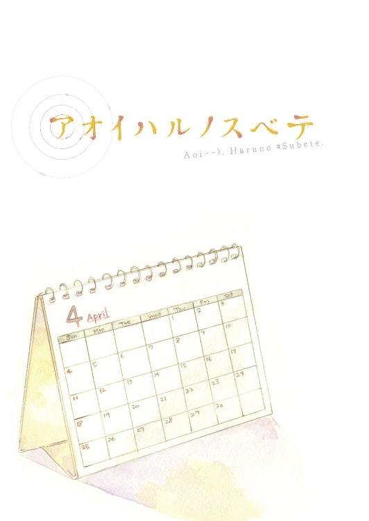
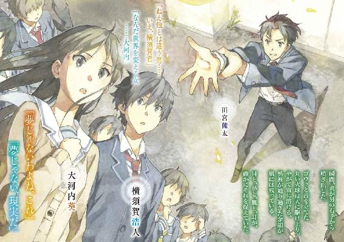
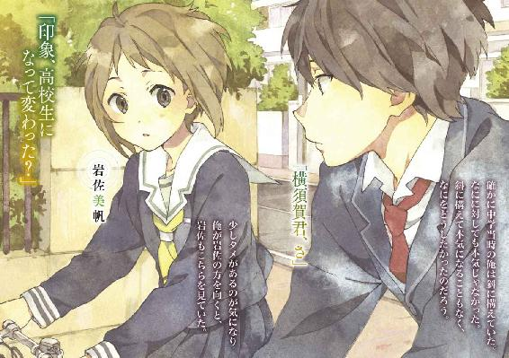
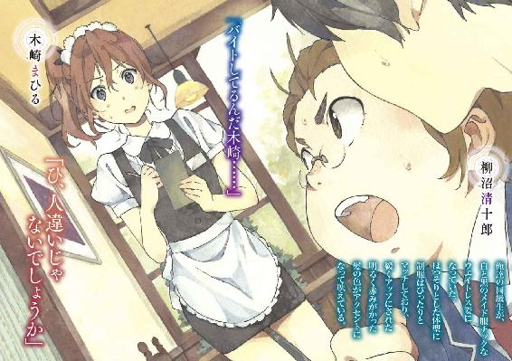
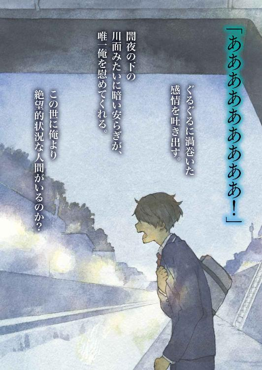
本作品の全部または一部を無断で複製、転載、配信、送信したり、ホームページ上に転載することを禁止します。また、本作品の内容を無断で改変、改ざん等を行うことも禁止します。
購入時にご承諾いただいた規約により、有償・無償にかかわらず本作品を第三者に譲渡することはできません。
本作品は、底本の表現や演出を考慮して本文縦組で制作しております。また一部のページを改変しております。ごらんになるリーディングシステムにより、表示の差が認められることがあります。
くだらない、うだつの上がらない、どうしようもない三年間の高校生活が終わる。
そんな高校生活終了間際に俺はある場面を目撃していた。
男と女、二人の人間の話し声が聞こえる。
「ねえ、君は死ぬみたいだけど」
「高校生活に、後悔はない？」
女が問う。
「やり直したくないって思うくらい完璧だった？」
「いや」
やっと男が返す。
「高校卒業で人生が終わるってことは......幼稚園を出て、小学校を経て、中学校に行って、十数年間やってきた集大成が、これってことだよ」
男もなにか喋っているのかもしれないが俺には聞き取れない。
「納得している？」
「それでいいの？」
女は立て続けに尋ねる。
「......いや」
「じゃあ、もう一度高校生活三年間を生きられるとしたら、どうする？」
女は尋ねる。話してもしかたがないような、空想の話を――。
＋＋＋
「しかし新任教師で今の輪月高校に配属になるとは......大胆な抜擢だな」
「そ、そうなんですか？ 上手くやれるか不安です......」
「大丈夫だ。優秀だという話も聞いている。期待されているんだ」
「は、はあ」
「じゃあ前段の調査報告資料は読んできてくれたと思うが」
「はい。『第四次輪月市立輪月高等学校における生徒集団妄想症候群調査報告書』の抜粋版と補足資料でいいんですよね」
「簡単に確認をするぞ。『輪月症候群』とは？」
「輪月高校に入学した生徒達にしか見えない不思議な力、です」
「見えるだけか？」
「いえ、実際に生徒達はそれを五感で知覚します。しかし他の人間が感じることはできないですし、物理的な観測もできません」
「一番初めに『輪月症候群』の力を発現した者はどんな力だった？」
「【フラッシュライトを焚く】、です。その次が【特定人物の感じる重力を操れる】、次が【特定条件下で相手の心を読める】......」
「わかった。もういい。『輪月症候群』に対する感想は？」
「ええと」
「回答に対して採点がある訳じゃない。感じた通りに言ってくれ」
「なかなか信じがたい......。大人達もよく信じたな、と」
「医者や学者からなる特別な調査チームが作られ、集団妄想、集団ヒステリーとはっきり結論づけられている」
「す、すみません。疑っている訳ではなくて」
「いいんだ。そう思うのは当然だろうし、疑問は素直にぶつけてくれていい。そうやっていくうちに俺達みたいに頭の固い大人達にもなんとか理解できるようになるのが、『輪月症候群』だ」
「あの......発生当時から輪月にいらっしゃったんですよね？ 実際はどうでした？」
「まあ、色々あったな」
「混乱とか凄かったですよね......。授業どころじゃないだろうし」
「どういう想像をしているか知らんが、思ったほどではないぞ。荒れていてもっと酷い学校の方が多い。元々学力のある優等生校だったことのおかげだな。しかし」
「......しかし？」
「色々はあった」
「遠い目をされると凄く怖いんですけど」
「なに、恐れるものじゃない。悪戦苦闘の歴史があるだけだ。初めは一人一人としっかり話し合い、俺達も全てを理解しようと試みた。ところが人数が増えすぎたり、また噓の申告があったりで回らなくなった。新しく入ってきた一年生にはまだ十分な知識もないだろうから初期の指導を充実させ、初めから関わらせない方針をとった。しかし上級生達から話は簡単に漏れたし、無理に押さえつけたため反発を招いた」
「子供が持つものを、大人が無理矢理管理しようとしたり取り上げようとしたりしても上手くいかないですよね」
「言うじゃないか。当時の大人達は必死だったというのに」
「すいませんっ。生意気言って。全然、そういう意味じゃなく」
「だがその通りだから返す言葉もない。しかも去年から生徒会を中心にして生徒達主導で話を進めたところ、思いの外よい傾向に落ち着いた。おかげで教師達は余計な手出し口出しをするなという方針になっている」
「よいことではないのでしょうか」
「だがおかげで俺達に回されるのは嫌な役割ばかりになってしまった。上の人間達も教師を介さず勝手なことをし出すし......と、愚痴になってしまったな」
「いえ、そんな。勉強になります」
「裏の話はあとにして......。まずはマニュアルに沿った講習を始めよう」
「よろしくお願いします」
「知っての通り輪月高校は市内トップクラスの進学実績を誇る公立校だ。能力の高い者、意識の高い者が集まっていると言っていいだろう」
教卓で一年Ａ組担任高橋俊吾が話している。体育を担当する高橋は、まだ肌寒く感じる日もある春先だというのに太い腕を半袖のＴシャツから覗かせている。
「将来のことを考えて、変な噂には惑わされず勉強と部活に励むように」
人生なんて、どれだけの高校生がまともに考えているだろうか。なんとなく大学にいって、全てはそれからと考えている奴も多いはずだ。
「早すぎだと思うかもしれないが、早期に意識することが、必ずお前らのためになる」
入学式から二週間が経過した教室で、俺、横須賀浩人は一番後ろの席に座り、とにかく固いだけで役に立たない担任の話を右から左に流している。
窓の外を眺めているといつの間にか授業時間の終わりを告げるチャイムが鳴っていた。
「以上、今日も勉強に励むように」
本来体育であったはずなのに、という恨めしげな表情が皆の顔には浮かんでいた。この学校は柔軟に授業時間を変更し、いきなりホームルームがぶち込まれることがある。
しかしこう何度も何度も「勉強しろ」「勉強しろ」と言って効果はあるのだろうか。逆に反抗心を生む気もするのだが。
まあ......俺の場合人の二倍聞かされているから余計にそう思うのか。
「マジだるいわー。一年間あの担任と付き合うとか......。なあ横須賀」
俺の左隣の男子が話しかけてくる。蓮田という男子だ。
「だ、だよな。鬱になるっていうか」
更に左斜め前の、野上という男子も話しかけてくる。
「相変わらず横須賀は急に話しかけられるときょどる時あるよなー」
「い、今のはたまたまだろっ」
「いやいやそんな焦んなよー」
高校生活が始まって約十日、今のところ隣席の、リア充と呼べるであろう垢抜けた二人とも上手くやれている。
クラスの男子には特定の声がでかい奴はいないのだが......「あ！ 上園さーん、それ持ってるんだねー」と大陸間弾道ミサイルが一基飛んでいた。
ばっちりお洒落を決め込んだ女子達三人。その中で唯一座席に着く森本成美がミサイルの発射源だった。
「あ、うん。そうなんだ～」
急に話しかけられた上園は立ち上がって森本に応じる。
「アタシもついこないだ見つけていいなって思ってたんだー」
森本のほとんど金に近い色の明るい髪はくるくると巻かれて両サイドに下ろされている。濃すぎる化粧と高圧的な態度がまさに女王、といった風情である。有力な対抗馬がいない一年Ａ組は、森本王制成立待ったなしなんだろう。
「高橋だと絶対体育の授業も面白くなさそうだもんな。って聞いてるか横須賀？」
蓮田が俺に尋ねている。教室の様子に気をとられていた。
「お、おう。悪い。高橋だと基礎体力強化ばっかでゲームやらせてくれなさそうだしな。確かに野球上手いし能力はあるのかもしれないけど......」
「え、なんでそんなの知ってるの？」と野上。
「......あ、たまたま、聞いたことが。......姉貴も輪月出身で去年卒業したんだよ！」
「そっか、姉ちゃんいるのか。てか慌てすぎでしょ」
危ねぇ......、と内心俺は冷や汗をかく。俺は普通の人間にはあり得ない記憶をほんのわずか保持している。
「おう、昨日言ってた話なんだけどさ」
別の男子がやってきて、蓮田と野上を交えた会話を始める。
かさり。
軽いなにかが、俺の後頭部に触れた。
「あ、ごめんなさ――」
――がん、と突如頭を殴られたような衝撃があった。
目の前が真っ白になる。真っ白な世界が広がる。
「ねえ、君は死ぬみたいだけど」
真っ白な世界で女が、男に向けて言う。
「高校生活に、後悔はない？」――
「ちょっと、大丈夫？ プリントがかすっちゃっただけよ」
またこれだ。後遺症みたいなものだろうが、前触れもなくフラッシュバックが起こることには本当に難儀している。
「聞こえているのかしら？」
「......ああ、なんだ？」
俺は瞬きをし、おかしくなっていた目の焦点を正面に立つ人間に合わせる。
とても綺麗なものが目の前にあった。
絹糸のように光沢のある長い黒髪が真っ直ぐ下に伸びている。これだけのロングヘアーなら少しくらい痛みや乱れがあってもよいだろうにそれが全くない。
顔はどこか日本人離れしていて北欧系の雰囲気だ。
ボリュームのあるまつげに縁取られた大きな瞳、高く通った鼻、形の綺麗な耳に桃色の薄い唇。それら素晴らしく整った顔のパーツが抜けるように白い肌の上に絶妙なバランスで配置されている。
制服から覗く手足はすらりと細く美しく、壊してはいけない繊細な美を感じさせた。
西洋のおとぎ話に出てくるお姫様のようなそいつは、大河内葵といった。
「横須賀君、相変わらず目つき悪いわね。朝ご飯ちゃんと食べてる？」
「......食べてるし牛乳も飲んでるからカルシウム不足もねえよ」
「つまり取り返しがつかないのね。......ごめんなさい」
「本当に申し訳なさそうにすんなよ」
図抜けた美貌にはっきりとしたもの言い、間違いなくクラスの中心になっていいタイプなのだが、大河内にその気配はない。
と言うのも、大河内は少々アレな少女だからだ。
「ところであなたのできる凄いことは見つかったのかしら？」
「......まあ待て。まだ慌てる時間じゃない」
「全く進展してないんでしょ」
「お前もだろ。えーと、なにを変えるんだっけ？ バカでかいもの掲げてたよな確か」
「私はすぐできるなんて言ってないわ。今は準備期間」
「はんっ」と俺は鼻で笑ってやる。
クラス最初のホームルームでの自己紹介の時である。
定型的なプロフィール紹介のあと大河内はこう言ったのだ。
――私は世界を変える女です。
それ以上大河内は説明しなかったから、ネタなのか、中二病的な妄想なのか、将来そうなれるよう頑張っていきます宣言なのか、判断がつかなかった。
ど田舎ではないけれど山も海もあって決して大都会とは言えないここ輪月市に、大河内はこの四月に東京から越してきていた。当然中学からの知り合いもおらず、周りも大河内の扱いに迷っているのであった。
だけどそんな中俺は、あとでこっそり大河内一人に告げたのだ。
「『俺も他とは違う。凄いことをする予定の男なんだ』」
「俺の過去のセリフを一字一句違えず言うんじゃねえ！」
「『なんでかって？ 俺は世界の秘密を知っている、選ばれた特別な存在だからな。詳細は言えないが』」
「ぐ......うう......」
「なぜあんな恥ずかしいことを真顔で言えたの？」
「や、やめてくれっ！」
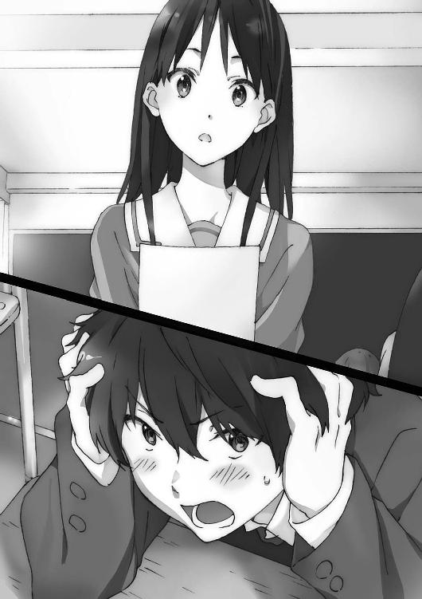
あの頃の俺はまだ万能感に包まれ調子に乗っていたのだ。
そこに中二心をくすぐることを言われ、自分の中で留めておけばよい内容を他人に口走ってしまった。まだ大河内だけにしか言っていないのが救いか......。
とはいえ。
「でも私はちょっと面白いと思ったわ。期待してるのよ？」
大河内みたいな女子と喋れているのはついている、かもしれない。
「それにそろそろ動き出すかもしれないわね。もうすぐという噂もあるし」
「あの噂に大河内も期待しているのか？」
尋ねると、少しだけ考えてから大河内は答えた。
「ええ、期待している」
そう言って大河内は自席に戻っていった。
「......横須賀。お前大河内と普通に喋れてるってすげーな」
蓮田と野上が別の男子との話を終えて俺に言う。
「なに喋ってたの？」
「いや普通の会話を......」
「へえ、だったら俺も狙っちゃおっかな～。変わった子の印象があってアンタッチャブルにしてたけど、あんだけ可愛くて性格も普通ならなぁ」
「確か生徒会にもスカウトされてたらしいよ。ほら、うちって生徒会の権限やたら大きいから人選も本気らしいんだよ」
「優等生が俺にだけ見せる顔......燃えるねー」
「僕的には勉強も運動も完璧すぎて萎縮しちゃいそうなんだけど」
蓮田と野上が女の子論評を始める。
この会話には上手く加われる自信がないので参加しない。......いや、女の子と付き合えるかどうかは、些事だからいいんだ。
「飯を食おう横須賀！」
前の席に座る男が椅子を一八〇度回転させる。
上向きに生えた髪はやたらと固そうで、丸形のメガネは研究者っぽい。中肉中背と言うには少しダイエットが必要な体つきだが、実際は脂肪ばかりではなく筋肉質らしい。
「野上や蓮田と食べようと思っていたんだが」
「なんだと......オレを裏切ると言うのか......!?」
「約束もなにもしてねーだろ。じゃあ野上達も一緒に......」
野上と蓮田は俺達とは反対の方を向いて、弁当やコンビニのパンを広げている。
「ふふ......相手にされてないじゃないか」
「みんなお前と関わるのを嫌がってるんだよ」
「オレは天丼だぞ横須賀！ 天ぷらとご飯とつゆを分けて持ってきているから今作る」
「話を聞け」
柳沼清十郎、この男についての印象は『変人』という一言に尽きた。
そんな柳沼と付き合おうと思ったのは、ある事柄の知識量が豊富だからだ。
俺は仕方なく鞄をごそごそと漁って弁当を取り出す。柳沼とは違って普通の弁当だ。卵焼きがあって、ウインナーがあって、昨日の残りの肉野菜炒めがあって、あとは白飯。
「ところで、もうそろそろだなぁ、過去の事例からすると」
「なにがだ。......って柳沼だからあれしかないよな」
「輪月症候群！」
「でかい声で言うなよ」
「興奮せずにいられるかっ。オレはそれがあるから輪月高校に入ったようなもんだ」
「......本気度が違いすぎるぞお前は」
ふん、と偉そうに威張る柳沼は、世にも珍しい『輪月症候群』オタクだった。
世界のここだけにしかない、まだ俺達一年生は見たことがない、『輪月症候群』と呼ばれるものがこの学校には存在する。
柳沼は『輪月症候群』のことになると周囲を全く顧みない。おかげでクラスメイト達は引き気味で、まともに話しているのは俺くらいだった。しかしこいつの近くにいると『輪月症候群』の噂話や知識が自然と耳に入ってくるのは間違いなかった。
「だって異能だぞ!? 風を吹かせ、雷を起こし、太陽のような光を放ち、重力をも操り、人の心を見透かせてしまう！」
「どれかは絶対噓だろ......と否定できないのが『輪月症候群』だよな」
『輪月症候群』は俺達に普通ではあり得ない超常的な力を与える。
しかもその力は人によって多種多様。ただし、一人に一つだけの力だ。
輪月高生全員が力を使える訳ではなく、力に目覚める者は一人ずつ徐々に増えていくのだが、力の種類は未だに底を見せる気配がないと聞く。
「夢のような世界だな！」
「まさしく夢みたいなもんだけどな」
それは全て輪月高校の生徒にしか知覚できず、現実になんの影響も与えない。
だから輪月高生だけが見る幻のようなものだとも言える。
「でもオレ達には見える・聞こえる・感じられる・嗅げる・味わえるんだぞ！」
「わかってるって」
「なんだ気のない返事だな。まさか横須賀も低俗な古来の価値観に縛られた下民達と同じように信じていないのか？」
「俺は信じてる。何度も言ってるだろ」
それぐらいの奇跡を信じなければ、自分の身に起こった奇跡を信じられない。
だって俺は――。
「そうかよかった！ 約二年半前に〈シンドローム〉を使える者が初めて現れてから今に至るまでを、また子細に語ってやらなければならないのかと思った」
「お前が話したいだけだろ」
「バレたか！」
わははと笑う柳沼はテンションが高い。
「『輪月症候群』の力が感知できるようになるのはいつか......。オレ達は〈シンドローム〉を使えるようになるのか......！」
実際に不思議な事象（輪月高生にしか見えないが）を起こす力が〈シンドローム〉。それが知覚できることを含め一連の総称が『輪月症候群』である。
その『輪月症候群』の事象が見えるようになるのは、輪月高校に通っていればあとは時間の問題らしい。
俺達一年生にはまだ『輪月症候群』そのものが見えていない。
だから周りも、期待しつつ信じている奴、半信半疑の奴、噓に違いないと言い続けている奴とまちまちの状態だ。
「しかしクラスには未だに『輪月症候群』は怪談話の類いだと言う奴がいるのはな～。全く、多くの人に認められた本物なのに。教師ですら注意をしているんだぞ」
「半信半疑なのは理解できるがな」
約二年半前に出現したこの症候群は、医師や教師も認める存在となってはいる。
しかし『輪月症候群』は輪月高校外に広がることはない。
町の周辺住民しか存在を知らないし、なにか公的に発表されている訳でもない。
更に輪月高校を卒業してしばらくすると全く知覚できなくなってしまう。完全に輪月高生だけのものだ。
だから町でも地域の流行病、もしくは単なる怪談と認識している人間も多いのだ。
『輪月症候群』は生徒の体に悪い影響を与える訳でもなければ、外部の人間に害をもたらすこともない。
世の中的には、そういうものである。
会話が途切れ、自然と周囲の話し声がラジオ代わりになる。
「『輪月症候群』実際どう思う？ 志望校迷ったけど」
「でも進学実績考えたら、輪月でしょ」
「だよなぁ。去年はイマイチだったらしいけど」
「まあ『輪月症候群』があってもこれまでなんとかなってる訳だし」
はぁ、と柳沼は溜息を吐く。
「進学実績なんかに縛られてどうするんだ。『輪月症候群』はそんなちんけなものを凌駕するというのに」
一人でぶつくさ言い、柳沼はエビの天ぷらに大口でかぶりついた。
「......エビ多いなお前」
「好きなものを好きなだけ食べる！ のが我が家の家訓だ」
「ああ......そう」
化学の授業を担当しているのはもう初老だろうというベテランの男性教師だ。理科室から動きたくないのか、座学だけでも移動教室になることが多い。
「......さて、今日はここまでにしようか」
この教師はいつも五分くらい早く授業を切り上げ、残りを雑談タイムに当てる。
「そう言えばもうじき始まるのか、アレが」
アレという表現に生徒全員が反応する。
「ふーむ、今は他の先生からどう言われているんだっけなぁ？ あの病気のことを」
なあ、と教師は近くの生徒に問いかける。
あの病気のこと、で輪月高生には十分伝わる。
一人の男子が答えた。
「えと......担任は『細かいことは口出ししない』って。でも今度、カウンセラーの先生の話があるとか」
「おお、そうかそうか。......高橋先生は真面目だからなぁ......。カウンセラーの先生は今年は男女二人だったか？ まあどちらに当たるか楽しみにするといい。同性も異性も相談してみると......」
そこから心理学の話へ脱線し、授業が終了した。
「つーかあのじいさん、『輪月症候群』の話題ものほほんと話すな」
教室への帰り道、廊下を歩きながら蓮田が言った。
「高橋はもうちょっとピリピリしてたよね」
野上が言う通りＡ組担任高橋は『輪月症候群』の話をする時いつも険しい表情になる。
「あ、ちわーす」
蓮田が頭を下げた。
「誰？」と通りすぎてから俺は聞く。
「同じ中学の先輩」
「あ、じゃあ先輩から『輪月症候群』の話聞いた？」と野上が尋ねる。
「それがさー、あんまちゃんと教えてくれねーんだよ。『いずれわかる』とかスカしやがって」
「恐ろしいものだから口に出さないのか、逆にいいものだから出し惜しみしてるのかわかんないよねー。横須賀君は不安派？ 期待派？」
「どっちか選ぶなら俺は......期待派かな」
しかし言ってから、この答え方でよかったのかとふと不安を覚える。
「ああ、というか柳沼君の『輪月症候群』の話にもついていっているもんね」
野上は特になにを思っている訳でもなさそうだ。
「あれは仕方なく付き合っているだけ、みたいな......」
「つか次の数学宿題なかったか？ やべっやってねえ!? 野上か横須賀模写ＯＫ？」
蓮田が急ぐので、俺と野上も早足になって教室へ戻った。
「よし、そこまで。一番後ろの奴から前の奴に回していけー」
数学教師の言葉で、先ほどまで無言だった教室がざわめきに包まれる。
「難っ」「全然できねー」「最後の計算間に合わなかった～」
抜き打ちで実施された数学小テストの感想を言い合う声が飛ぶ。
「横須賀どうだった？」
隣席の蓮田が尋ねてくる。
「......勉強した分の記憶が残ってれば」
学年トップクラスも夢ではなかったのに。
「記憶に残ってないと、そりゃ意味ないな」
「そういう意味ではなく......おっと悪い」
前席の柳沼が振り返ってじーっと俺を見ていた。慌ててプリントを渡す。ていうか話しかけろよ。
「あ、わかった。記憶の〈シンドローム〉があればよかったって言いたいんだ」
野上が話に加わってきた。
「秘密道具みたいなことまでアリなのかよ......！」
「そういう便利ツールじゃないはずだぞ......確か。あくまで幻だから」
「夢を壊すなよ夢を。まあそんな本気で期待してねーけど」
「やっぱり詳しいよね横須賀君」
「まあ、色々聞いて詳しくなったんだ」
だいたいは柳沼から得た知識であったが......本人は全く会話に入ってこなかった。
六時間目の授業が終わって、担任の高橋がショートホームルームのため教室にやってくる。それが済むと、帰り支度を終えた者から席を立ち始める。
入学式から数えると学校生活も二週間経った。そろそろ皆慣れ始めてもよい頃だ。
だがそれと反比例するように、別種類の緊張感が今は教室を支配しつつあった。
噂によるともう間もなくなのは、皆知っている。
だから銘々がいそいそと準備をしながらもどこか動作が緩慢に感じられる。なにかを気にしているように思える。
そいつがやってきて、もしくはこないならこないとわかって、本当に自分達の高校生活は始まるのだ。
いつか。まだか。もうすぐか。
輪月高校の一年生全員がその思いを燻らせている。
一年Ａ組の扉が、外から開かれた。
前のめりに誰かが教室に入ってくる。他クラスの男子だ。走ってきたのか息が荒い声は、教室中に響き渡った。
「Ｄ組で目覚めた奴がいるって！」
室内から音が消え去った。
話し声はまだしも、ものを動かす音さえなくなる。
皆、言葉の意味を理解するのに数瞬かかったのだろう。
目覚めた奴がいる。
額面通りその言葉を受け取るだけでは、なんのことか全くわからないだろう。
でもそれだけで、ほぼ全員の生徒に伝わった。
そのセリフがなにを意味するかわかるくらいには、誰もがその『噂』を知っていた。
そして無音無風となった世界が、爆発的に動き出す。
信じていた奴、半信半疑の奴、信じていなかった奴、全員の世界が上書きされていく。
状況をまだ理解できていない奴が大半だろう。俺も当然驚いた。驚いたが、他の奴らよりも冷静な目は保てていた。
「マジか！」「ホントなのかよ!?」あからさまに大声を上げる者。
「......本当だったんだ」「ついに......」早くも受け入れている者。
「噓でしょ～？」「はいはいないない」信じずに否定に回る者。
「......」なにも言わず動きだけ止めて聞き耳を立てる者。
「ついにきたああああああ！」俺の前席で叫ぶ奴。
学校が始まっておよそ二週間。
俺達の本当の高校生活が、今やっと始まるんだ。
「体育館の裏で実演するらしいから見たいなら来いよっ」
言い残すと男子は去っていった。
「おい横須賀氏聞いたか行くしかないぞっ！ おおおおきたああああ！」
『輪月症候群』オタクの柳沼が俺の肩を摑んで体を揺さぶってくる。
「ちょ......やめろ！ 興奮しすぎだお前は！」
「この機会が本当にやってきたんだぞ!? わかっているのか横須賀!? うおおお！」
柳沼は俺を突き飛ばすようにして走り出し、
「行くしかねえええええ！ あれ場所どこだああああ!? 体育館裏かああ！」
と叫びながら教室を出ていった。これと同族扱いされるのは勘弁だ。
「......俺も行かねえと」
俺が立ち上がる後ろで、
「行く？」「いやまあ」「でも部活がさ」「すぐだろ」「一瞬ならさ」「一瞬な」
続けてがたがたと皆も席を立ち、動き出す。
体育館の裏口側は石が敷き詰められた駐車場のようなスペースとなっていた。特に使い方が決まっているようではなく、今車は存在していない。
その普段誰も集まりやしない場所に、今一年生がひしめき合っている。
何人？ 何十人？ 何百......は言いすぎか。
少しでも前に行こう、前に行こうと皆がするものだから、とんでもない人口密度になっていて、正確な人数は全く見当がつかない。
その集団の中心よりやや前で俺は、揉まれていた。
「おいやめろ痛い痛い!?」
そこかしこで声が上がり、俺も声を上げる。左の奴が強引に前に進もうとして、俺は左肩を押されてぐるんと反転し後ろ向きになってしまった。
「結局なにがあんの？ ちゃんと見てわかんの？」
「楽しみにしてたんだよな～！ 輪月受けて落ちた奴に連絡しよ」「お前性格悪いな」
「つーか俺達ももう使えるようになるんだっけ？」「それは違うはず。ずっと使えない奴もいるし」「マジかよ......。そうなったら見てるだけ？」
「なあ、先輩が言ってたんだけど異能バトルできるってマジ？」「おお、その発想はなかった」
「私達の体大丈夫なの......」「わたしのお姉ちゃんは病気にもなってないし普通に卒業して大学入ってるし」
みんな口々に『輪月症候群』のことを喋っている。
期待と不安が入り交じる。混沌としている。
「あとからの割り込みやめなさいよー！」義憤に駆られた女子が叫ぶ。
円から出ようとする奴もいて俺はわちゃわちゃ揉まれ揉まれ、気づくと半円形に広がる集団の先頭列にきていた。
「おいあいつでいいのか？」「だろ」「誰？」「え、なんて？」「誰!?」「知らん！」
先頭はがやがやとうるさい。そこから数メートル距離を置いたところに、男子が立っている。非常にさわやかなスポーツマンの印象だ。
名前は確か田宮健太。
「あら」
「ん？」
俺の真横に大河内葵がいた。
「一番先頭にいるなんて、あなたも好きね」
大河内はクスリと笑う。人混みの中でも所作は優雅だった。
「たまたまだ。つーかお前もだろ」
「照れなくてもいいのに」
「照れてねーよ。おい、前」
合図もなく、男子が右手をゆっくりと上げた。
ぴしりと伸ばして、掌を真上へ掲げる。
うるさく騒いでいた前方の奴らから、ざわめきが徐々に引いていく。釣られて後ろ側も静かになる。波のように話し声が遠ざかっていく。
教師に注意されてもこれだけ早く話が終わらないだろうに、今や密着した隣の人間の息づかいが聞こえてくるほど静かになった。
視線は一点、前に立つ男に集まっている。
俺も自然と拳を握っていた。
「うりゃあ！」
男が声を上げる。
瞬間炎が男の右手から噴き出した。
燃える。
熱風に顔面を襲われ顔をしかめるが、それは一瞬にして過ぎ去る。
直径三十センチほどの火球が真っ直ぐに立ち上り、瞬く間に消えたのだ。
そのあとなにかが焦げた匂いが周囲に漂った。
男の手にはなにもない。
周辺に発火装置もない。マジックじゃない。トリックを挟む余地がない。
「おりゃ！」
更にもう一度、男のなにもない手から火の手が上がる。
ゴウッと音を立てた丸い火球は天に駆け上り、やがて宙に溶ける。
熱波が通り過ぎた余韻が肌には残っている。
目と、鼻と、肌と、耳が、確かにそれを捉えていた。
噓じゃない偽物じゃないまやかしじゃない幻じゃない。
無から炎を出せる人間がいる。
「ねえ他とは違う男......いえ、横須賀君」
「なんだ世界を変える女......大河内」
「夢じゃないわよね、これ」
もちろん噓だろって、俺も思う。
自分の常識じゃ測れないことだから、今まで学んできた常識からはみ出ることだから。
いくら輪月高校にはそういうものがあると噂されているからといって、すぐに信じられるものではない。
でも無理矢理に頭に叩き込むしかない。
「夢じゃない、現実だ」
きっとここをきっかけに俺の人生は逆転する。
「は、は、は、始まった......オレの人生始まった！」
近くにいるらしい柳沼の叫ぶ声が聞こえる。
「本当なのよね......本当なのよねっ！ ねえ横須賀君!?」
「見たままだよ、これが真実なんだよっ！」
全世界のここだけにしかない『輪月症候群』の影響下に俺達はある。
でも俺にあるのはそれだけじゃなかった。
他の人間とは全く異なった唯一無二の状況にある。
この世界の誰も知らない秘密を、俺は知っている。
「あ、危なくないこれ!?」
「幻だから大丈夫だって！」
確かに『輪月症候群』は現実にはなにも影響を与えない、限られた学生にしか見えない幻だ。ただの集団妄想、集団ヒステリーだと考えられている。
でも今は幻でも、三年後までには現実に影響を与えるものが出現する。
三年間の時を経て、ここに帰ってきた俺はそれを知っている。
＋＋＋
男と女が話すのを俺は眺め続けている。
「じゃあ、もう一度高校生活三年間を生きられるとしたら、どうする？」
女は尋ねる。
「......〈シンドローム〉で？」
男が問い返す。
「そう。でも運命が変えられる訳じゃないから勘違いしないで。歩みは変えられるけど、最後に辿り着くところは絶対に一緒。君は死ぬ」
ファンタジックな話をしているのかと思えば、中身はなかなかに残酷だ。
「それでもやり直したいと思う？」
女は重ねて問いかける。
「この世界全てを巻き込んででも、人生をやり直したいと思う？」
「やり直したい」
男は答えた。
その答えを聞いた時俺は、もしかしたら不謹慎かもしれないが、内心の喜びを抑えきれずにいた。
誰かに巻き込まれてであろうが、俺も人生をやり直せるのなら願ったり叶ったりだ。
全く理想的ではない高校生活だった。
でも二度目の高校生活がやれるなら、なにかが変わるかもしれない。
失敗の教訓があるからこそ、完璧にやれるんじゃないか。
いや待てよ。その時俺は、やり直しの世界だって気づけているのか？
皆が三年間巻き戻ったことを自覚していたら世界は大混乱だ。巻き戻った事実を忘れている方が道理に合う。となると、俺はやり直しに気づけず二度目の世界を生きるのか。
だったら意味ないじゃん。また同じような高校生活三年間を繰り返すだけなんて――。
だけど俺の思いなど無視されて〈シンドローム〉は発動された。
白い世界がぐにゃりと曲がる。
ブラックアウト。
世界が終わる。
＋＋＋
俺の新たな人生は四月一日から始まった。
その日、俺は今まで感じたことのない奇妙な感覚に包まれながら目覚めた。
まるで長い冬眠から覚めたようだった。体を起こそうとしても、違和感があって体が動かない。脳から送られる信号と、体の動きとが嚙み合わない。
記憶喪失みたいに、起きた時に自分がいる時点のことがわからなかった。
そして俺は携帯電話に手を伸ばしディスプレイを表示させ、気づく。
日付が、俺が生きているはずの年の三年前の表示だったのだ。
否定しようとした。妄想だと切り捨てようとした。だが俺には確かに、三年間の高校生活を過ごした記憶があった。
妄想だと言うにはあまりに生々しすぎた。
ただ俺を迷わせたのは、高校生活で覚えているのがあくまでおおざっぱな印象のみだったことだ。
部活には入らなかったとか、文化祭はしょうもなかったとか、クラスには上手くなじめなかっただとか。イベントごとの結末とその印象だけは覚えている。でも出来事の詳細を覚えている訳ではないのだ。勉強したはずの知識も消えていた。
いったいどうなっているのか全くわからないまま、ともかく家族が入学式から遅れるな、高校に行けと言うので、何百回と往復した道を辿って輪月高校に向かった。
だがそこで、俺ははっきりおかしいと悟ることになる。
俺は、入学したばかりの高校の同級生や教師達を、初めから知っていたのだ。
俺は高校一年生になり、初めて学校の敷地内に足を踏み入れたはずだ。
ところが一年生の半分くらいは見たことがある奴だったのだ。
更にクラスの教室に入って、俺は自己紹介の前からほぼ全員の顔と名前が一致する自分に気づく。
そしてその四月一日以降俺の脳裏にはっきりこびりつき、未だに夢に見るあの光景。
白い光。男と女。その会話を離れた場所から聞いている俺。
誰かがこの世界を一旦白紙に戻し、やり直しているという話。
靄がかかっているが、でも鮮明なその記憶は、きっと夢ではなかった。
あれは本当にあった出来事なのだ。
こんなもの他人に言わせれば馬鹿げた妄想と笑うだろう。
だがそれを信じたくなるような事件も実際にあった。
四月一日の一カ月と少し前、二月末のことだ、輪月市と周辺の一部地域で磁気異常が発生し、電波時計が三年後の日付を数十秒間表示し、その後元の日付に戻る事象があったのだ。
世間的には大きく取り上げられず、地方の新聞に小さく記事が載った程度だった。
しかし当時のネット上の反応を漁ると「巨大地震の前触れだ」「観測史上最大の台風がやってくる」「小型の隕石が落ちたせいだ」などと勝手な推測が錯綜していた。
そんな中、俺はインターネットの掲示板の端に残されたある書き込みを発見する。
――世界が三年分巻き戻ったんだ。
俺はそれこそが真実だと思っている。
×××
人生一度きりだから。
その殺し文句で以て、ある人は人生をかけたギャンブルをし、またある人は失敗だけしないように慎重に生きる道を選ぶ。
じゃ、もう一度やり直しの人生では？
『あなたは神に選ばれました！』
と、真っ白い紙に赤い字で記された怪しいチラシが目に留まった。すぐ視線を戻す。
信号が青になり、自転車のペダルを強く踏む。
今日の放課後、田宮健太は炎を出してみせた。
あのあと皆は田宮を囲んで質問攻めにするわ、自分達にも炎が出せないかと手を天に掲げる奴がいるわ、詳しい話を先輩に聞きに行く奴がいるわ、教師に報告する奴がいるわ、大変な騒ぎになった。
先輩達は「そろそろだと思ってたよ」という訳知り顔をしていたらしく、また教師達は「事前にそうなると注意はしていたはずだろう。落ち着け。害はないから解散しろ」と嫌にあっさりした対応だったようだ。俺はほどよいところで帰路に就いていた。
自宅から最寄り駅までは自転車。それから電車でゴトゴトと三十分揺られる道程が通学路になっていた。
また信号に捕まってしまう。今日は運が悪い。
キッ、と別の自転車が俺の後ろに止まった。何気なく俯き加減で振り返る。
女子が好みそうな丸みのあるフォルムの赤い自転車だ。見覚えがある。
「ぁ」
「ぅすっ」
ちゃんと聞こえているか知らんが義理を果たすための声を出す。
なにも言わず、岩佐美帆は頭を下げた。
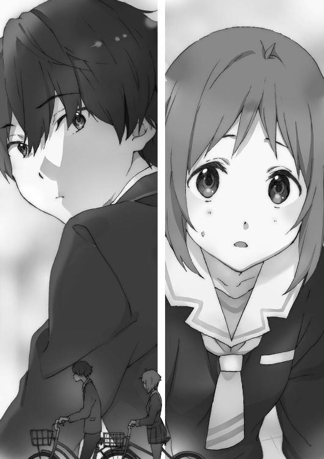
岩佐は小柄な女子で、全然太ってはおらず細い部類なのだろうけど、どこか全身のフォルムが丸っこい。幼い女の子の印象がある。
短めのボブカットは色素が薄くブラウンがかっており、目鼻立ちがはっきりとしたわかりやすい美人ではないけれど、顔はすっきり整っていて和風美人と言えなくもない。
岩佐は俺の家からわずか一ブロックのところに住んでいる。小学校中学校は当然一緒。二人とも子供会に入っていて、完全に家族ぐるみの付き合いで、高校も同じで更に一年のクラスまで被っているときた。これはもう幼なじみと言うしかない関係なのだが。
岩佐は俺に並ぶ訳でもないし、俺も声をかけず前を向く。
まあ、二人はそういう関係である。
いくら家が近くても男と女なんて、そんなもんだ。
もう何年生だったかも忘れたが小学校の低学年頃は、一緒に学校に行くことだってあった。でもそれをクラスの奴らに見つかって「付き合ってんのかよ！」とか「夫婦だ～！」とか言われて「そんなんじゃねーよ！」と言い放ち、お互いに近寄ることがなくなり疎遠になった。ありがちなやつだ。
そのまま中学校でも一度も同じクラスにならず、稀にテスト期間中の学校帰りに偶然会ってテストの出来を話し合うくらいの関係が続いていた。
しかし高校一年生、俺達は同じクラスになった。
「よ......横須賀君」
話しかけられて、どきっとする。
「横須賀君、今日の放課後......体育館の裏で、見た？」
岩佐はおっかなびっくり尋ねてくる。
はきはきと明るく振る舞うだけで周囲の評価も変わるだろうに。もったいない。
「......まあな」
「結構前の方に、いたよね」
「俺がいるのわかってたんじゃん」
「まあ......」
空気が気持ちのいいものにならない。岩佐も話しにくそうにしている。
自分で空気を悪くして、相手の気分も悪くなり、その相手の態度でもっと自分が話しにくくなる。そんな悪循環をしている嫌いが岩佐にはあった。
「なんなんだよ」
「えと......その、間近で見て、どう？ 本物だった？」
「岩佐も見たんだろ、どう思ったんだ？」
「わたしは......凄いマジックだなって」
「信じてないのか？」
「う、噓つきとか思っている訳じゃなくて！ でも......」
信号は青になっている。だけど今や漕ぎ出すタイミングを見失っていた。
でも、の続きを言いたそうにして、岩佐は口に出さない。煮え切らない態度にイライラする。
辛抱強く待っていると続きの言葉が出てきた。
「......でも、どうやってるのかなって」
「どっかから出るんだろ、炎が」
確かに原理原則は、俺もよく知らない。というかそんなもの誰もわかっていない。
また少しだけ間が空いた。
「炎とか......燃えて危ないよね」
「でも本当には燃えていない」
「わ、わかってるけど。......わたし達だけに見える映像、みたいなことでしょ」
「いや俺達は実際に熱いし、炎を浴びたら、下手をするとやけどの感覚も」
「でもしばらくしたら......本当にやけどしてる訳ないな、と気づくんだよね。想像妊娠とか想像で本当にケガをしたみたいになる話と一緒で......」
「なんだよ、よくわかってるじゃん」
偉そうにしてみたが、本当は最近柳沼に懇切丁寧に教えて貰ったため自信を持って言えるだけだ。
「そりゃ、わたしだって調べてるし。一度『輪月症候群』が見えるようになると、他の種類の『輪月症候群』も全部見えるようになるんだよね」
「正確には〈シンドローム〉が知覚できるようになるって表現だけどな。でも詳しいな。どうやって知ったんだ？」
「......友達の話を聞いて」
「それさ、他の奴らが喋ってるのを盗み聞きしてただけじゃねーの」
「いや、そんな、えと、別に、隣にいたっていうか」
「挙動不審になるなよ。もうわかったよ」
また上から目線で言いながら、俺はなんとなく苦い過去を思い出していた。
俺も中学生の頃、クラス内で流れる噂話の情報をよく盗み聞きで入手していた。自分と数少ない友達も知らなければそうするしかない。普段話をしない奴に「その話だけ教えてくれ」というのもなかなか難しい、のだ。
「でも調べるにしても本にもネットにも情報ないし、中学の先生はみんな『気にするようなものはなにもない。大丈夫だから心配するな』って言うし。誰かに話を聞くくらいしか、ないよね？」
「きちんとした本がある訳でもなさそうだし、全部伝聞だろ」
『輪月症候群』が噂になった当初は「テレビや新聞で報道して全国で知って貰うべきだ！」という動きもあったらしいが全く相手にされずに終わり、立ち消えになったらしい（ソースが柳沼清十郎のみなので信憑性は保証しかねるが）。
「高校の先生もちゃんと教えてくれないし......」
「『皆が陥りがちな病気の話だが』とか言ってただろ」
「でも『細かいことでいちいち口出しはしない。スマートフォンのどんなゲームで遊ぼうが自由なのと一緒だ。ただ口出しをしなければならない状況になれば当然出ていく。なにかあれば相談に来い』って......ほとんど放置ってことだよね」
「炎を起こそうが本当になにか燃える訳じゃないし、ゲームと一緒ってことだろ。でもそれを使って喧嘩だとかイジメだとかありゃ教師が出ていく。わかりやすいだろ」
「そういう考え方か......。なるほど」
ふむふむと岩佐は納得したように頷いていた。
「......で、そろそろ行っていいか」
「あ、うん......。ごめん」
いい加減自転車を漕ぎ出そうとして、俺はやっぱり立ち止まる。
聞いてみようとして、少し躊躇う。
変な質問だと思われないだろうか。
いや、今こんな岩佐程度に躊躇ってどうするんだ。相変わらず自分から誰かに働きかけるのが苦手すぎる。
「なんで今日俺に『輪月症候群』のことを聞いたんだ？」
岩佐の顔を見ながら、こいつは素直に答えるだろうかと考える。
「......横須賀君なら真面目な話できるかなって。結構他のみんな、ふわふわしてて。『周りに合わせときゃ大丈夫でしょ』みたいな......」
「岩佐はそうじゃないのか？」
「ちゃんと考えた方がいいのになって。それがなんなのか、とか」
それはある程度皆も思っていることだ。
でもどうしていいかわからなくて、皆様子を窺っている。
「そういう話、他の奴とはできないのか？」
「......他の人がそういう雰囲気じゃないから、違う気がして」
人の空気読んでどうするんだよ、と反論しかけたが俺も同じだと口をつぐんだ。
とんかつとコロッケが並ぶヘビーな横須賀家今日の夕食には家族全員が揃った。
銀行員の父と、主婦をしながらＩＴ系の会社で派遣として働く母と、三歳年上で大学一年の姉絵理奈と、そこに俺。最近は姉の絵理奈がバイトにサークルに忙しいらしいので、四人が揃う機会は珍しい。
「いただきます」
「「「いただきます」」」
四人がちゃんと揃った時は父が最初に言ってから唱和をする。古くて固い習慣だ。
「そう言えば浩人、今日スーパーに行った時岩佐さんとこと会ったんだけど」
大体話題を提供するのは母だ。そして嫌な予感がした。
「美帆ちゃんと今日仲よく喋ってたらしいじゃない」
「あー......」
岩佐と交差点で話し別れようとした時、岩佐の母親と会ってしまったのだ。
「美帆ちゃんのお母さんから電話かかってきてね。久しぶりに仲よさそうに喋ってるって嬉しそうに言ってたわ」
「いや嬉しそうにされても」
「浩人も小さい頃は髪もさらさらで女の子みたいに可愛かったんだけどね。実際女の子とも遊んでいたし。でもだんだん目つきが悪くなって、女の子と関わっている気配も全然なくて、お母さんも心配してるんだから美帆ちゃんはどうなのよ？」
べらべらべらべらと母親が喋る。
「お母さん、それは美帆ちゃんに悪いでしょ」
「なに言ってんのよ絵理奈。昔は二人遊んでたじゃない。美帆ちゃんのお母さんも『浩人君ならクールで頭もよくて将来の収入も期待できるからＯＫ』って言ってるわ」
「......今から収入面期待すんなよ」
「で、結局なに話したの？ ね？ ね？」
母親のノリが女子高生ばりに軽いのはなんとかならんもんか。
「別に大したことじゃねーよ」
と高一の反抗期らしく答えてはみたが、どう考えても母親相手に反抗期やっている方がダサいのでちゃんと答えることにする。
「あれだよ、『輪月症候群』。俺達もついに見えるようになって」
瞬間、家族の箸が止まってテレビから流れる品のない笑いだけが大きく部屋に響いた。
でもすぐかちゃかちゃとお箸が動き出す。
「......『輪月症候群』ね。わたしにはわからない話ね」
母親の勢いが弱まる。
「でも凄いぜ、あれ。炎出してる奴いたし。他も色々あるらしいし」
「へえ......」と母が生返事をして姉を横目で見る。
妙な雰囲気が漂っている。
見えている地雷を、それではあえて踏んでみよう。
「てか姉貴も三月まで輪月だったじゃん、どうしてた？」
絵理奈は口に入ったご飯を時間をかけて嚙んで、飲み込んだ。
「無視しとけ。どうせ卒業してしばらくしたら見えなくなる」
「だから姉貴はどうしてたんだって聞いたんだけど」
「とにかく関わらないでいい。〈シンドローム〉使えるようになったって、使わなければないのも一緒だし」
「姉貴も〈シンドローム〉使えたって昔話してなかったっけ？ てかまだ使える――」
「お前もおかしな病気になったのか」
父が威圧的な声で割り込んだ。
「は？」
「おかしな病気だろ、見えもしない、ありもしないものに騒いで」
「ちょっとお父さん」
「いや父さんの言う通りじゃない？」
止めようとした母を更に遮った絵理奈の口調は冷ややかだった。
「浩人。『輪月症候群』なんて社会でなんの役にも立たないよ。学外の人間には見えないから、外から見ればごっこ遊びしてるのと同じレベル」
「でも見えるし、関わっても面白いと思うけど」
「だからあってないようなものだって。だいたいあんたはいつも反発してはみせるけど、結局すぐ安全策をとりたがる度胸のない奴なんだから無理しなくていいって」
「はいはい了解～」
俺は適当に返事をして、話を終わらせた。
勝手に言わせておけばいい。
この世界からは一度存在した三年間が消えている。
『一度目の世界』が存在し、三年分巻き戻ったここは『二度目の世界』だ。
それを引き起こしたのは『輪月症候群』の〈シンドローム〉だと、俺は知っている。
俺は世界の重大な秘密に大きく関わっている人間だ。
家族は、俺のことを中学までの俺と思って侮っているのだろう。
だけど実際は全く異なっている。
おそらく三年分精神も成長していて、世界の真実を知っている俺は、放っておいてもそのうち凄いことをやってやる。
俺は二度目の高校生活を後悔のないようにきっと上手くやり直す。
だから心配するなって。
夢の中で誰かの思考が俺の中に入り込んでくる。
――友達はゼロじゃなかった。でもどう誇張しても多いとは言えない人数だし、関係も希薄だった。つまり親友はいなかった。
――部活には所属しなかった。あんなものやっていたって、どうせ将来その道で食っていける訳でもない。
「この世界全てを巻き込んででも、人生をやり直したいと思う？」
そこに色が付く。上が青く、地面は灰色。横にも青が広がっている。空がある。下はコンクリート。屋上か。
こんな風に景色が見えたのは初めてだった。
驚きながら、もっと状況を確かめようとする。
屋上なのはわかった。ではどこだろう。転落防止の柵が学校っぽいが。
影を捜すと、やはりいた。男と女。その二人は。
――そこで目が覚めた。
×××
今朝も、あの場面の夢を見た。
しかも男の思考つきだ。かなりろくでもない高校生活だったと見える。
当然ではあるが俺は最初、この学校で夢の中の男と女を捜していた。
その二人に会えばこの世界はどういう状態か、いつまで続くのか、元に戻るのか、諸々はっきりするはずだった。
俺は校内を回ってほぼ全員の顔を見るくらいには捜したが、二人は見つかっていない。
今日の校内の様子は、昨日とは打って変わっていた。
「昨日部活の先輩に〈シンドローム〉見せて貰ったんだよ」「マジ、なに!?」
「あたしも〈シンドローム〉に目覚めないかなぁ」「ね～」
「うわなんで俺休んでたんだよ......？」「昨日にいないとか遅れてるぅ～～～！」
――昨日は革命の日だっていうのに！
俺の周りの一年生の誰もが『輪月症候群』の話題を口にしていた。
昨日を境に、一年生の全員が『輪月症候群』を知覚できるようになったのだ。
「せっかくだったら一度は使ってみたいよな」
「症候群って病気みたいでビビってたけど、バーチャルみたいなもんだもんな」
「え、ビビってたの？ アタシの知ってる先輩なんて【話した言葉が文字で見える】ってなにそのセルフ字幕映画。意味ねー、とかだし」
あはは、と女子が笑うと釣られて周りの奴も「ウケる」と笑い出す。
『輪月症候群』という新しく与えられたおもちゃに皆一様に盛り上がっていた。
流行のものをどれだけ知っているか、皆競うように披露しあっている。
「やあ調子はどうさ横須賀！ オレは絶好調だぞ！」
俺が席に着くと同時、前席の柳沼清十郎はほくほく顔で言ってきた。
そう言えばこいつは初めからぶれていない。
「だろうな、マニアの柳沼にとっては待望の『輪月症候群』のある世界だろ」
「マニア？ 甘いな、探究者と呼んでくれ！ 研究者でも可だ！ ふははは！」
テンションが高すぎて引く。周りはもっと引いているだろう。
「ところで横須賀はどんな〈シンドローム〉を見た？」
「どんなって、昨日の炎見ただけだ」
「おいおい噓だろ？ オレ達にも『輪月症候群』が見えるようになったんだ。色んな先輩が情報解禁して頼めば〈シンドローム〉を見せてくれるぞ」
「ああ......そうか」
なるほど、今まで積極的に情報発信をしていなかった上級生も態度が変わっているのか。ようこそ本当の輪月高校へ、というところか。
「とはいえ積極的に見せてくれる先輩は少ないが......横須賀は誰かあてがあるか？」
「いや......部活にも入ってないから頼む先輩がいねえし」
「......使えないな」
「おい今なんか言ったか？」
「仕方がない。このオレは予定がパンパンな訳だが......一緒にくるか？」
上から目線の態度でくいっと丸メガネを持ち上げる姿が、異様に腹立たしかった。
「オレ『輪月症候群』絡みだと顔が利くからさ～」とどや顔で語る柳沼に、俺は黙ってついていく。知識を得るためだ。我慢我慢......。
まず柳沼が会いに行ったのは二年男子の先輩だった。教室にいた先輩を柳沼はわざわざ校舎裏に連れ出した。
「嫌だよ面倒くせえ」
「いやいやそこをなんとか」
二年の先輩は全く以て友好的な雰囲気ではなくむしろ迷惑そうだ。
先ほどまでどや顔だった男はぺこぺこぺこぺこ、これでもかと頭を下げる。
「ホントこの通～りで！ 旧知の仲なんですから！」
「お前と初めて喋ったの一昨日だぞ」
アグレッシブだなおい。クラスでは俺以外とほとんど喋っていないくせに。
「そこをなんとか、ちゃっちゃとやって貰えれば帰りますから」
「一年にこういうのを見せるのは目をつけられやすいんだよな、生徒会に......」
「生徒会に目をつけられる？ 〈シンドローム〉を使うには生徒会の許可が？」
ギラッと柳沼の眼光が鋭くなる。
「あー......、そういう訳でもないんだけど、校則にうるさいっつーか......」
「でもまさか停学とか退学にはなりませんしねぇ......。しつこいオレを追い払うためには結局これが一番早いですしねぇ」
「自覚あるじゃん。鬱陶しいって」
「おっしゃる通りで。へへへ」
凄いなこいつ、と俺が最早感心していると、「なんで俺が......」とぶつくさ言いながら、先輩がブレザーと下に着るシャツの袖を捲り始めた。
「そ、袖捲るんですか？」
俺は尋ねた。声が上ずりかけたのはノーカンで。
「濡れ......は実際にはしないんだが、気持ちの問題かな」
「え......濡れ」
「エロい意味じゃないと思うぞ横須賀」
「わかってるよんなこと！」
先輩はちらちらと周囲を確認する。校舎裏に人影はない。
「いくぞ」
それを放つ時どこかが光る訳じゃない。風が吹く訳じゃない。気の流れが変わる訳じゃない。予兆なんてものはまるでない。
しかし先輩の両手からは水が噴き出した。
見えないホース二本を持っているみたいに左右の手から水が出る。水は重力に引かれて扇を描くように地面に落ちる。
どぼどぼと地面に注がれる水は、しかし水たまりを作らなかった。
「触っても大丈夫ですかね？」
「好きにしろよ」
「じゃ遠慮なく。ほら横須賀も」
「お、おお」
俺もそろそろと噴き出す水に手を伸ばす。
冷たい。水圧に掌が押される。手を濡らした水がぼたぼたと下に落ち、でも水たまりにはならない。
「水だ......」
完全に水だった。とてもじゃないがまやかしには思えない。
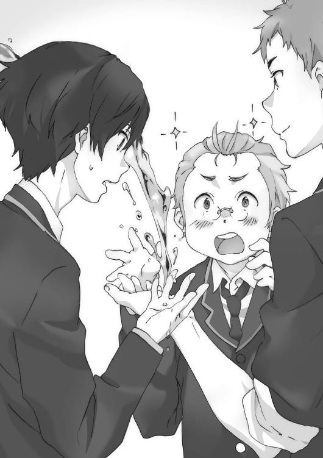
「ちなみにー、と」
柳沼は両手を椀状にして水を溜め、飲んだ。
「躊躇いねえな」と先輩は呆れるやら感心するやらだ。
「......飲めたっ！ けど腹に溜まっている感じが......ゼロだな」
「言っとくけど飲めてないからな」
「へー、この水飲めたら干魃の続く村で神になれるのに。もしくは詐欺師」
「人を詐欺師呼ばわりすんな」
じゃあもう行くからな、と先輩はすぐ去って行った。
「ありがとうございましたー！」
柳沼は体育会系よろしく腰を九〇度曲げて頭を下げる。
「......〈シンドローム〉見せるの嫌そうな人だったな」
「二年、三年はだいたいそうだぞ」
「なんで？ 手から水出せるってすげえじゃん」
皆から注目されちやほやされるんじゃないのか。
「ああ、こんな風に色んな奴に見せろって言われて面倒だからか」
「それもあるけど......もっと別の理由もあるな。今の輪月高校には」
「別の理由？」
「おう別の理由だ。その理由が......いずれオレ達の前に立ち塞がることも......」
『わっっっっっっっっっ！』
「ぎょえー！」「うるせー！」
声が脳内で爆発して、柳沼と俺は声を出した。
校舎にいる先輩と、そこから五十メートルは離れた距離にいる俺達。
にもかかわらずその人の声は耳元で叫ばれたくらいの大音量であった。
『これが俺の〈シンドローム〉だっっっっっ！ わかったかっっっっっ！』
「頭割れるって!?」俺は悲鳴に似た声を出す。
「あ、あざ～......す！」
柳沼は用件を済ませさっさと教室に戻る先輩に頭を下げた。
この爆音、周囲の人間にも同様に聞こえている訳ではないらしい。狙った人物のみに届かせることができるのが、この〈シンドローム〉なのだ。
「とまあ、今日オレの人脈で紹介できるのはこんなところだ」
「人脈っつーかお前が無理矢理頼み込んでただけな」
「ふん、別にオレだけのせいで非友好的なんじゃないぞ」
「自分のせいだっていう自覚も少しあるんだな」
「皆可哀想なことに自分の可能性を信じられていないからな！」
×××
「お前も結構な『輪月症候群』マニアだな」
休み時間に隣の席の蓮田が話しかけてきた。柳沼はどこかに行ってしまっていない。
「いや全然、そこまでじゃ......」
「昼休みも柳沼と一緒に〈シンドローム〉見学ツアーだろ？」
「どんなの見せて貰ったの？」
野上も会話に加わる。
先ほどの体験を語ってやると、二人とも興味深そうに話を聞いていた。
「『輪月症候群』ってさ、幻覚みたいなもんなんだろ？ それにバカみたいにはしゃぐのはガキっぽいなーって印象があったんだけど」
蓮田の言葉に野上がうんうんと頷く。
「他の高校に進んだ中学の友達がうるさいんだよねー。『結局どうなの？』とか」
「ああ、わかる。けどやっぱ実際に見てみるとすげーわ」
遅ればせながら気づき始めたか。
しかも『輪月症候群』はやがて現実にも影響を与える本物になる。
その時の到来を唯一知っている俺は、誰よりも先行して〈シンドローム〉を利用できるはずだ。
今は誰も信じないだろうから明かさないが、いずれ知らせてやりたいとは思う。
「輪月入って正解だよな。もっと『輪月症候群』楽しんじゃおうぜ」
「楽しむとかないなー」
冷たい声が浴びせられ、俺の心も一瞬にして冷え上がる。背後を振り向く。
半ばからエアウェーブがかけられた明るく赤みがかった髪は、緩くアップしてある。アーモンド形の大きな瞳が印象的な顔は、イタズラ好きな猫のようで活発さが滲み出ているが、今は不機嫌そうに細められていた。
女子にしては背が高く、体つきも細くすっきりとしてスタイルのよいモデル体型だ。
彼女のことを、俺は中学の時からよく知っていた。
「なんだよいきなり」
「『輪月症候群』『輪月症候群』浮かれすぎでしょって言ってんの」
木崎まひるは『ど』が付くほどストレートなもの言いをしてくる。
木崎とは同じ中学だ。昔はとある趣味が一緒だったことで、たまに会話することがあったのだが、俺が途中で飽きて共通話題がなくなり、クラスも離れたので疎遠になった。
「辛辣だねー、木崎さん」
蓮田が第三者の立ち位置で言う。確かに木崎は変な取繕いをしない奴である。
「そうかな？」
別にビビる必要はないんだ、と俺は口を開く。
「『輪月症候群』に興味持とうが勝手だろ。お前がプロレスを好きなのと同じだろ」
「へー、木崎さんプロレス好きなんだ。女子なのに意外」
野上は珍獣でも見つけたような言い方だ。
「今のプロレスはマジ凄い進化してるんだから一度観るといいよ」
木崎はなかなか絶滅危惧種な女子のプロレスファンなのであった。
「っつーのはおいといて『輪月症候群』は実体がない幻なんでしょ？ 幻の話をしてても仕方ないじゃん」
「確かに木崎さんの言う通りでもあるんだよな」と蓮田が同意する。
「現実見て欲しいんだよねー」
「じゃあ木崎は大好きな『現実』と付き合っとけよ。邪魔するつもりはないし」
「そうさせて貰う。楽しむとか言ってたから寒気がしちゃって。じゃあね」
言い残して木崎は自席に戻っていった。
「てかなに横須賀と木崎さん仲よかったりすんの？」と野上がおかしなことを言い出す。
急に突っかかってきやがった。
幻だとはいえ奇跡的な事象を起こせる『輪月症候群』に多くが興味津々だが、中には意味ないからと関わりたがらない奴も未だにいる。
しかし俺に言わせれば変な意地を張って新たな可能性を信じられない可哀想な奴だ。
そんなことを考えながら、他のクラスメイト達はどうかと教室内に視線を巡らせる。
小さな体と大人しめの短めボブカットの岩佐美帆が他の何人かの女子とお喋りをしているのが目に留まる。
......いや、違うな。他の数人の女子が喋っている輪の外に、岩佐が加わっている、ように見える。引っ込み思案で人見知りな奴だから、まだ自分の立ち位置を確立できない中、頑張って居場所を作ろうとしているのだろう。
いたたまれない気持ちになってしまう俺も、その気持ちを理解できているということになる。中学の頃は俺も岩佐も同じようなことをしていた。結果は二人とも......。
......岩佐を見ていると昔を思い出してむず痒いというか、イライラするというか。帰り道に久しぶりにがっつり話してから、よく目に入るようになってしまった。
それと対照的なのが、大河内葵である。
大河内は一人静かに本を読んでいた。
黒髪ロングの大河内が姿勢正しく本を手にしていると、それだけで深窓の令嬢の如き雰囲気が出て一人別世界にいるみたいだった。
そうやって自分を貫いている方が俺には格好よく映った。とはいえ、一人でいるのに『ぼっち』感がないのは大河内の外見だから、という気もする。
「言ってる間にこの中の誰かが〈シンドローム〉使えるようになったりして」
「どうなんだろねー」
蓮田と野上が話している、まさにその時外から乱暴に扉が開けられた。
男子はクラスの奴ではなかった。
「大ニュース！ 大ニュース！ 今度はＣ組で〈シンドローム〉使いが出たぞ！」
声はクラス全体に響いていた。当然皆の注目が集まる。このシーンを俺達はこれから何度も目撃するんじゃないだろうか。
「そいつの〈シンドローム〉がなんでも相手を【金縛り】にできるらしくて――」
「あ、そーだその前に！」
と、ここで別の人間が立ち上がって声を上げる。
クラスの女王ポジションに完全に収まった森本成美だった。
森本となれば、皆急いでいようが話を聞くしかない。
途中で席を立とうものなら「ちょっとアタシが話しているのになんなのよー」などと言い出しかねない。
「生徒会から重要なプリント預かってるんで、放課後配りまーす！ 用事で急いでいる人いたら先に配るんで言ってくださーい！」
この手のタイプに目をつけられたら面倒なのは中学時代で既に学んでいる。
勝手にやらせておいて関わらずに過ごすのが一番だ。
×××
その日の帰りも、電車を降り駐輪場で自転車に乗り込んだ時エセ幼なじみの岩佐美帆と遭遇した。二日連続は珍しい。
岩佐はぺこりと黙礼した。
「うっす」と俺も返す。
俺と岩佐は並んで自転車を漕ぎ出す。かなりブランクはあったが、これでも付き合いは長いから一度リズムを摑むと流れは割と自然だった。
しかし女子と自転車下校してるぜー！ な状況のはずだが岩佐だと心ときめかない。
「......今日のプリント読んだ？」
「ざっとだけな」
放課後森本から配られたプリントは、生徒会が作った『輪月症候群』に関する注意事項が書かれたものだった。
「むやみに〈シンドローム〉を濫用してはいけません。特に学外での〈シンドローム〉の使用は控えてください。『輪月症候群』に熱中しすぎて勉学を怠ってはいけません。テスト期間中の使用は原則禁止です。〈シンドローム〉を使えることを黙っていてはいけません。〈シンドローム〉に関するもめ事が発生した場合教師の前にまず生徒会に相談してください......とか、色々あるみたいだね」
「あったなー。しょうもないのが」
まるで最近学校から配布があった『ＳＮＳ使用の注意点』という、公的機関が作ったなんの面白みもないプリントみたいだった。
「しかし学校じゃなく生徒会主導なんだな」
「輪月高校の生徒会はかなりきっちりしてるって聞くよ。全体集会で前に出てきた時もすごいびしっ、としてたし」
「生徒の自治を重視する方針とか言ってたが......」
「でも学校が気にしてない訳じゃないみたいだよ。また、明確に学校から伝えられることはありませんが〈シンドローム〉への関わり方は内申点にも影響があります。清く正しい学校生活を送りましょう。ご不明点は生徒会まで」
「つーかお前自転車乗りながらプリント読んでんじゃねえか」
それがそもそもダメな気がする。というか危ねえよ。
「あ、うん。しまう」
岩佐は器用に片手でプリントを畳んで鞄の中へ入れた。
「ところで横須賀君はどう思ってるの？ 『輪月症候群』のこと」
「どうって」
「......なんか、積極的に症候群に関わってるっぽいし」
俺は『輪月症候群』の可能性を知っている。
それはそのまま俺にとっての可能性になる。
一度目の高校生活とは全く違う人生になる。だから。
「俺は『輪月症候群』に期待――」
――学校の屋上にあの男と女はいた。
また男の感情が入り込んでくる。
下校中に買い食いした記憶？
カラオケに行って盛り上がった記憶？
スマホゲームでリアルの知り合いとアイテム交換した記憶？
ダルいダルい言い合いながら塾に行った記憶？
ないない、ない――。
「危ないよ横須賀君っ!?」
「え......」
岩佐の言葉で俺はブレーキを握り締め自転車を止めた。
車がびゅんびゅんと行き交う車道に前輪の三分の一くらいを突っ込ませていた。
「も......もう信号赤だよ赤！ 気をつけてよ!?」
「悪い......ていうか今のは本格的に危ねえな!?」
「自分でなに言ってんの？」
こんなタイミングで白昼夢が発生するのは流石に洒落にならない。
「あの......大丈夫、横須賀君？」
「......一応、たぶん」
赤信号に突っ込んだり、そのあと黙ったり、岩佐から見れば危ない奴だろう。
信号が変わったので二人で漕ぎ出す。
「ええと......横須賀君は〈シンドローム〉に目覚めたいと思う？ 目覚める......でよかったっけ？ 使えるように、なる？」
おどおどと岩佐がまた質問してくる。気を使ってくれたのかもしれない。
しかし話してみると岩佐も饒舌だった。
なんだか元からそういうキャラだった気がしてくる。いや、確かまだ俺と岩佐の交流が深かった頃、岩佐は元気でよく喋る奴だったような。
「なにかしらあったら面白いとは思うな」
「そっか。わたしは......〈シンドローム〉目覚めたくないな。......あ、いつかは面白そうだし使えるようになってもいいかも。でも今はちょっと」
「『今』は嫌？ なんでだよ？」
「だって今〈シンドローム〉使えるようになったら超目立っちゃうよ。横須賀君はクラスで一番乗りしたいと思う？」
「そりゃあ注目を浴びるチャンス......、だけど一番はな」
確かにまだ地に足がついていない今の段階では脚光をどういう風に浴びるかわからないから、正解の対応法がわからない。二番手以降の方が失敗は少ないだろう。
「ね、横須賀君もわかるでしょ？」
仲間を見つけた、と言わんばかりに嬉しそうな顔をされる。
それは結局、成功を期待するより失敗を恐れる気持ちが強いという話になる。
同じにされるのが、なんだか嫌だった。
「俺はなんだっていいよ。別に目覚めても、目覚めなくても」
「なんからしいね。横須賀君はいつも斜に構えてるもん」
「......おう」
確かに中学当時の俺は斜に構えていた。
なにに対しても本気じゃなかった。
斜に構えて本気になることもなく、なにをどうしたかったのだろう。
「じょ、冗談だからね」
「ディスっといて弱気になるなよ。最後までいけよ。貫けよ。諦めんなよ」
「よっ、ほどよく進んだ中二病！」
「中二病ではねえよ！ たぶん！」
「横須賀君、さ」
少しタメがあるのが気になり俺が岩佐の方を向くと、岩佐もこちらを見ていた。
「印象、高校生になって変わった？」
今の俺は本当にここにいるはずの俺じゃない。
三年分のギャップがある。
「高校デビューってやつじゃね」
「はは、そっか」
岩佐が無邪気な子供みたいに笑っていた。
「岩佐も印象変わったな。つーか昔の印象に戻ったというか」
なぜ岩佐はそんな笑顔を学校ではあまり見せないのだろう。
幼い頃は違っていた。だけど小学生から中学生になり、いつの間にか岩佐は無防備には笑わなくなった。どこか外面を繕っていると、遠目から見ていてそう感じた。
でもそうなったのは、たぶん俺も同じだ。
成長していくうちに俺達は失敗しにくい生きやすい方法を学んだ。
「な、な、なんのことかな」
岩佐は照れているみたいに、両手を顔の前でばたばた振った。
おい、ていうか、自転車両手放しで漕いでるぞ。
「んで前から人きてるぞっ！」
「へ？」
岩佐が、くっ、と体を揺らし自転車ごと一瞬斜めに傾ける。次の瞬間にすいっと体を起こすと進行ルートは綺麗に一メートル横に移動していた。
「お前すげえな......」
「へ？」
そう言えばこいつなにやらせても運動のセンスだけはめちゃくちゃあった気がする。
そんなことを、俺は都合六年ぶりくらいに思い出していた。
×××
翌日眠い目をしばしばとさせながら門をくぐると、蓮田に声をかけられた。
「よう、横須賀」
構えていなかった俺が一呼吸置いてから「おう」と返す前に蓮田は続けた。
「あれ見てみろよ」
指された方に目を凝らす。
「なにが......ん？」
前方には登校中の生徒の背中がいくつもある。
その中に不思議な、見たこともないものが浮かんでいる。あれは......文字？
『別になんでもいいだろ』という白い文字が空間に浮き上がっている。
十メートルは離れているのだがはっきり読みやすい文字だ。更に目を凝らすと、ある男子の背中に引っ付くように移動しているのがわかる。
『だからさ～～』
「あれってもしかして......」
「そう【字幕】の人。聞いたことあんのか？」
話したことが文字で現れる〈シンドローム〉らしいが。
「お、もう見えなくなったっぽいな。ああいうのはきついよなー」
「もしかして、自分が話したことは全部後ろの空間に表示されるのか？」
「いいや流石に表示させたい、させたくないをコントロールできるんだって、一応」
「じゃあ今は表示させたかったのか」
「や、でもコントロールが上手くいかない時があるんだと。全部先輩の受け売りな」
『足立とはなんもないってっ』
男子の先輩の背に、また文字が浮き上がっていた。
「わかんないけど焦ってるっぽいな」
しかしそれが目に入っているだろうに、後ろにいる人間は平然としていた。反応しているのは俺達と、もう一組の一年生のグループだけだ。
上級生達は見て見ぬフリをしているようだった。
「あんな〈シンドローム〉だったら悲惨だな。ただの笑い者だぜ？」
辛辣な口調になぜか胸がちくりと痛む。
「シビアだな、〈シンドローム〉なら意味あるものがなにかあるんじゃないのか」
「でも少なくともあれはねーよ」
「......確かに」
「ちなみにあっち側の集団の一人は【自分の姿を別のものに見せる】〈シンドローム〉を使えて、その左の人は【人の眠気を誘う】〈シンドローム〉を使える」
「よく知ってるな。詳しいじゃん」
「ただ軽音部の知り合いの先輩だってだけの話」
「そんな力使えて、普段どうしてるんだろうな」
「これが全然使ってないらしいんだよなー。三年にもなったら飽きるんじゃね」
「全然ってあり得るのか？」
「俺達も『輪月症候群』ばっかに構ってられねえだろ。他にもやることは色々あるし」
蓮田も単純に『輪月症候群』に対して熱を上げているのかと思ったら、意外と冷静な目で見ているようだった。
「学年ごとに雰囲気って違うのかもな」
「今は一年全体が『輪月症候群』で盛り上がってるけどさー、正直これからはわかんねえよな。すぐみんな冷めるかもしれないし......」
蓮田が手放しで『輪月症候群』にかまけている訳ではないのは当然だよな、と思いながらも、俺は少し寂しさを覚える。
「でも俺は個人的に期待してるんだぜー。すげえ力使えるようになったら熱いじゃん」
「おう、だよな」
「マジで能力によって階級が決まる社会......とかなんねーかな。したら勉強なんてしなくていい世界がくるぜ。うわ俺そういうアニメ観たことある！」
蓮田は明るく冗談ぽい口調でそう言った。
×××
しかし人生とは面白いものだ。
誰かにとっての夢が、望んでいない誰かの上で叶うのだから。
今日も『輪月症候群』の話題ばかりの柳沼と昼食を食べ終わったところで、誰かが俺の肩をちょんちょんと突いた。
振り返ると岩佐美帆が体をそわそわさせながら立っていた。
「なんか用？」
低い声で返すと岩佐は「あ、え、お、えっと」と酷く狼狽してから答えた。
「時間あればでいいんだけど......ちょっと、お付き合いを......」
輪月高校の昼休みは他校よりも長い。中学校時代と比べると『駅前に行ってハンバーガー食ってカラオケ行って帰ってこれるじゃん！』と皆が言いたくなるのもわかる。
そんな昼休み中の校舎裏である。周囲に人影はない。
まさしく告白ベストスポット......いやいやいやいや......最近喋るようになったからってねえ......。俺の魅力に改めて気づいたからって......ねえ。
岩佐はきょろきょろと辺りを気にしながら上目遣いに俺を見てくる。前髪の隙間からちらっと覗かれると、むず痒くて恥ずかしかった。
「実は横須賀君に話したいことが......あるんだ」
薄めではあるが岩佐の顔は整っているし、瞳は澄んでいて美しい。もっと自信を持って堂々とすれば人気も出るんじゃなかろうか。正直タイプかと言われれば即答はできない。おまけに親同士が知り合いなのも面倒だ。だがおそらく今後の伸びしろはかなりのものだから、あとになって皆に騒がれうらやましがられるパターンが見える。親同士知り合いなのも、もしかすると先に進んでいく上では好条件ではないのか。
「聞いてくれる？」
「いいぜ」
「......あの、わたしね」
岩佐が深く頭を下げてから、意を決したように前を向く。
「......【透明人間】になっちゃった！」
「ああ、知ってたさ」
「噓なんで!?」
「あ、ごめん、噓。言い間違い、失言。......びっくりしすぎた」
「う、うん。だよね」
うん全然期待してなかったから、予想通りだから、一旦待ってくれって言ってちょっと考えてからにしようとか決めてないから......って。待て、【透明人間】？
「なんだよ【透明人間】って、『わたし透き通るような肌でまさしく透明人間だわ』とかそんな話じゃねえよな」
「そうそう、白魚のような肌が本当にってなんでやねん」
動揺しているらしい岩佐から関西弁つっこみが出た。
「岩佐の両親関西出身だったな......。えー、つまり、本当に【透明人間】になった」
「うん。透明になれる人間に、なった」
あり得ない。人間の肌が透明化することは不可能で......だけど自分達には。
「岩佐が【透明人間】になれる〈シンドローム〉に目覚めた」
「......みたいです」
「でもなんで、どういう風に〈シンドローム〉を使えるようになったんだ？」
「わ、わかんないよなんでとか！ 今日朝起きたら『あ、使える』って」
「だからどうやったら『あ、使える』になるんだよ」
「朝起きたらもう既に知ってた。わかるの、絶対真実だってもうそれはわかっている。信じて貰うのは難しいとは思うけど。でも本当に透明になったから」
「ちなみに今できんのか」
「見せようか？ ......見えなくなるんだけど」
言い終わった直後、いや俺は岩佐が言い終えるのを見届けられなかった。
忽然と岩佐の姿が消えていた。途中からはなにもない空間からの声になった。
「うぇ!?」
南米生息の奇妙な鳥のような変な声を出して俺は数歩下がる。
岩佐がいた場所はただの地面だ。穴や仕掛けはどこにも見当たらない。周囲には校舎の壁と塀と木があるだけで、隠れる場所は存在していなかった。
視界を三六〇度巡らせてみる。だが校舎裏の光景はなんら変わらない。
ただ一人の人間が見えなくなったことを除けば、この空間におかしなところはない。
「......横須賀く～ん......」
誰もいない空間から声がする。俺は思わず後ずさる。
「横須賀君......逃げないでよ」
逃げるだろ。姿見えずに声だけ聞こえるの超怖い。
ぴと。
「ひゃあああ!?」
首筋に当たった生暖かい感覚に思わず飛び上がった。
「『ひゃあああ』って、あはは......あ」
目の前には、俺の首筋に手を当ておかしそうに笑う岩佐の姿があった。
「し、失敗失敗。力ちょっと抜いちゃったから......あたっ!?」
腕にチョップを入れてやった。
「痛いよ!? 横須賀君女の子をいじめ......ごめん調子に乗りました」
睨んでやると岩佐は反省したようで頭を下げた。
「ね、透明だった......よね？」
「なんで疑問系なんだよ。透明だっただろ」
「そっか......ほっ。こうやって誰かに確かめて貰ったのは初めてだから」
「自分で自由に透明になれるもんなのか。そもそもどうやってんだ？」
「うん。こうお腹に『透明になれっ』って力を入れる感じ。だから力抜けると透明じゃなくなっちゃうんだ」
「ふうん、よくわからんが。あと服も消えるのな」
「そうなんだよ～。裸になる必要なくてホントよかった......」
岩佐は胸をなで下ろしていた。
「まあ、なんつーか。おめでとう、【透明人間】になれて」
「め、めでたくないよ全然」
「なんでだよ。使えそうじゃねえか。あとその前に、なんで俺に見せた？」
「えと......横須賀君が一番かと......」
「他に友達いないからか」
からかい混じりに言ってやる。
「わ、わたしは安藤さんと上園さんとよく喋るし、まあ友達かな」
岩佐は腕を組み口を尖らせ口笛を吹くようにする（音は出ていない）。
「お前それ......席順が近いからよく話しかけられているだけっていう......」
「......横須賀君も似たようなもんでしょ？」
「全然違えよ俺は！ 隣の席の蓮田と野上と、前の席の柳沼と......」
「じ、自分達で言ってむなしくなるのはやめよう。うん、そうしよう！」
なにを張り合っているんだ俺達は。
「で、俺に〈シンドローム〉見せてどうすんの？」
「これからどうしたらいいか相談したくて」
「知らねーよ。つーかお前が知ってなきゃ他の奴が知る訳ないだろ」
「そ、そんなこと言わないで知ってること教えてよ!?」
「だから〈シンドローム〉に目覚めた張本人以上に詳しい......」
......かどうかはわからないが、『輪月症候群』に詳しい奴ならいた。
「素晴らしいな横須賀は、流石俺が見込んだ男だなぁ！」
柳沼清十郎は血色のよい肌で気持ち悪いくらいのニッコニコ顔を披露している。
柳沼に岩佐のことを相談すると目を爛々とさせ「授業をサボって今からファミレス直行だ！」と無茶苦茶言い出したので「放課後にしろ！」となんとか落ち着かせた。
で、放課後になった今、柳沼、俺、岩佐は中庭の端にあるテーブルを囲んでいた。
「しかしまさか岩佐さんが〈シンドローム〉に覚醒とはな！ うちのクラスで一番は岩佐さんだったか～！ そうか～！」
「しっ！ しっ！ ......声大きい」
岩佐が俺を挟んで必死に抗議する。
「で、聞きたいことはなんだっけ？」
柳沼は俺に向かって尋ねてくる。
「えーと......確か今【透明人間】になれるんだが、将来どうなるのか、とか？」
「ふむ、ともかく心配しなくても卒業してしばらくしたら......十九歳になったら使えなくなるし、他の〈シンドローム〉も見えなくなるな」
柳沼はすらすらと解説する。
「でも〈シンドローム〉使いすぎるとダメとか、回数制限や時間制限は」
岩佐は俺に向かって聞いてくる。
「もしなにかあるなら〈シンドローム〉を使える本人がわかっているはずだ」
と柳沼は俺に言ってくる。
「つーかなんでお前ら俺に向かって話すんだよ。二人で喋れ二人で」
揃って人見知りか。
「あと、やっぱり気になってるのが」
ここにきてついに岩佐は、視線を俺ではなく柳沼に移す。
「なんでわたし......【透明人間】に目覚めちゃったの？」
「原理は......よくわかっていない。理由なんてないという説もある」
しかし柳沼はまだ目を合わせず、誰もいない方向に向かって述べた。
「ただ、自分の願いが〈シンドローム〉になるという話はある」
願いが『輪月症候群』で叶う。
全く現実ではない幻想の中で。
そしてようやく柳沼はちらりと岩佐を見た。
「え......ええと、......【透明人間】になりたいと思うことなかったか？」
問いかけられて岩佐はびくりと震えてから、固まった。
まるで秘密を見破られたかのように。
＋＋＋
――【透明人間】になりたいと思うことなかったか？
だって。笑っちゃう。
そう願ったことは、あった。もちろん本当に透明になりたいんじゃなくて。
ただわたしが望まない時は、みんな視線を外してくれたらいいのになって。
人に見られると緊張するのだ。思うように力が発揮できない。だから中学校のバレー部じゃ失敗ばかりだった。試合で緊張するならまだしも、普通の練習の時だって上手く力を発揮できなかった。本当にごく少数の友人といる時には凄いプレーもちょっとできて、先生にも「岩佐は潜在能力は高いと思うんだけどなぁ」と評価はして貰ったけど、開花することはなかった。
やらなきゃ、と思っても、大胆なフォームでボールを打つことが恥ずかしい。味方との間に落ちる中途半端なボールに思いっ切り突っ込めない。
人を見る時、人は人を評価する。
あいつは上手い。あいつはできる。あいつは下手だ。あいつはできない。あいつは格好いい。あいつは可愛い。あいつは不細工だ。あいつはみすぼらしい。あいつは個性的だ。あいつは変だ。
それが気になって、よく思われたくて、自然体でできなくなる。
どう思われているかはわからない。そして自分がどんな結果を見せつけても、相手の評価がよくなるとは限らない。なにをやっても、ダメだとバカにされるかもしれない。
だから気にしても仕方がない。気にしない方がいいとわかっている。
わかっていても、そのクセは直らなかった。
人と話しているのを他の誰かに聞かれるのが苦手。だから美容院も苦手。
勉強はできても人に教えるのが苦手。間違っていないか気になって仕方がない。
たとえ運動神経が悪くなくても競技で活かすことが苦手。全く無意味だ。
生きづらい。この世の中は生きづらくて堪らない。
人の目が怖い。
だからわたしは願った。
わたしは誰にも見られていなければ、本当のわたしでいられる。自分の力を発揮できる。力を発揮したわたしはこんなもんじゃない。わたしはわたしの中で最強になれる。
だからわたしは、透明人間になりたかった。
――ねえ、君は死ぬみたいだけど。
このセリフから始まる夢を見るのは何度目だろうか。
そしてまた、夢の中の男の思考が入り込んできた。
――彼女もできなかった。
自分から積極的に作ろうとはしなかったし、好きになった人間も特にいなかった。
でもそのくせ、高校生活三年間の間に彼女ができると信じていた。
恵を待つだけの卑しい人間だった――。
女は話を続けている。
「でも運命が変えられる訳じゃないから勘違いしないで。歩みは変えられるけど、最後に辿り着くところは絶対に一緒。君は死ぬ」
二人は、自分勝手に世界を三年分巻き戻した奴らだ。恐ろしく罪なことだと思う。
でも同情の余地はあるんじゃなかろうか。
男は冴えない高校生活を送り、なにも残すことなく人生を終えようとしていた。
そしたら人間、少しでも人生を引き延ばしたいと思うのが道理だ。
ふと景色を見やると、屋上の先の景色は紅く染まりつつあった。
夕焼けの中で、女がゆっくりと振り返る。
え？
女が振り返る？ 正体がわかる？
きらきらと、夕日の光を浴びて輝く髪が風に靡いている。口元が見えた。もうすぐ鼻も、顔全体も――。
目が覚めた。
×××
今日の夢は今までになく質感と現実感があった。
まるで自分が本当に、あの場所にいるかのようだった。
ふぅーと小さく息を吐く。
心臓の奥にある緊張はとれない。頭もじんじんと熱くなっている。
もしかしたらもうすぐ俺は、あそこにいた男と女が誰か思い出すのではないか。
その時俺は......どうすればいいんだ？ とりあえず話を聞く必要はあるが。
特に男の方は三年後に死ぬのだ。
あまりにも可哀想だし、声のかけ方にも迷ってしまう。
教室内は先週末からずっとうるさい状態が続いている。
「さあ、岩佐さん今週も一発よろしく」「週が明けてあれが夢じゃないって確かめるためにも」「これ見るとここ輪月だわ～って思えるからさ！」
「う、うん。やるね」
「え？ また岩佐さんが見せてくれんの？」「流石クラスの一番手は違うな～」
「早く」「早く！」「「「早く！」」」
「も、もうわかったから！ い、いくよ」
「きゃああああ！」「おおおお！」「すごーい！」「見えなくなった......！」
わああ、と前方が異様に盛り上がる。
岩佐が【透明人間】の〈シンドローム〉を使えることは瞬く間に広まっていた。
俺や柳沼との会話を他の誰かに聞かれ、あとはあれよあれよという間に。
「はい、という訳でした......」
「うお！ またでてきた！」「すげー！」「後ろも透けて見えるんだ。はー」
朝なのに騒ぎすぎだろこのクラス。
と、人だかりの中からダダッと誰かが出てくる。しかも俺の方にやってくる。
「た、助けて横須賀君!?」
岩佐であった。いつもはつるっと綺麗な髪がぼさぼさに乱れている。
「ってなんでお前がこっち来るんだよっ」
「いいから上手いことやってみんな納得させてっ」
「知るかっ！ 巻き込むな！ 服摑むなっ」
俺と岩佐がわーわーやっている間にぞろぞろとクラスの奴らが迫ってきていた。
こ、怖いぞこれ。四方から人間が迫る光景はホラー顔負けだった。
その時俺のすぐ後ろ、教室後方の扉が開いた。
空気が変わった気がして振り返る。
自称世界を変える女――大河内葵だった。
騒がしい教室の中、大河内の周りだけが清流のせせらぎが聞こえそうなほど静かなのだ。長い黒髪をさらさらと靡かせながら歩く姿はそのまま絵になってもおかしくない。
「朝から騒がしくないかしら？」
ちょこ、とこれまた様になる姿で首を傾げる。
「大河内さんおはー。や、岩佐さんの〈シンドローム〉やっぱ凄くてさ～」
「岩佐さん......」
大河内は、俺の目の前にいる岩佐を見やった。
ちょうど岩佐が逃げ出し、皆が向かってくるタイミングでその間に割り込む形になったから、教室中の全員が大河内の挙動に注目していた。
「岩佐さんの〈シンドローム〉って本当に......」
花びらが合わさったような唇が動く。それは優雅でほどよく華美で、どんなに慌てている人でも思わず一瞬手を止めてしまうほどだが......。
「最高よね透明とか超夢あるし私この土日興奮して睡眠不足よっ！」
テンションがマックスだった。
大河内はクラスでもトップクラスに『輪月症候群』に興味を示していた。
今までずっとうずうずしていたらしいのだが、岩佐が目覚めたのをきっかけについに欲望が爆発したらしい。
「さあ今日こそ私とお話を！」
「大河内さんだけズルい！」「俺達も！」
大河内も加わって、更にみんなが雪崩のように押し寄せる。おいやめろ。隣にいる俺はなんの関係もないぞ......!?
「わ......わ......」
だが次の瞬間岩佐美帆の姿が消える。
「えっ!?」「消えた！」「......あ、向こう」
透明になって包囲網をかいくぐり、次に姿が現れた瞬間には岩佐はぴゅーっと教室から出ていくところだった。
おい、もう授業始まるぞ。
という祭り状態の朝であったが、昼休みまでくればひとまずは皆落ち着いていた。
ただ一人を除いて。
「ね、岩佐さんお話ししましょう。ね、ね、ね!?」
大河内が凄い勢いで岩佐に迫っていた。
「是非〈シンドローム〉について教えて欲しいのよ。私も〈シンドローム〉に目覚めるのか、とか」
「わたしもどうしてか全くわからないんだ......。だから聞かれても......」
大人びた大河内と、子供っぽさが残る小さめな岩佐が対比されると、雄々しきライオンといたいけな子猫がじゃれ合っているようで――どくん。
どくんどくんと胸が高鳴る。
え......俺にはああいうのを見て喜ぶ趣味が......。違う。
どくんどくんどくんどくん。
心臓の鼓動がおかしい。頭が熱くなってくる。
なんだこの感覚は？
なにか決定的なことが自分に起こりそうな、なにか重大な事実に気づきそうな、そんな予感が全身に渦巻いている――？
前席の柳沼清十郎がくるりと体を回して俺の方を向いた。
大河内と岩佐から視線を切ると、すーっと頭は冷えていった。
「どうだどうだこの状況は！ 田宮が〈シンドローム〉に目覚めオレ達が『輪月症候群』世界の一員となったあの日から、皆はもう『輪月症候群』の虜だ。更に岩佐さんが【透明人間】になり皆の関心も爆発だ！」
「確かに盛り上がってその話ばっかにはなってるけどさ、虜ではないんじゃないか」
うつつを抜かしている訳ではなく部活選びも、学校の勉強も、そつなくやることはやっている。それでこそ優等生校の輪月高校というところかもしれない。
「じゃあなんだと言うんだ横須賀は」
「普通に楽しんでるんだろ、みんな」
「......確かに軽薄な気配は薄々感じてはいたが......。まさか横須賀も......？」
「だから俺は違うって」
と、座る俺達に複数人の影がかかった。
「ねえ、ちょっと教えて欲しいんだけどいい？」
俺と柳沼を取り囲むように立つ女子三人。その真ん中、我がＡ組の女王として君臨する森本成美が話しかけてきた。
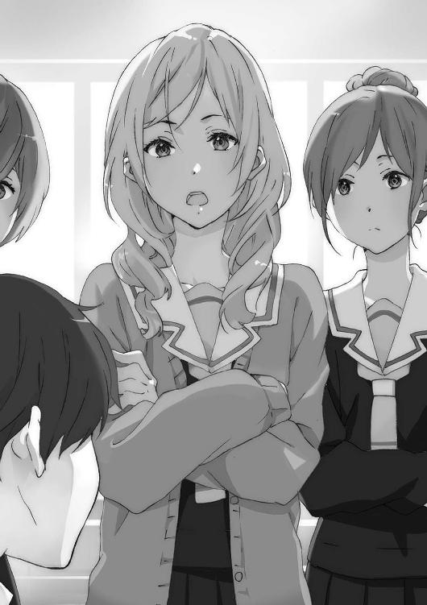
「『輪月症候群』に詳しいんでしょ？」
求められているのは柳沼かと思ったが当の柳沼は、
「......」
三人が来たタイミングでさっと前を向きそのまま沈黙していた。仕方なく俺が応じる。
「詳しいかどうかは自信ないけど、聞きたいことが？」
「そう」
柳沼と俺が『輪月症候群』の話をよくしているので話しかけてみた、という感じか。
「あの〈シンドローム〉に目覚めるのにさ、条件ってあるワケ？」
「条件......か。基本的に輪月高校に通う生徒なら可能性があるはずだけど」
「例えば輪月市で生まれてないとダメとかない？ てゆーかアタシがそうなんだけど」
「いいや。実際森本にも『輪月症候群』は見えてるだろ？」
「うん、だね」
「だったら他のみんなと同じだと考えていい......はずだ」
逆に輪月市出身で他校に行っている奴に知覚できないと柳沼から聞いたことがあった。
「へー、やっぱ詳しいね。もうちょっと聞いていいよね」
「ああ。つーか......」
森本って、生徒会が作った『輪月症候群』に関する注意事項の紙を配ったりしてなかったっけ？ という疑問が浮かんだが口には出さなかった。
しかし森本は勘がいいのか続く俺の言葉を察したらしい。
「生徒会はああ言ってるけど、詳しく知ったっていいでしょ？」
興味に従って動く。全く以て正しい行為だ。
結局こういう流れに乗る奴の方が主流派だ。
「わたしもっ、自分の願いが強く影響するって聞いたけどホントなの？」
森本が話をつけたと判断したのか、隣に立っていた女子も勢い込んで話しかけてきた。
「あ、ああ」
「なになに。横須賀君が『輪月症候群』への疑問に答えてくれるの？」
突如野上が笑顔で参戦してくる。
「へえー。そんなコーナーあんだ。俺も聞きたいんだけどー」
俺を中心にして多くの人間が集まってくる。
「横須賀君、あの」「横須賀さー」「聞けよ横須賀」
「無理無理もうなんかワケわかんなくなってるから!?」
言いながらも、悪い気はしなかった。
今日はあのあとも皆から質問攻めにあった。
正直いったいどうなるのだと不安になっていた『二度目の世界』でのやり直しの人生も、思いの外上手くやっていけそうである。
『一度目の世界』に戻らなきゃとか、『二度目の世界』だと知っているからには重大な使命を持っているとか、世界を巻き戻した犯人の二人を突き止めなければとか、色々考えはしたがどれもやる理由はないのかもしれない。
今を楽しく満喫できているなら、それでもいいんじゃないかと思えてしまう。
放課後、教室内は部活に行く人間と、そのまま帰宅する人間に分かれる。
「――横須賀君っ」
「は」
目の前にすらりと美しい彫像が立っていた。
「今日暇かしら？ だったら付き合って欲しいところがあるの」
黒のロングヘアをさらりと搔き上げる大河内葵。そして後ろには。
「......や、横須賀君が忙しいなら仕方ないと思うんだけど、っていうか忙しいよね？」
やたらとわたわた焦った様子の岩佐美帆がいた。
「なによ岩佐さん。まるで横須賀君に来て欲しくないみたいな。『横須賀君がいなきゃ行かない』って言ったのは岩佐さんでしょ？」
「え......ええと。......でもあれです横須賀君の都合も考慮しないとですし」
「だから本人に直接聞いてるんじゃない。今日、暇かしら？」
「えーと状況がよく把握できていないんだが......」
「ひ、暇じゃないよね？」「暇よね？」
どくん――まただ。
また体が反応をして心臓がおかしくなる。
なんだ、この二人のどちらかになにかがあるのか？
もしかすると本当に、俺はなにか思い出そうとしている？
それとも〈シンドローム〉に目覚め――。
ずきり。頭に鈍痛が走る。
この謎だけは、解いておく必要がある。
「......暇だ」
じわじわと、更に頭痛が酷くなっていた。
今日は来るべきではなかったか......。普通に体調不良かも......。
だがなにかが頭に引っかかっている感覚がある。
そのつっかえがとれれば、頭の痛みも治まる気がした。
「それでは今日は皆の親睦を深めるいい機会にしよう！ グラスは持ったかな？」
「なんでお前が仕切ってんだよ。......そんでなぜ隣の俺だけを見る」
柳沼は正面に座る二人ではなく隣の俺に話している。頭痛がするのに突っ込ませるな......と思っていたら、少しマシになってきた。
「じゃ、乾杯。ごく」
「早いな大河内!? 乾杯が終わってからじゃ」
「わたしも......。ちゅー」
「岩佐もか!?」
「横須賀。お前はそんなに乾杯したかったのか」
学校から徒歩移動可、国道沿いの個人経営ファミレス『ビーナス』のボックス席に妙な四人が収まっていた。
議題は『輪月症候群』についてだったので有識者として柳沼も呼んでみたら、二つ返事で了承し、この布陣ができあがった。
ファミレス『ビーナス』の店内は築二十五年は経つだろうという年季の入った雰囲気で、他の客は仕事の途中で立ち寄ったと思われるサラリーマンと井戸端会議中の主婦グループがいくつかだけだった。駅からは随分と離れていて、おまけに駅近に全国チェーンのファミレスがあるので、輪月高生の入り浸り率が極端に低い。
「よく知ってたなここ」
ここまでは大河内が率いてやってきた。
引っ越してきたばかりの人間がチョイスするにはマニアックである。
「一人で町を探検した時に見つけたの。駅前のだと、どこにでもあるしつまらないかと思って」
「「「......」」」
これが東京民の余裕か......。中学二年で初めてあの店が駅前にできた時どれだけのフィーバーが起こったことか......。
「今日集まって貰ったのは他でもないわ」
ドリンクバー用のグラスを置き、大河内は口を開く。
「皆に『輪月症候群』の話を聞きたいと思って」
「......岩佐だけでいいんじゃねえのか？」
「いえ横須賀君と、やっぱり柳沼君も。狙いの三人がきてくれてよかったわ」
「ま、『輪月症候群』のことを詳しく知りたいというのは見込みのある奴だな」
「だからお前は普通に前向いて喋れよ。俺に向かって喋るな」
「お、オレは普通だ！」
なにがしたいんだこの男は。というかずっと言おうと思っていたのだが......。
対面に座る女子二人には聞こえないように手で口を覆いながら耳打ちする。
「......お前女子が苦手なんだろ？」
「きききききききき気のせいだな」
「超動揺してんじゃねえか」
震えたコップからコーラが零れるぞ。
「なにがダメなんだよ」
「ダメという訳ではないんだが。どうも身内以外の女子は信頼ならんくて......」
「騙されたトラウマでもあんのか。絶対大丈夫だから喋れよ」
「そ、そうだな。彼奴等は『輪月症候群』に理解を示す素晴らしい逸材だからな。まだ信頼できるというものだ」
「嚙んだのかと思ったけどお前ガチ使ってんな。『彼奴』を」
「二人で喋ってないで私達も混ぜてくれる？」
「「は、はい！」」
「......言って横須賀も女子慣れはしてないだろ」
「そそそそそんなことねーよ！」
大河内が「私自身噂を全部ちゃんと知っている訳じゃないから」と言うので、まずは『輪月症候群』に関する情報を整理することになった。
最初は俺が中心になって、途中からは柳沼も入って二人で情報を並べていく。
「という訳で、今の一年生の中で起こった〈シンドローム〉で言うと【炎が出せる】【金縛りにできる】【透明になれる】......がある訳だ。ここから卒業までに何人の人間が〈シンドローム〉を使えるようになるかはわからん。これまでの傾向だとそれこそ三年かけて少しずつ増えていって、学年の五分の一程度が......というところらしいが」
話し出すと柳沼は饒舌だった。ただしテーブルに向かってではあるが。
「驚きよね......。だけどみんな受け入れてはいるわよね。それも意外なのだけれど......。輪月に住んで元から話にも馴染んでいたら、受け取り方が違うのかしら？」
「......オレには逆に、外からきた大河内の捉え方も興味深い」
「どう思っているか知りたいの？」
「別に知りたいって話ではなく興味深いと事実を述べただけで、高校からこの町に転入した例をあまり耳にしたことがなく」
「聞きたいなら聞けよ、面倒くせえな」
「教えましょうか？」
「お、おうなら......」
「やっぱり内緒」
「ぐぬぬぬぬぬぬぬ」
「おしぼり嚙むなよ汚いな」
「冗談よ。そうね、私が『輪月症候群』を知ったのは、輪月市に引っ越すと決まり、入学するのが輪月高校になって、その時先生から簡単に説明を受けたわ」
外から来た人間には説明があるのは初耳だった。
「感想はそうね......『なにを言っているのかな？』と」
「そうなるわな」と俺は感想を漏らす。
「が、学校変えようとは思わなかったの？」
岩佐が質問する。かなり久々に岩佐の声を聞いた気がする。
「話半分に聞いていたし。でも入学してみるとみんながその話をしていた。奇妙に思ったけどそれがここの風習なのかなって。ほら、輪月って民俗伝承残ってそうだし」
「俺達の地元は割と栄えているぞ。大都市以外の中では」
「そうこうしているうちに、田宮君の炎を見せられて。見たらもう、信じるしかないわよ。色々と周りの噂で聞こえていた通りだったから」
「......噂があって存在を知っている。更にその噂を越える訳ではない。と、意外に受け入れられ、か」
ぶつぶつ柳沼が一人で呟いている。
「私の感想はこれくらいにして、岩佐さんの話よ」
「は、え、あ......」
「改めての質問になるのだけれど、岩佐さんは学外でも透明になれるのよね？ 私まだ学校の中でしか〈シンドローム〉を見たことがないのだけれど」
「当然だ。やってやろう」
「お前が言うな柳沼」
「へ？ で、でも急に透明になると周りの人......には普通に見えているからいいのか」
岩佐はその場で【透明人間】になる〈シンドローム〉を使い、消えた。
一瞬にして座っていた四人が三人になった。だんだんと薄くなっていくこともない。ただ忽然と消えて見えなくなる。
「声って聞こえるのかしら」
「それはたぶん......」
「あ、聞こえた。店員さんには見えているのよね？ 呼んでみてくれる？」
「す、すいませーん！」
「はいただいまー！」
「今のは声に反応しただけじゃね？」
「あ」
「ごめんなさい、岩佐さん。実験するみたいに使って。興味深かったから......」
大河内が律儀に頭を下げると岩佐は「いいよいいよっ」と言いながら姿を現す。
「お待たせしま......」
「あの頼んでるポテトまだこない......」
呼んだからにはなにか言わなければと口を開いた俺は、そこで固まってしまった。
確かに学校近くだし、届け出ればバイトＯＫだし、いてもおかしくない。しかし......。
「あら、木崎さん？」
大河内が、こちらも少々驚いた声を上げる。
木崎まひる。俺達の同級生が、白と黒のメイド服チックなウエイトレス姿になっていた。ほっそりとした体型に制服はぴったりとマッチしており、緩くアップにされた明るく赤みがかった髪の色がアクセントになって映えている。
「バイトしてるんだ木崎......」
「ひ、人違いじゃないでしょうか」
「ネームプレート、フルネームで書いてるぞ」
告げると数秒硬直したあと、諦めたようにがくっと首を落とした。
「わ、悪い？」
口を尖らせ、木崎は顔を赤くする。ウエイトレス姿が似合っているので仕草がいちいち可愛く見える。くそ、木崎なんかに。
「まさかこんなところで会うなんて」
「こ、こんにちは」
大河内と岩佐が声をかける。
「三十分くらい前に教室で別れたはずなんだけどね......。いらっしゃい」
仕方ないと木崎は開き直ったようだった。
「店で輪月の一年と会うのは初めてなんだよねー。サービスした方がいいのかなぁ」
「サービスなんてとんでもない。たくさんお金を使っていくわ」
「......この店輪月高生少ないんだ」
なかなか教室でもない珍しい組み合わせだ。
他のクラスメイトがこの場面を目撃したら驚くんじゃなかろうか。
木崎まひる。
大河内葵。
岩佐美帆。
俺の視界の中に三人の女子が収まる。映り込む。
ずきんっっ――。
今までにないほどの痛みが頭に走った。
息が詰まり、俺は一点を凝視するしかできなくなる。
「けれど高校生になって早々アルバイトって偉いわね」
「普通だよ、フツー」
「......凄いと思う」
「うちあんまり裕福じゃないからさー。と、仕事しなきゃ仕事。店長優しいから許してくれると思うけど。あ、ポテトはもうしばらくお待ちください」
木崎はぺこりと一礼して厨房の方へと戻っていった。
「どうしたの、横須賀君？ 顔色が悪いけど」
そこで大河内が俺の様子に気づいた。ぷはっ、息が通った。
「いや」
反射で返事だけはできた。
「大丈夫だったらよいけれど......」
大河内が話を戻す。
「大きな可能性のある『輪月症候群』を私はもっと掘り下げたいの」
「凄い可能性......あるのかな？ 卒業したらなくなるし、輪月高校の人だけなのに」
「......今は限定された期間で限定された相手にだけかもしれない......。だがもしこの力が世界に広がったら？ 世界変革の場面にオレ達は立ち会える......かもしれない」
「世界変革......」
「柳沼君、格好いいこと言ってるんだからもっと堂々としていいと思うわ」
「か、か、か、格好いいだと......!? いや騙されないぞそんな甘言に......」
楽しそうな会話が繰り広げられている。
頭痛は波のように寄せたり引いたりしながら未だに続いている。
まともに思考できず、妙なイメージだけが形を作りまた消えていく。
世界に広がったら。世界変革。その言葉が妙に頭にこびりついた。
「面白いじゃない。世界変革......いえ世界革命を、私達でやれると最高ね」
「......世界を変える女か」
世界を変える。
「ありがとう、柳沼君。自己紹介の内容覚えててくれたのね」
「......それは大層すぎるような。あと大河内さん嬉しそう......」
「どれだけ大きかろうと未来と可能性を信じるのはよい話でしょ？ そして岩佐さん、今実際〈シンドローム〉という可能性を手にしているのはあなたなのよ！」
「【透明人間】が輪月高生以外にも使えるようになったら、食い逃げし放題......」
〈シンドローム〉。その未来と可能性。
「大変お待たせいたしました。ポテトをお持ちいたしました」
ウエイトレス木崎まひるがやってきて、フライドポテトとケチャップを机に置く。
「ていうか食い逃げってワードが聞こえたんだけど？」
「......」
「目を逸らしても柳沼だってわかってるから」
「お、オレじゃない食い逃げするのは岩佐さんだ」
「ちょ、ちょっと待って柳沼君が言い出したことじゃない!?」
「待ちなさい二人とも。食い逃げする前提になっているから」
「あー、わかってる。というか盛り上がってるね。この面子が意外なんだけど」
「これからの未来を共にする同志として、ね」
「未来って......もしかして『輪月症候群』？ ないでしょ、そんなの」
「あら、これほど新しい希望に満ちあふれているのに？」
「大河内さん。もっと現実見た方がいいよー。あたしも先輩に言われたし。『症候群に関わるより他のことした方がいい。将来の役にも立たない』って」
「私があまり先輩方と関わらないのもあるでしょうけど、確かに先輩方から『輪月症候群』の話ってそんなに聞かないのよね」
「......ふん、生徒会が二年・三年に箝口令を敷いているらしいからな。もちろん完全には徹底されていないが。奴らはオレ達を関わらせないようにして大きな秘密を隠そうとしている......」
大きな秘密――。
その時世界が暗転した。
同時に頭の中に激痛が走る。
強烈すぎて声も出ない。体を動かすこともできなければ、崩れ落ちることすらない。
静止する。
目の前が別世界になった。
場面はいつもと同じ夕暮れの校舎の屋上。
風景は鮮明で、まるでその場に本当にいるようだった。
寒いけれど暖かな風も流れ込む。冬を越え、春を迎える直前のような、そんな春の訪れる匂いがする季節だ。
――ねえ、君は死ぬみたいだけど。
声が聞こえてくる。
もっと接近すればよりはっきり声が聞こえ、姿だって見えるはずだ。
校舎の上にあるタンクが真正面に映る。
フェンスが見える。視点を切り替える。空は朱に染まっているところと青いままのところがある。校舎へ通じる扉。
「やり直したくないって思うくらい完璧だった？」
会話は続いている。
「いや」
そりゃそうだと俺も言ってやりたくなる。完璧なはずがない。
「高校卒業で人生が終わるってことは......幼稚園を出て、小学校を経て、中学校に行って、十数年間やってきた集大成が、これってことだよ」
まるで俺の人生に価値がなかったと断言するような口調だ。
認めたくない。認めたくないけど、事実だった。
女子の足が映っている。スカートが。胴体。流れる髪。顔が――。
ついに対面する。
あの女は。
世界を白紙にした女は。
世界の理に反した許されざる女は。
しかし最後の最後で、顔に白い光が当たっていて正体はわからない。
「納得している？」
「それでいいの？」
女に尋ねられている。
尋ねられている？
俺の立ち位置はいったいどこだ。
屋上の全体を見渡した。そしてあの女の姿を視界の中に捉えた。
だけど、女の話し相手が見当たらない。
俺はゆっくりと首を動かす。
下を向く。俺の手が、足が、胴体が下半身が映った。
「じゃあ、もう一度高校生活三年間を生きられるとしたら、どうする？」
彼女は真正面を向いて話している。
「でも運命が変えられる訳じゃないから勘違いしないで。歩みは変えられるけど、最後に辿り着くところは絶対に一緒。君は死ぬ」
俺に向かって話している。
「それでもやり直したいと思う？」
そう尋ねられたのは――、女から世界を白紙にするか決定権を与えられたのは――、そこでやり直したいと答えたのは――。
俺だった。
本当は、薄々勘づいてはいたのかもしれない。
何度も夢を見て、夢の中の男の感情に触れた。なぜそこまで男の詳細な思考や感情を知ることができたのか不思議だった。思考が俺と似ているのも変だった。
でもなんてことはない、俺のことなんだから。
夢の中で俺は、夢から覚めたくないと願った。
しかし残酷な現実は現れて、世界を元の色に照らす――。
大河内達の会話は続いている。
「――」
しかし今やその会話の内容は全く聞き取れなくなっていた。
雑音よろしく右から左へ流れていく。
夢に見るあの場面は確かに『一度目の世界』に存在した。
でも今それはなかったことになっている。
罪深くも過去を消し去り、やり直している人間がいるからだ。
確かにそれなら、俺だけがここを『二度目の世界』だと認識していることにも説明がついた。張本人なのだからそりゃそうだろうという話だ。
そこまで無様だったのか。俺の結末は、消えても惜しくないものだったのか。
そんな人生だったことを今更ながら恥じた。
「ていうか横須賀、顔色悪くない？ ウエイトレスとしての仕事した方がいい？」
そして――。
胃がぐるんと持ち上がってなにかがせり上がる。
急激な吐き気。それを感じた瞬間には立ち上がり、走り出した。
「よ、横須賀!?」
木崎あたりの驚く声が響いたが振り向く余裕はなかった。通路を走って曲がって、自動ドアまで一直線。
とっさに鞄を引っ摑んでいた。右肩にスクールバッグを提げている。
そして俺は、走った。
腹の中のぐるぐるが、今は頭に回ってぐるぐるしている。
時刻はまだ夕方。日は沈んでいない。
足を動かす。車が猛スピードを出して走る国道沿いを爆走する。
準備運動もしなかった体に急激なダッシュはきつい。すぐ足に乳酸が溜まる。その体に鞭を打つ。無茶苦茶に、無理矢理に。
自分の体を無茶苦茶にして感覚をなくしたかった。
俺は車にも負けない速度で走りたかった。でもそんなのは当然不可能で、実際にはびゅんびゅんと走る車に抜かれていった。
ガードレールで守られた歩道を走る俺なんて気にも留めず車は走り去っていく。
俺は次々と置き去りにされていく。
喉がからからになって唾もなくなる。もう息ができない。限界だ。
俺は人間だから、限界があるから、車とは違うから、速度はいずれ落ちていく。
俺はこの道を最後まで行くことができない。
足が動かなくなって、ばたりとその場に倒れて動かなくなるんだ。
そして。
俺はあの夢の始まりに聞こえてくる言葉を、直視する。
――ねえ、君は死ぬみたいだけど。
――でも運命が変えられる訳じゃないから勘違いしないで。歩みは変えられるけど、最後に辿り着くところは絶対に一緒。君は死ぬ。
ただ傍から見ている目撃者のはずだった。可哀想ではあるが悲惨な運命は他人事のはずだった。
でも本当は、俺が当事者だったのだ。
俺は三年後に、死ぬのだ。
逃れることはできない。
やがて本当に足が限界に達し、酸素を欲する肺がおかしな動きをするようになり、潤いを求める喉がひりついてゴホゴホと咳が出て、俺はついに立ち止まった。
膝に手をつくと、肩からスクールバッグが地面に落ちる。どうしようもなく俺には。
将来がない。
未来がない。
希望がない。
人生をやり直して三年前に戻れてラッキー。ふざけんな。
それは俺が、余命三年ってことじゃねえか。
あの時期は、あの場所は、正確にはわからないけれど卒業する直前のどこかだ。
高校生活が終われば、いや終わる前には俺の人生が、おそらく終わっている。
そのまましばらく放浪した。
ずっと真っ直ぐ歩いていくのも先の見えない闇に飲み込まれそうで怖くて、適当なところで何度か曲がった。随分とぐるぐるしたから、一周回って逆行していそうだったが、それで構わなかった。
自分の現在地を知りたくない。
どこでもないどこかに存在していたかった。
すっかり日は落ちていた。時刻は二十二時に近づいている。
心の疲れが大きいため、体の疲れがどうなっているのかよくわからない。
流石に腹は減ってきた。肌寒くも感じ、ひもじさが一層込み上げてきた。
コンビニに立ち寄り、おにぎりを購入する。
ペットボトルのお茶と共に、駐車場の車止めに座って食べる。
米うめぇ、と純粋に感じて泣けた。
ほとんど無意識の動作で、スマートフォンを確認する。メールが数件。
From：母
From：母
From：姉
母『今日遅くなるの？ 友達と一緒？ ご飯いるか連絡頂戴ね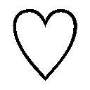』
母『......結構遅いね。今どうしてるの？ なんでもいいから連絡欲しいな（泣）』
姉『母さんが心配してるじゃん。生きてる？』
俺はスマートフォンを鞄に放り込んだ。
車止めから立ち上がって、また歩き出す。
歩道に出て、右か左かの分かれ道。一瞬迷って、なんの意味もなく左へ曲がる。
湿って冷たい風を感じた。引き寄せられるように、そちらに足が動いた。
住宅街を抜けると、幅広の川が見えてきた。
月三川。この川にぶち当たったということは、家からはさほど遠くない場所にいる。
適当に歩いていたつもりが、いつの間にか帰巣本能を発揮させていたのだろうか。
俺達高校生は、自由だ夢だ未来だ青春だ爆発だなんて言っておきながら、結局どこへいくこともできない。
家があって、それが杭になっていて、首につけられた鎖は伸びてはくれるのだけれど外れはしない。ぐいっと引っ張られてそのうち戻ってしまう。
道路を歩くことにも飽きたので堤防を降りて、よほどの増水がないと水没しない河川敷に足を踏み入れた。行けるところまでは川の側を行こう。
暗い川には月と、建物からの灯りが反射している。揺れる水面にものの形は綺麗に映らない。だがそれでも、たまに風と川の流れのいたずらか、はたまた目の錯覚か、まるで水の中にもう一つの世界があるかのようにものが浮かび上がる。その時は俺の顔がはっきりと水の中に現れた。
もう一つの世界で俺が顔を歪める。
俺は死ぬとして、果たしてどんな死に方をするのだろう。
高校生が普通に生きていて死ぬ確率はさほど高くない。でも死ぬ時は死ぬ。
交通事故か。心臓病か。転落死か。溺死か。圧死か。未知の病か。
なんとか防ぐことはできないか。
不慮の事故に遭わないようになるべく普段から注意しよう。
病気にならないよう普段からよく食べよく寝て健康的な生活を送ろう。病院に行って、病気の兆候がないかも診察して貰おう。
でも、あの女は、大きな運命だけは覆らないと言っていた。それはそうなんだろうという気がしている。
もちろん信じたくはない。でも信じたくないのに、俺は思い出してしまっていた。
俺はあの時、確かに自分がもう死ぬ存在だと、理解していた。
夢の中の誰だかわからない彼女。
奴こそが世界を巻き戻した張本人。この世界の真実を知る女。
起死回生に賭けるとしたら唯一、この女だけが鍵だ。
見つけるしかない。本気で捜して、なんとか助かる方法を考える。
じゃないと、死ぬんだ。
待ってくれよ。死の存在を感じながら、まともに生きていけだって？
考えるな。
『二度目の世界』で俺が生きていても仕方がないとか。
いっそのこと死んでしまった方が楽かもしれない、とか。
ダメだダメだ。考えるな。恐怖を感じて、毎日死にたくない死にたくないと唱えながら生きるなんて生きるなんて生きるなんて生きるなんて。もう、もう、もう。
「あああああああああ！」
ぐるぐるに渦巻いた感情を吐き出す。
そして、そうなれば楽になれるという最適解を見つける。
その存在は確かなものであると感触を確認し、心に安らぎを与える。
闇夜の下の川面みたいに暗い安らぎが、唯一俺を慰めてくれる。
この世に俺より絶望的状況の人間がいるのか？
「死にてええええええ！」
「......たいっ！」
急に、真上から無粋な声が割り込んできた。
腹が立った。
「うるせえ！ 邪魔すんじゃねえよ！」
俺は橋の上に向かって叫んでやった。
真上にいたのは、長く滑らかな髪の持ち主だった。
夜空の月が透き通る肌を白く照らす。美貌はきっと輝く月よりも美しい。
「......え、横須賀君......？」
小鳥のさえずりのような声が空から降ってきた。
心臓が縮こまる。俺は慌てて橋の下に逃げ込む。
大河内、だと？ なんで大河内がここにいるんだ？
意味がわからない。......や、そりゃ地元なんだからいる可能性はあるが。
妙なところを見られた。そもそもファミレスで別れてからなんの弁明もなく顔を突き合わせてしまった。
なんと説明すればいいか全くわからないが、このままではマズい。俺は堤防の石段を上って、橋の上へ。
だが俺が橋に上がった時には、既に大河内の姿はなかった。
大河内に俺が叫んでいるところを見られた。同時に、大河内もなにか言っていた。
はっきりと聞き取れた訳ではない。言葉の前後を無理に補ってしまっただけの、空耳のような気もする。
でも大河内はこう言っていたように、俺には思えてならない。
――死にたいっ。
と。
×××
消えた大河内を追いかける術もなく、俺はすごすごと自宅に戻った。
二十三時頃家に帰ると、母に玄関で迎えられ食卓に連れて行かれた。父も姉も勢揃いだ。俺を待っていたとすれば過保護すぎるぞ。
母が涙目で話し出す。
「浩人。わたしは浩人が夜な夜な遊びに出ても、女の子にうつつを抜かしても、補導されない時間に帰るんなら構わない......。でもお願いだから、事前に連絡だけはしてっ」
「はあ......これからは事前連絡します」
「母さんの言った通り、あんたも子供じゃないんだからさ。無駄に親を心配させない」
「......姉貴も昔は」
「昔は昔、今は今。素行不良は内申諸々影響するよ。最近は大学でも推薦多いし」
「はぁ」
「浩人、お前には将来があるんだ」
椅子に座りこちらは向かず、父が口を開く。
「なにを目指してもいいが、将来に向けて今から動き出すことが重要だ」
口角がぴくりと反応してわずかに持ち上がる。
「だから目の前のことばかりに囚われるな。行動する時は先まで考えろ」
ぴくぴくと口角が動く。今にも笑いそうになる。笑い転げそうになる。
「もうお父さんったら浩人が高校生になりたてだからって張り切りすぎよ。そんな話今されたって......ねえ、浩人」
「お前は甘やかしすぎだ」
「ちょ、トイレ」
我慢できずに俺は席を立った。「話終わってないわよー」と言う母の声も無視だ。
トイレに入り、鍵を締めた瞬間噴き出す。
両手を口に当て、必死に笑い声が漏れないようにしながら、笑う。笑う。笑う。嗤う。
将来かあ、将来。
母も、姉も、父も。子供の幸せを考えると大正解なんだろう。
小中高大学は学びの時間だ。社会の恩恵を受け、社会に見守られながら大人になる。与えられるばかりでも構わない。社会に出た時、立派な大人として社会を支え、次の子供を見守る立場になるんだから。
そんな将来がやってくる。
そんな将来のために今頑張る。
でも俺には、あと三年しかないとしたら？
笑えるくらいに、無意味だ。無価値だ。
そんなの絶対に、認められない。
絶対に絶対に認められない。
このまま死ねるか。
死にたく、ない。
昨日あんなことがあっても、俺は普通に学校に登校する。
なぜなら俺は高校生で、高校生は平日学校に行く決まりだからだ。
俺は自転車に乗り込む。
その瞬間目が回って吐き気が押し寄せた。げっ、と地面に唾液と胃液が混じったものを吐く。胃の中は昨夜の時点で空っぽだった。
体が干からびたみたいで、睡眠不足のせいか視界がたまにぴかぴか明滅する。
ぐらりと揺れて自転車が蛇行する。
でもこんな状態でも、学校には行かなきゃ。
じゃないと二度と俺は立ち上がれなくなる気がした。
なにより学校に行けば出会えるかもしれない。
一度捜したが見つからずに断念した、夢の中の男と女。その中の男は俺とわかった。
じゃあ女は？
そいつが俺に選択権を与え、世界を三年巻き戻した実行犯だ。
その女を見つけられたら、自分が助かる方法だって、三年間の巻き戻しをやめる方法だって、判明するかもしれない。
頭を振って目の前に視点を合わせる。自転車を漕ぎ続ける。
「......横須賀君っ！」
この自転車で進んでいる限りまだ死なない。生き続けられる。
「よ......横須賀く～ん？」
俺の人生は、終わりじゃないんだ。
「そぉい！」
「うわっ！ ......お前急に自転車の前に出てくんなよ危ねえだろっ！」
自転車同士でぶつかるところだった。
「だ、だいぶ前から声かけてたんだけど」
言いながら岩佐美帆は俺に自転車を並べる。
「あの......昨日大丈夫だった？ 急に走って帰っちゃったけど」
「ハァ？」とキレ気味に返す。
「え、あ......ごめん。ん、なんで謝らされてんの？」
「知るか。お前が勝手に謝ったんだろ」
「......わたしは横須賀君を心配しているのに」
剣吞な雰囲気になったところで幾分冷静になれた。確かに昨日の行動は意味不明だ。
俺は昨日急に気分が悪くなってしまった、薬を飲めばすぐ治まるのだが昨日は切らしていたので慌てて取りに帰った、という口から出任せを喋った。
「重い病気なの......？」
「心配すんな。しな......」
死なないから、と言おうとして、余りにも皮肉が利いていると口をつぐんだ。
「ちなみに病気の話、横須賀君のお母さんにしてみてもいい？」
「......そいつは必要ないんじゃねえか？」
俺の反応を見て、岩佐はくすくすと笑った。
「だよねぇ。安心してて、言わないから」
楽しそうに笑っている。
【透明人間】に目覚め、皆にちやほやされてまんざらでもなさそうで、おかげでこれからの高校生活も随分楽しくなりそうじゃないか。
ずっと一緒だった訳ではない。
でもどこか似た道を歩んできた俺と岩佐の運命は、今や大きく分かれてしまった。
「問題は他のみんなが納得してくれるかだねぇ。頑張れ、横須賀君！」
――がんばれ、ひろとくん！
不意に、俺は遙か昔に岩佐が同じセリフを言ったことを思い出す。確かあの時は。
――その夢おうえんするよ！
――わたしはいつか......になりたいんだっ！
俺達はたぶんその当時の夢を語り合っていた。
今やどう言ったかも思い出せないその夢を、岩佐は叶える瞬間がくるかもしれない。
でも、俺の夢は。
明るく俺をおいて行こうとする岩佐に、無性に腹が立った。
「――そういう訳で、急に席立ってすまんかった」
朝の教室で、俺は木崎まひるに頭を下げる。
面倒になりそうな奴だけでも対処する必要があった。
言い訳は岩佐にしたのと同じものだ。
「ふうん。大丈夫？」
なにを聞かれるかと身構えていたら、返答は淡泊なものだった。
「......ああ、別に」
「あとお金立て替えといたから、このレシートの金額の四分の一よろしくー」
「お、おう」
あっさりと木崎とのやり取りは終わった。
「まひるー。昨日言ってたＣＤだけどさー」
「あ、あれねー。ありがとー」
木崎が周囲と親しげに話し始める。
俺がどうなろうと、普通に生きる方が大事か。
このまま見続けていると睨んでいると勘違いされそうだ。視線を動かす。
岩佐のところに他の女子が近づいていた。
「岩佐さん、【透明人間】になってなんかやった？」「色々できるでしょ～」
クラスの少し派手めな女子達が岩佐を囲んでいる。
自分達にとって面白い発言を引き出そうと、彼女達はまるで岩佐を神社にあるおみくじの木筒みたいに使う。ガラガラ、ガラガラ、面白いものが出てこないかな。
「なにも......やってないよ。【透明人間】になれても別に......」
「えー、噓だー」「絶対なんかあるよ～」
攻勢がキツい気がする。〈シンドローム〉が知覚できるようになってしばらく経ち、そろそろ単純な『輪月症候群』の話だけではネタ切れになってきたからだろうか。
でも彼女達が岩佐に求めても。
「これが本当になくてさ」
笑顔で取り繕って岩佐は言った。
岩佐が誰に対してでもノリよく回答なんて難しい。せっかくのチャンスを得ても、だ。
俺も人のことを言えはしないが。
「えー、でもー」
「本当に全然で」
「あ、そう」
否定が続くと集まってきた女子は一様に冷めたらしく、ひそひそ話しながら移動していった。
近くで別の男子達が喋っている。
「はぁっ！」
「......なんだよ？」
「俺、実は〈シンドローム〉使えるんだけど、今お前に世界史の課題を俺の分もやりたくなるってサイコキネシスかけたから、よろしくな」
「よろしくしねーよ」
「ちぇ、乗れよ。しかし自分が〈シンドローム〉使えないと『輪月症候群』があってもあんまやれることないよな。うーん、誰か面白いことやってくれねえかなぁ」
『輪月症候群』のある学校生活がもう当たり前になりつつある。
教師や上級生が普通に扱っているものだからか、今までの常識を覆すものでも恐れたり不安になったりしている者は少ない。
そしてそれに対しても、他の娯楽と同様に目先の楽しさを求めている。吞気なもんだ。
他の奴らはまだ『輪月症候群』に夢中なのかもしれない。
だが昨日までとは全く人生が変わってしまった俺には、周囲の喧噪もどこか遠くの出来事のようだ。
今日は母親が『昨日心配しすぎて今日作れなかったの』と弁当がなかった。
食べる気がしないのでちょうどいい。
「......い、行ってしまうのか？」
弁当持ちの柳沼が捨てられた子犬のような目をしている。
「全然可愛くねえよ」
言い捨てて俺は昼休みの教室から出ていく。昨日の件についてなにも言及してこないありがたい奴だが、俺は暇ではないのだ。
もう一度あの女を捜すのだ。
俺は食堂に向かう生徒達に逆行して屋上に向かった。
タンク、高いフェンス、そこから見える景色。
一年生の教室がある校舎の屋上があの夢の場所であった。
屋上は開放されていて、ここで昼食をとっている人間も複数いる。
どういう経緯で俺と女が屋上に辿り着いたのかはわからない。しかし手がかりが少ない中、張り込む価値はあるだろう。
女の顔はまだはっきりと思い出せてはいないが、他のパーツの記憶は若干ある。
足は細く、スタイルはよさそうだ。また髪の毛の長さもある程度あった。少なくともショートカットではない。
それでも対象となる人間は相当数になるが、絞り込みにはなった。
しかし目ぼしい人間が簡単に現れはしなかった。痺れを切らして校舎内を捜しに行く。
あれは高校生活の最後、三年の出来事だ。だとすれば女は一年であるとは思うが......。
「あ」
途中の廊下でばったりと、神に祝福されたような女子に会う。
誰もが羨む、化粧なし素のままでファンタジー映画の主役を張れそうな美しさ。
「こんにちは、横須賀君」
百点満点の花開くような笑顔だ。
この女も十分に条件を満たしてはいる。
「......おう」
今日初めて、俺は大河内葵と口を利いている。
「昨日大変そうだったけど大丈夫だったかしら？ ファミレスで」
「ああ、ええと、体調が急に悪くなって」
「もう大丈夫なの？」
「おう」
「ならよかった」
大河内は本気で心配してくれていたみたいに大きく息を吐く。
しかし俺は違和感を覚えた。
だったらなぜ、今日学校に来てすぐ尋ねに来ないのだ？
他人を寄せ付けないような笑顔が、大河内に張り付いている。
俺の中にあった大河内の完璧な少女像が、ぐらつく。
普通ならば踏み込まない。だけど俺が今更、なにを気にする必要があるのだ。
「でもあのあと夜、会ったよな？ 二十二時くらいか？」
大河内はしばらく沈黙し、そのあと口を開く。
「......なんのことかしら？」
「間が空きすぎだ。おかしいだろ」
大河内は微笑むだけだ。
「心当たりがあるだろ」
「しつこく、ないかしら」
笑ってはいるが怒りの成分も少々感じられる。
「大河内が噓をつくからだろ」
「踏み込むのはやめましょう。その方がいいでしょお互いに。とにかく横須賀君が元気そうでよかった」
触れられたくない話題に言及される危険があるとわかっていながら、それでも大河内は俺を心配してくれた。
そんな奴に、恩を仇で返すような真似を俺はしている。
「橋の上から妙なこと言ってたよな」
「妙なこと？」
「俺にはちゃんと聞こえてたんだぜ」
おそらく、死にたい、という言葉が。
「よくわからないけれど、あなたもおかしなことを言っていそうよね」
大河内にも俺の言葉は届いていたんだろう。
俺達二人は、理由はそれぞれあるだろうが夜の街で「死にたい」と叫んだ。
あれは二人が本当に望んで、口にしたことだったのだろうか。
大河内から笑顔は消え、今や俺を睨んでいた。
「......ああ、でも、そんな気がしただけかも」
俺が言うと、今度はキョトンとした顔になった。
「うん、俺の勘違いだな二十二時に会ったとか」
「そうよ、その通りよ」
俺の茶番に乗っかって、大河内は頷く。
あんな夜の川で、あんな最悪なセリフを吐かなければならない状態になっても、俺達はそれを隠し合う。
そうやって特にお互いにメリットが見えないものは流してしまう。
流してしまえば、なかったことと同じになる。
そちらの方が互いにずぶずぶ踏み込み合うこともなく楽だ。
俺達は薄い関係性で繫がりながら孤独に生きていく。
そして俺は、唯一の手がかりであるあの女の姿を求める。
放課後もずっと学校に残ったが、手がかりは一つも見つけられなかった。
×××
翌日のことである。
輪月高校付近でぼや騒ぎがあった。
学校から数十メートル先のガレージで早朝に火が出、消防車も駆けつける騒動になったらしい。幸い火は燃え広がる前にすぐ消火されたようだ。
学校近くで火事寸前というのはセンセーショナルだったらしく、今日はその話題が輪月高校の生徒達の間を幾度となく飛び交っていた。
化学の時間はまた移動教室だった。
理科室に着いた俺は柳沼と隣同士に座る。
他の男子二人の話し声が耳に入った。
「そういや聞いたか、今日のぼやの噂」
「偶然にしては出来すぎな話か？」
「なんだよ、知ってんのかよ。つまんねー」
「いや割ともう知ってる奴多いと思うぜ」
「はぁ、そうかよ。俺は一応『これ言い過ぎない方がいいんじゃね？』とか考えてるんだぜ。だってあの時間のあの現場に田宮がいたって」
田宮という名前が出た瞬間、興味なさそうに教科書をぺらぺらめくっていた柳沼がぴんと背筋を伸ばした。そこで俺も田宮が聞き覚えのある名前だと気づく......あれだ、一年で最初に〈シンドローム〉に目覚めた【炎使い】だ――。
ぼや。田宮。【炎使い】。
「田宮の〈シンドローム〉の炎が全てを焼き尽くした......」
「いや〈シンドローム〉の炎じゃなにも燃やせないんだろ？」
「わかっているけどさ、幻だって」
「つっても【炎使い】になるくらいの奴だから、元から『火』に関心が......」
「だとすると怖いよなー。〈シンドローム〉に目覚めた奴大丈夫なのかよって思うわ」
本気で疑ってはいないだろう。ただネットに流れる怪しいゴシップを話すのと同じだ。
ほとんど話半分。けれどその半分が実際に誰かと誰かに語られているのも事実だった。
しかし大した根拠もなく、よくも勝手なことを言うものだ。
「おい横須賀......っ」
「なんだ柳ぬ......」
まだ出会って一カ月も経っていないので柳沼のことはよくわからない。全ての表情を見たこともない。
だけど明らかに、今の柳沼は怒っていた。
「......田宮は悪者にされようとしているのか？」
「冗談っぽく言ってたし。勝手に話してるだけだろ」
「田宮が悪者になろうがどうでもいいんだが」
「割と酷いなお前」
「しかし〈シンドローム〉が悪者にされるのは納得がいかん......！」
それだけのことで〈シンドローム〉がもし悪者になるなら短絡的で馬鹿げた発想だ。
「だから横須賀っ！ 一緒に田宮健太に会いに行くぞっ」
「嫌だよ」
「よし、じゃあいつにするか決め......え？ 嫌？」
他人に構っていられるほど暇じゃない。
「田宮が火をつけた......は流石にないだろうけど」
「でも自分の〈シンドローム〉をみんなに見せつける目立ちたがりだぞ」
「じゃあ放火犯だって？」
「いやいやそこまでは言ってないけど......」
ぼや騒動の際近くで田宮が目撃された噂は、思いの外広まっているらしい。
体育の授業開始を待つ今だって、何人かの奴らが話している。輪月高校では二クラス合同で体育が行われ、噂話をしている奴はＢ組の奴だった。
「なぜ......〈シンドローム〉使いが......疑われることになるんだ......！」
「目立ってるってことは悪目立ちにも繫がるからな」
俺の隣で呻く柳沼に言ってやる。
「ぬぬぬ......昨日話してみたが田宮はいい奴だったぞ。しかし誰も直接『犯人か？』なんて聞いてこないから反論もできず弱っているようだ」
「誰も証拠があって本気で疑ってる訳じゃないだろうからな」
「じゃあなんでだ!?」
「〈シンドローム〉使いが少数派っていうのもあるんじゃねーか」
人間っていうのはそういうもんだ。多数派がこの世界のルールを作るから、少数派になるとあっという間に世界そのものからも排除されてしまうことがある。
そう、クラスの主力グループに上手く交われない奴は、端に追いやられるように。
「......というか横須賀、元気なくないか？ こ、この前もファミレスで急に帰るし」
柳沼にはまだなんの言い訳もしていない。別に柳沼はなんとでもなると思っていた。
そんな薄情な俺を柳沼は心配してくれている。だけど。
「別になんでもねえよ」
「そ、そうか......」
俺が突き放すと、柳沼はしょんぼりと肩を落とした。
「〈シンドローム〉使いなんて卑怯者だろ絶対っ！」
突然俺の耳に叫び声が飛び込んできた。
「ぜってーそうに決まってるよっ！」
荒れて文句を言っているのは、隣のＢ組の男子のようだ。
「おい落ち着けよ高田」
周囲が止めに入るが、高田と呼ばれた背の高い男子は収まる気配がない。
「俺は教えてやってるんだよみんなに。〈シンドローム〉が使える奴の危険性をっ」
また〈シンドローム〉でなにかあったか。
「なんとか言ってみろよ大友っ！」
高田が責め立てたいのは大友という男子らしい。こいつも隣のＢ組だ。
「なにでかい声出してんだよ高田？」
大友裕也はへらへらとバカにしたような態度で高田に応じる。お洒落な無造作なのかただボサボサなのか俺には判断できかねる髪に、血色のよくない顔。猫背の姿勢が近寄りがたい雰囲気を醸し出している。
そしてこいつは......。
「俺は昨日、絶対にお前に負けていないからなっ」
「いや負けただろ」
「それはお前が卑怯な手を使ったからだ！」
「おいやめろ」
大友に詰め寄ろうとした高田を第三者が押し止める。
「こいつ昨日の大事な勝負の時......途中で〈シンドローム〉を使いやがった......！」
「聞いたって。陸上部の査定二百メートル走で、大友との勝負中に転んだんだろ」
「転ばされたんだ！ 間違えるな！ 走っている途中......俺が大友より先行した時だ、急に体が硬直して、でも走っていた勢いはあるからそのまま......」
「お前の友達も『転んだ』って言ってんだろ？ 自分のヘマを人のせいにすんなよ」
「それはお前が〈シンドローム〉を使ったからだろ！」
大友裕也。〈シンドローム〉は【金縛り】。
『狙った単独の相手の動きを十秒ほど封じる』のが、【金縛り】でできることだ。という話を俺は柳沼から聞いていた。
「あー、はいはい。確かに俺は人を【金縛り】にできるよ。お前と違って」
「なんだその言い方......！ そんな力使えることのどこが偉いんだ!?」
「おい高田！」「むかつくのはわかるけどっ！」
今度こそ殴りかかる勢いで突っ込みかけた高田を必死に周りが押さえた。
「おいなにをやっているっ！」
もう授業時間になっていたようで、男子の授業を担当する高橋俊吾が一喝した。
高橋は騒動の中心にいる高田と大友を見る。
「......また『あの病気』関連か？」
『あの病気』と表現する高橋からは蔑みの感情が読み取れた。
大友は下を向いて黙っている。高田は前を向き一旦口を開きかけたが、チクるような真似は恥ずかしいと考えたのかなにも言わなかった。
「言っておくぞ。『あの病気』に関わってもろくなことにならない」
ここまではっきりとした表現が、教師から俺達の前でされたのは初めてだった。
「私は何人も卒業生を見送ってきたんだ。その経験から言って間違いない」
ずしりと重みを持った言葉が放り投げられる。
「自分達だけにしか見えない『雷を出せ』たとしよう。それでどうなる？ 自分達だけには見えるというルールを敷いてごっこ遊びする小学生となにが違うんだ」
完全否定に、全員が静まり返って俯く。
「もう高校生なんだ。部活でも他の課外活動でもいい。意味のあることをしろ」
冷や水をぶっかけられる。大人目線の、俺達の想いを全く考えない意見だ。
しかし、皆からすっと熱が抜けていくような嫌な感覚があった。
話していること自体は至極真っ当だったからか。
「授業を始める。さっさと並べ」
高橋の指示に、生徒達はすごすごと重い足取りで列を作った。
体育の授業が終わって、休み時間があって、また他の授業があって、昼休みがあって。
だけどその日一日、Ａ組の空気は重いままだった。
「つーか明日土曜かー」
「予定あるの？」
蓮田と野上が席に座って話している。
「うーん、もしかしたら中学の時の奴らと会うかもってくらい」
「僕も同じ感じだよ」
「横須賀は？」と蓮田が聞いてくる。
「俺も似た感じ......」
正直全く似た感じではなかったのだが適当に答えておく。
「せっかく休みなのにあんまテンション上がんねえな......。ていうか中学の時とやってること変わってねえのが問題なんだ！」
「それはあるかもね。高校になって劇的に変わることなんてそんなにねぇ」
劇的に変わっているものは、あると思うのだが。
『輪月症候群』、そして〈シンドローム〉の存在。
今の二人は『輪月症候群』のことを口に出さない。
いや二人のみならず、聞き耳を立てても、これまで色んなところから聞こえていた『輪月症候群』に関する話題が耳に入らない。
誰かが『輪月症候群』に関することを口にしないから、他の人間も話し出さない。連鎖が続いて、誰もが話し出しづらい雰囲気になっている。
ぼや、陸上部での【金縛り】騒動、高橋の発言。もしかしたら他にも『輪月症候群』に関するゴタゴタはあったのかもしれない。
だが、だとしてもそんなに簡単に左右されるものなんだろうか。
学校の雰囲気は繊細で敏感だ。昨日まではよくても、翌日になったら急に態度が変わっていることなんてざらだ。みんなそれはよくわかっているから、今は不安定な『輪月症候群』に対する動向を窺っているということだろう。
世界が随分、薄っぺらいものに見えた。
×××
――普段は意識しすぎないようにしている。
平日は毎日学校に行って、家に帰るとこれからに備え役に立ちそうなことを主にネットで調べ、息抜きにゲームをしてテレビを観て、そうやっているうちに意外に時間は過ぎていった。
頑張れば家に帰って風呂に入って飯を食って寝れば、明日になる。
明日になれば学校が待っているからまた時間を潰せる。高校生は忙しいのだ。
だとしても。
土日休みは長すぎる。
誰とも会わず予定もなく家にいると、時間ができて思わず、考えてしまう。
「浩人。休みにどこか行かないの？ 友達と泊りに行ったりだとかさ。母さん不安だけど浩人がどうしてもって言うなら......許しちゃう！」
昼食を終え、二階に上がろうとした俺を呼び止めた母親は無駄にテンションが高い。
「別にどこも行かねえよ」
「えー......天気もいいのに。じめじめ湿っちゃわない？ あ、そう言えば部活はどうするの？ まだ決めてなかったみたいだけどそろそろさ」
「どこにも入るつもりねえけど」
「......それは母さん、心配になるわ。もちろん浩人の自由だけども、部活に入らないのはとってももったいないことだと思うし」
これは長引きそうだ。
はいはい、と適当に返事をして俺は自分の部屋に入った。
机があって、ベッドがあって、本棚があって、パソコンがあって、小さなテレビもあって、あとは雑然とものが並べてある。なんの面白みもない部屋だ。
今日みたいに天気のよい日の昼間は、細く窓を開けて外の風を入れるくらいでちょうどいい時期になった。俺は太陽の日が当たって暖められているベッドの上に転がる。それだとむしろ暑いくらいだ。居心地がいいとは言えず、はっきり言ってしまえば悪い。
でも今の俺にはそれがよかった。
体を不快にし、誤魔化せないまでも心の不快感と一緒くたにして、心と体をぐちゃぐちゃにする。なにがどうなっているのかよくわからない。でも苦しいということだけがわかる。そんな状態にしておきたかった。
冷静な気持ちでまともに『それ』を捉えたら、おかしくなる。
俺はベッドと壁の隙間に手を突っ込む。まるでただ落としてしまっただけのような格好でカレンダーが隠されている。
探せばあるものだ、三年分の卓上カレンダーだって。
俺は昨日の日付に、×印をつける。
学校が終わる頃、三年の三月の半ば頃を最後のＸデーとしよう。
だとすると、その日まで約千五十日。
なんだまだあと千日もあるんだ。
だけど明日になれば、あと千四十九日になる。
震える手で、俺は三年分の卓上カレンダーを握りしめる。ページをめくれば、それは来月になる。更にずっとめくっていけば来年になり、そして再来年にも辿り着く。だけど俺はめくらない。めくっていないから、三年分と謳われながら、これが本当に三年分あるカレンダーなのかわかっていない。まだ曖昧模糊なままにおいておく。そうすれば、その日が本当にくるのかどうかほんの少しだけ疑わしくなる。
三年は短い。その間にできることも限られている。
夏のオリンピックを見られるのはあと一回だ。
俺はなにをどうやってもオリンピックを目指せない。
なにをなすこともできない。
結婚もできないだろう。
子供も残らない。
ただ生きて死んでいく。
握りしめた手が汗ばみ卓上カレンダーを湿らせる。俺はそれをまた、ベッドと壁の隙間にねじ込む。不思議の空間へ。つけた×印が減っていくことを願いながら。
俺は世界を恨む。
俺をこんな状況に追い込んだ世界を。
恨む。恨む。恨む。恨む。恨む。恨む。恨む。恨む。恨む。恨む。恨む。恨む。
ベッドの上から天井を睨む。
白い天井は動かない。固く、重々しく俺の頭上にあってなんの情もなく俺を見つめている。棺桶ももしかすると同じようなものか？
ああ、死にたくない。死にたくない。死にたくない。
土日は、無為な休日は長すぎる。
×××
四月が終わり五月へと突入する。
多くの一年生もまだ慣れないところがあるとはいえ、そろそろリズムができて高校生活が落ち着き始めた、そんな頃合いだ。
そんな中、クラス内の『輪月症候群』への態度が変わり始めていた。
『輪月症候群』を否定するような話が多く聞こえるようになったのだ。
「......〈シンドローム〉は学外の人間に効果ないんだよな」
「つーか大学生になると使えなくなるし、見えなくなるし」
「先輩達も使える人多いはずだよなぁ。なのにあんまり使ってない」
「そっちの方がいいって結論に落ち着いたからでしょ」
「でもそれは先輩達が決めたことだよねぇ」
「つーかそんないい悪いにこだわる必要ある？」
二週間前までは『輪月症候群』『輪月症候群』と全員が盛り上がっていたはずなのに。
確かに〈シンドローム〉の存在意義を疑う声は前からない訳ではなかった。心のどこかで思っている奴も多かったのだろう。
でも皆が〈シンドローム〉を持ち上げる中、その声が支配的になることはなかった。
だけどそれが今は逆転している。
天秤が一方に傾くと、皆一斉にそちらに流れ出す。
「どう思う？ 野上？」
隣席の蓮田が野上と話している。
「どうって言われてもね......。面白そうだっていうのもあるし、でも〈シンドローム〉の話ばかりしていても仕方がないかな、とは思う」
「フツーの意見だな」
みんな『輪月症候群』に期待もしているし、でも懐疑的な目で見てもいる。
俺は〈シンドローム〉の真実を知っているし、今や自分が生きるためにも〈シンドローム〉には関わらなければならない。
他の人間は今はまだ肯定すべきか否定すべきか迷っている。
だがもし〈シンドローム〉に関わらない方向に傾いた人間がいたらそいつは可哀想だ。〈シンドローム〉にどれだけの可能性が秘められていると思っているのだ。
「みんなちょっと連絡事項あるんだけどー」
教室で一人の女子が全員に向かって話し始める。森本成美だった。
「生徒会からの『輪月症候群』の注意事項の紙、前に配ったよね。あれ、またちゃんと読んでおけってさ。今度の集会でそれに関する話もあるって」
「つーかなんでその連絡森本経由なの？」と一人の男子が問いかける。
「正式な役職じゃないけど、クラスで一人生徒会からの話を伝える担当が選ばれるんだって。別に立候補した訳じゃないんだけどさー」
自分は選ばれたんだ、と言いたいらしい。
「へー、凄いねー」「森本生徒会候補じゃん」「生徒会は特典あるって聞くよね」
クラスメイトの反応に森本は気をよくしたらしい。
「テストも近づいてきたし、Ａ組は『輪月症候群』の話題は減らし目でいこうね」
そう言えばテストだしな、と他の奴らが頷く。
「クラスの態度が優良だって生徒会から認定されると、文化祭や体育祭で優先権あって有利って話らしいから」
「おお、そんなのまで」「そりゃちゃんとやった方がいいね」「みんなで頑張ろー」
森本を中心に皆がまとまろうとしていく。
「ま、アタシに任せなさい」
森本が自信満々に言う。
「失礼します。こんにちはー。生徒会の二年でーす」
二年生の男子が入ってきた。突然上級生がやってきたので皆が戸惑う。
「いきなりですいませんが、この中で〈シンドローム〉が使える人はいますか？」
その質問に、皆が岩佐を見る。
岩佐はきょろきょろと自分に集まる視線を確認してから、小さく手を挙げた。
「じゃ、一緒に来てください。特別講習をやるんで」
「え？ え？」
戸惑う岩佐だったがあっという間に連れていかれてしまった。
ありなのか、と思ったが授業時間も岩佐は戻ってこなかった。
しかし教師も出席を確認する際「岩佐はあれか......」と了解済みのようだった。
当然休み時間になれば、岩佐の件が話題に上がる。
「で、結局岩佐さんなんだったんだろうね」
「あれ他のクラスでもあったらしいよ」
「ていうか他のクラス情報なんだけど、テスト向けの特別補習やってるらしいよ。〈シンドローム〉に目覚めた子はそのせいでテストに集中できない可能性があるから、救済措置なんだって」
「え......なんかちょっと卑怯じゃない」
「特別扱いだよね」
岩佐が戻ってきたのは、皆からの疑念が高まった放課後になってからだった。
「......あ」
教室に入るなり浴びせられた好奇の目に岩佐はおどおどして目を伏せる。
そして、そのままなにも言わず自分の席へと向かった。
岩佐は話し出さず、また周りもひそひそと話すだけで問いかけたりはしない。
どこか見えない線が今、岩佐と他の人間の間に、いや〈シンドローム〉に関わる奴とそうでない人間の間に引かれたような気がした。
ここでまだ岩佐が「実はさっきさ～」などと明るく言い出せば、話は変わるだろう。
でも岩佐はそんなことができる奴じゃない。
決して好意的ではない空気が、岩佐以外のクラスメイトにじっとり浸透していく。
×××
このタイミングでそうなることは、不本意だったんだろう。
「あたし〈シンドローム〉に目覚めたんだよね」
担任の高橋が放課後のショートホームルームを終えて、教室を出ていった瞬間だった。
全員の前で話せるタイミングを狙っていたのだろう。その女子は告白した。
君塚桜。着崩した制服に、脱色したストレートヘアがキツい印象を与える女子だ。気が強いタイプなのだが、不良という訳ではないらしい、とはこの一カ月でわかっていた。
しかし君塚の告白を聞いてクラスは、しんと静まり返るだけだった。
岩佐の時と比べてあまりにも落差がある。
君塚の一人での告白は続く。
「......目覚めて、でも使う気はないけど、一応言った方がいいのかな、と思って」
クラスによってはもう帰り支度を済ませてばたばたと教室から出ている人間がいて、廊下がにぎやかになる。
「あたしの〈シンドローム〉がわからないままなのは、気持ち悪いよね。......じゃあ」
そう言った君塚の体に、唐突な変化は訪れない。しかし俺の目の焦点が合わずおかしくなってしまったのか、君塚や周りのものが二重に見え始めた。......いや、君塚だけが二重になっている？
「うわ」「おお......」「なにこれ......？」
控えめな驚きの声が上がる。
今俺の目の前に展開されている光景はどう表現すればよいのだろうか。
君塚桜。
君塚桜。
自席の近くに立つ君塚が、二人いる。
「まあこういうことで......」
君塚が恥ずかしそうに右手で頭を搔く。
君塚が恥ずかしそうに左手で頭を搔く。
まるで合わせ鏡のような状態で、二人の君塚が同じ動作をする。
「あたしも色々調べてみたんだけど、みんな聞いたことあるかな？ 例えば【ドッペルゲンガー】、とか。ダブルや分身、って言い方もあるかも」
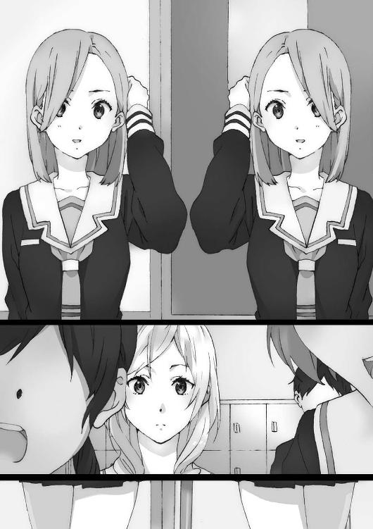
ドッペルゲンガー、ダブル、分身。
ホラーの類いや、他にも異能力系バトル漫画内で登場したことのある現象が、今自分の目の前で巻き起こっているらしい。
「えーと、動作は同じことしかできなくて......鏡にはなるけど。ただ実体はないから【ドッペルゲンガー】でものを摑んだりはできない」
君塚は緊張した様子で自身の〈シンドローム〉を説明する。
しかしなぜそんなことをする必要があるのか。
答えは明白だった。
敵じゃないと示すためだ。
手の内を見せて、腹の内を見せて、皆と同じ枠で今のままの関係でいたいからだ。
君塚の媚びに、誰も反応しない。拒絶もしないし、受け入れもしない。
誰も話し出せない雰囲気ができあがっている。
初めに発言できるのは、Ａ組ではこの女くらいのものだろう。
「はい、了解」
森本成美はさらっとそうとだけ言った。
せめて森本が友好的なら救いはあったかもしれない。だが態度は険悪だった。
「なんでよ。そうしろって、生徒会からの注意事項にもあったから説明を......」
「そこまで説明要った？ 見せびらかしたかっただけじゃないの？」
森本と君塚は割と喋っていたはずだ。でも今は仲がよかったことなど完全に忘れたみたいにとげとげしい態度だ。
「違うよ。あたしは......〈シンドローム〉に目覚めて、これってみんなには使えないし、訳のわからないことだから、みんなと対等になるためには言っておかなきゃって」
「対等じゃないよ、もう」
森本は言う。
「だってあんたは変な力で、二人の姿を見せられる？ だったらさ、一人がどこかにいるように見せてアリバイを作って、その間に悪さをすることだってできるんでしょ？」
「だ、だから違うって！ あたしは同じ動きしかできないから、そんな高度なことは」
「どうだか。実際にその変なの使えないアタシ達にはわからないじゃない」
「本当だって！ 信じてよ......」
「君塚自身が悪いって話じゃないよ。でもある程度は、警戒ってもんをしなきゃいけないの。この前もまた生徒会に言われたんだよね。もっと厳しくやれって」
皆が頷いている。「ちゃんとやった方がいいよね」などと言っている奴もいる。
森本の意見は果たして正しいのだろうか。いやそもそも今のは森本の意見と言えるのか。自身の私情も交じっていそうだが、主張自体は生徒会に端を発するものではないか。
いったい誰が今この流れを作り出しているんだ？
「【ドッペルゲンガー】って、まるで鏡の中の自分をどこにでも立体で出せる力ね」
凜とした声が、同じ色をした葦が一面に広がる世界に咲く。
「なにも摑めないのだし、対称で同じ動きになるのだし、ね」
大河内葵が立ち上がって、群生する葦の中から一人飛び出していた。
「是非、詳しく話を伺いたいのだけれど、いいかしら？」
誰も割り込めなかった二人の間に大河内が立つ。
「えと......う、うん」
「つーかそういうのはやめろって話じゃん。生徒会や先生にも目をつけられるよ」
森本が発言する。
「でも詳しく知ることが、相互理解に繫がってよい影響を及ぼすんじゃないかしら」
正論だ。しかしこの正論が、今の教室で正しいという訳ではない。
大河内に追随する人間は誰もいない。
「とはいえ周りの目を気にした方がいいのも確かだから、他の人がいないところにするわ。だったらいいかしら君塚さん？」
「ああ......まあ、......誰もいないんだったら」
「じゃあ、勝手に別のところでやってくれる？ くれぐれも誰かに見つからないでね。あと、その話を聞こうって奴らは、危険分子って見なすから」
「ちょ、ちょっとなにそれ。あたしは別に変な力を使おうって訳じゃ......！」
君塚は泣きそうな顔になっている。
「言っておくけど森本さん、私も話を聞くだけだから。......他に話を聞きたい人は？」
がたんとイスを動かす音がして、俺の目の前の人物が動いた。
柳沼清十郎が、俺の前で立ち上がった。
「柳沼君は話を聞くこと希望、でいいかしら？」
こくり、無言で柳沼は頷く。
『輪月症候群』の話となれば当然柳沼は動くだろう。
舞台の参加者が増えたためであろうか、教室内がざわつき出した。
「お前も『輪月症候群』に興味あんじゃねえのか？」「お、俺はそこまでじゃ」「なにこの展開？」「大河内さんの味方しなくていいの？」「でも喧嘩したいわけじゃ......」
誰も無理に関わりたくはなさそうだった。
直接火の粉が降りかかってこなければ事なかれ主義、全く正しい判断だ。
高校生でまだ子供のくせに、大人社会の卑怯な生存方法はしっかり身につけている。
大河内が辺りを見渡す。名乗り出る者はいない。
しかしくだらないことをやっているなと俺は思った。反吐が出そうだ。
皆がちんけな、上辺だけの空気に流されている。『輪月症候群』で盛り上がれば同じように盛り上がるし、逆風が吹き始めると逆らわずに流される。
本当に重要なことはなにも考えられていない。人生は無限だとでも思っているのか？
でもそんなものかとも思う。
大河内も、明確に森本を敵に回していったいどうするつもりだろう。そこまで計算しているのかいないのか。どちらにしても馬鹿げている。
こんな対立は本当にどうだっていい。
〈シンドローム〉は俺にとっては重要な鍵だ。それが世界を三年分巻き戻した。けれどその事実は俺だけがわかっておけばよいことだ。
大河内を助けたいとも思わない。
ただ、今このその他大勢の流れに飲まれているままなのは癪に障った。
流されて、流されて、俺はなにもできなくなる。とてもじゃないが我慢できない。ただ座って待って、そしてそのまま高校生活が終われば俺は死んで――。死ねるか。
席を立つ。最後は無意識のうちに体が動いていた。
立ち上がると、驚くほどに全員の視線が集まった。
「横須賀君も、一緒に来てくれるのね？」
今更撤回もできない。第一俺は、他とは違うんだ。
「ああ」
「他にはいないかしら？」
あえて候補を挙げるなら、あとは〈シンドローム〉使いである岩佐美帆だ。
しかし岩佐は俺をちらと窺いすぐ俯いただけで、動き出しはしなかった。
「じゃあ教室でやるのもなんだし」
大河内は鞄を持って歩き出す。少し迷ってから「帰る」と君塚も動き出した。
「さあ行こう」と柳沼が声をかけ、俺も教室から出て行く。
他の奴らに、俺達はどう映っているんだろうとふと考えた。
少数派にはなったんだろうなあとは思う。
去り際、「じゃ」と小さく言ったのだが、蓮田も野上も返事をしてはくれなかった。
君塚が学内の人目がある場所を嫌がったので、ファミレス『ビーナス』に行くことで落ち着いた。
「あー......なんでこんな風になっちゃったんだろ」
移動中の君塚は重い足取りだ。
「やっぱり言ったの失敗だったかなぁ......。でも黙っててあとでバレるの絶対やばいと思ったし......。も～～どうやってもダメじゃん!? 貧乏くじすぎっ！」
「これだけラッキーを引き寄せておいて罰当たりな......。なぜこんな小童に恵が与えられ、オレには降ってこないんだ」
「は？ なんか言ったキモ柳沼？ てかあたしに言いたいことあるならこっち向いて喋ってくれる？ 独り言かどうか判断できないんだけど？」
「......独り言だ」
「いや応じてるっしょ」
君塚と柳沼が応酬をする道すがら、大河内が俺の隣に寄ってきて小声で話す。
「横須賀君、流石ね」
「なにが？」
「あの場面でも自分を貫くなんて、やっぱり他とは違う男ね」
「別に俺は......。どっちかって言うと大河内だろ」
今更貫くもなにもない。今は死にたくない。とにかくそれだけなのだが、どうすればその目的に近づけるのかわからない。
今は細くて髪が長めという条件に合う女子にあたりをつけ、ストーカーみたいに観察してなにかボロが出ないか、きっかけを摑めないかやっているが成果は出ていない。
どうする。次は変人と思われようが「世界をやり直していないか？」と尋ねて回るか。
「それに、ありがとう」
「え？ なにが」
「助けてくれたから」
「全然、そういうのじゃない」
誰かを助ける余裕なんてない。
「だとしても私はちょっと救われたわ。今度なにかあれば私を頼ってね」
「えらく不安そうなのに？」
「い、いくらなんでも目立って対立しすぎたかなとか思ってないわよ。アウトローになっちゃったとかも心配してない」
「ダラダラ漏らしてるじゃねえか」
カマをかけたら当たったようだ。
「口に出したらすっきりしたわ。ありがとう。本当に、横須賀君もなにかあったら」
「じゃあ......」
「じゃあ？」
「お、ここ右だろ」
だったら助けてくれ。助けてみろ。
捜しても捜してもあの女がいない。
探しても探しても方法がない。
夜が怖いんだ。眠るのが怖いんだ。
眠ると死神が俺の魂を奪い、二度と目覚めることがないんじゃないかって思うんだ。
明日になるとまたカウントダウンが進む。
無為な一日を過ごすのが怖い。
怖い。俺といてくれ。
もうすぐゴールデンウィークの四連休がやってくる。
なにもすることのない日々がやってくる。
だったらまだくだらない学校でなにかをやらされている方がマシだ。
なにもないから考えてしまう。考えが深くなる。
死の恐怖が迫ってくる――。
×××
四連休は地獄だった。
×××
そして事件は起こった。
「校内で盗難事件があった。部室棟二階、女子テニス部の部室だ」
そんな話をゴールデンウィーク空け初っ端の朝に、Ａ組担任である高橋俊吾からいきなり叩きつけられた。
盗まれたのは二年女子の財布だった。
「盗難が起きた時、職員室の、部室の鍵置き場から鍵が盗まれていることも確認ができた。あそこは何人もの先生の目に入る。外部の者が盗ろうとすればすぐわかるはずだ」
高橋の醸す威圧感がより一層生徒に重みを加え、室内はどんよりとしていた。
「あまり言いたくはないが内部の者の犯行だろう。くれぐれも貴重品には注意を払うように」
それから手短に他の連絡事項を伝え、高橋は授業のため教室を去った。
「えーこれ絶対犯人いるんだよねー」「嫌だなぁ」「犯人誰なんだよ」「うち不良も少ないのにね......」
一時間目が始まるまでの時間に、ざわざわと皆が話し出す。
「つか盗難とか嫌になるんですけどー」
クラスの女王、森本成美が室内に響き渡る声で言う。
「だよねー、盗みとかマジ犯罪だし」「見つかったらそいつ退学だよね」
森本といつも連む女子二人が続いた。
「中学の時にはなかったのになんで輪月高校にはあるんだろうねー。つーかアタシ、原因に心当たりがあるんだよね」
森本はなにかを言おうとしている。嫌な予感がした。
なにより恐ろしいのは、そのセリフを口にして許される雰囲気になっていることだ。
「『輪月症候群』があるから治安が悪くなるんだよ」
その発言に、特に顔をしかめる者はいない。
「つかさ〈シンドローム〉って、実際にはなんも起こってないから安全って言われているけど。アタシ達はホンモノと感じるから実害ある訳じゃん。超危なくない？」
「俺達には......そうだな」「本物だしな」「炎とか超恐い......」
そこまで片寄った論調だったろうか。でも今は皆がそういう意見ばかりを言う。反対意見が誰からも出てこない。流れを塞き止めるものが現れない。
「だからこその先輩達の言い方になるんだよ。『輪月症候群』なんてロクなもんじゃないから関わるな、〈シンドローム〉も無視しとけ、って」
「生徒会も言ってるしね」「秩序を保つためっていうやつ？」
「そう、秩序。この高校で安心した学校生活を送るためには秩序が必要なんだ。その秩序を乱す〈シンドローム〉を使用することは御法度ってこと」
森本の話を受け、蓮田と野上も話している。
「確かに〈シンドローム〉あったって他校の奴らには伝わらねーし。モテねーし」
「存在意義は感じないよね......」
俺がその会話に加わることはもうできない。二人は俺の方を一瞥もせずに教室の中心を向いて話しているからだ。
違うだろお前ら。それはそれで面白いものだとも思っていたんじゃないか。
なぜ否定するのが正しいみたいな顔をしているんだ。
チャイムが鳴る。授業が始まる、はずだ。でもまだ一時間目の担当が現れない。
「大河内さんとかって」
森本が大河内の名を出す。『とか』にはいったい誰が入っている。
君塚？ 岩佐？ そして〈シンドローム〉使いを一番に挙げなかったことを考えれば......柳沼に、俺か？
「『輪月症候群』の〈シンドローム〉使って、なにかしようと思ってる？」
他の人間は話すのをやめた。全員が森本と大河内に注目する。
「別に、なにかをしようとは、思ってないわ」
「ホント？ 実は悪いこと企んでない？」
それに対して「いいえ」と再び大河内が返すと、森本はターゲットを変更した。
「ねえ盗みって、君塚がやったの？」
「やってないよ!? ちょっとなにそれ!?」
君塚が立ち上がって叫ぶ。
いくらなんでも酷い疑いだ。
普通の感覚ならそう思っている奴がいてしかるべきだ。
でも誰も否定の声は上げない。
沈黙は今や、森本への肯定だ。
「えー、でもやってないって証拠ある？」
「そんなの......いつ盗まれたかわかったらアリバイだって証明できるしっ！」
「でも、あんたの【ドッペルゲンガー】？ ってワケわかんないの使えば、いくらでもアリバイ作り放題でしょ？」
「それは......そんな使い方できないって！」
「だからそう言われたって、本当かわかんないじゃない」
「とにかく絶対に違う！ 絶対に絶対に！」
「じゃあ、岩佐さんなの？」
森本が続けて、今度は岩佐に尋ねた。
「ち、違う......なんで......」
岩佐はまさか自分が名指しされると思っていなかったのか、それとも思っていたけれど心の準備などできなかったのか、酷く狼狽していた。
「なんでびくびくしてるの？ 【透明人間】なら盗みも簡単そうだよね」
森本の話を誰も咎めない。おかしいと思っている奴がいてもいいはずだ。なのに。
「森本さん。そうやってクラスメイトを犯人扱いするのは、どうかと思うけれど」
発言したのは、森本を真っ直ぐに見つめる大河内葵。
曲がっていない。捻くれていない。
たぶん、この発言で自分がどうなるか計算する前に動き出している。だから、凡人達の中から飛び出せる。
「だよねー。よくないよねー」
どう出るかと思ったら、森本は掌を返して大河内に同意した。
「〈シンドローム〉があると、こうやって変な風に疑われたりすると思うんだよね。だからやっぱり〈シンドローム〉使ったり、やたらと『輪月症候群』に関わるのはやめた方がいいワケ。みんなのためにも、学校のためにもその方がいいんだよ」
暴走していたように見えても、最後は上手く着地をする。森本は浅はかではない。
「犯人捜しはセンセー達も動いていることだし、放っておいても見つかるでしょ」
「遅れてすまん。よーし、号令」
そこでやっと数学教師が入ってきた。
×××
「あれの話はなしにしよーね」「了解ー」
もうクラス内では『輪月症候群』を肯定する意見は間違っても言えない雰囲気になっていた。心の中では思っていても、決して口に出すことはしない。
それだけならまだしも。
「なかった方がいいよね、『輪月症候群』」
「ちょっと、あんまりその単語も言わない方がいいよ」
排除するような雰囲気にもなっている。
その空気は無慈悲で優しさの欠片もないものだから、『輪月症候群』だけでなく『輪月症候群』に関するものも乱暴に排除する。
例えば『輪月症候群』に詳しい奴とキャラづけされていた、俺とか。
「横須賀よ、オレはまた他クラス、他学年での〈シンドローム〉調査をしてくる」
「ああ、そうしろ」
「上級生もテストが近くなって話を聞きに行っても取り合ってくれないんだよな......」
柳沼も明らかに前のような元気はなくなっている。
ふと、自分がどういう状況にあるのか確かめてみたくなった。
俺に背を向けている蓮田と野上に話しかけてみる。
「なあ、今日昼飯一緒にどう？」
二人は振り返らない。
「なあ」
「あのさ横須賀」
蓮田が首を回して俺を見た。
「空気読めよ」
一言だけ口にして、蓮田は姿勢を戻した。俺の方をもう振り返りはしない。
「......お前未だに休み時間に『輪月症候群』のこと話してるじゃん」
それは俺にとっての可能性だ。周りがどうだからと捨てる気にはならない。
「もうやめろよ。今はもうそういう雰囲気でもないだろ。お前が〈シンドローム〉使える訳でもないんだし」
「蓮田だって『輪月症候群』が完全にダメって思っている訳じゃないんだろ」
「だとしても今はテスト前になって、みんなその話は自粛しようってなってるんだから。今だけでもやめたらいいだろ」
周りがそういう流れだから、そうしろ？
そのまま流されて死ぬのを、待て？
馬鹿げているだろう。バカバカしくなってくるだろう。
そうやっているうちに死ぬんだぞ。
せめてそれがお前自身の意見だったら聞いてやらなくもないが、どこか別の場所から流れてきた話に乗っかっただけだろう？
教室を見渡すと、岩佐が教室の対角線上の位置で立ち尽くしていた。ここ最近岩佐がやたらと目につく。
目の前にはいつも岩佐が昼を共にしていた女子達がいる。でも彼女達は岩佐の方を見ない。
その光景だけでなにがあったか察しがついた。
そりゃそうだろう。なんたって岩佐は〈シンドローム〉使い本人だ。
これは森本が作り上げたものか？ いや全員で作り上げたものだ。
皆は、こんなクラスを作りたかったのだろうか。
なにかがおかしいし、気持ち悪いと思う。
とてつもない貧乏くじを、岩佐は引かされてしまったものだ。
岩佐の目がこちらを向く。岩佐の潤んだ瞳は合わせるべき焦点を探して彷徨っていた。
同情はするが助ける義理はない。
俺は無視して、一人弁当を食べ始める。
昼食を十分で食べ終わりトイレに立った。
個室に入り、意味もなくスマートフォンを見ながら時間を潰した。
ずっといるのも嫌になってくるので、適当なタイミングでトイレから出る。
その時女子トイレから出てきた岩佐と、ばったり遭遇した。またかよ。思考回路が同じなのか。
と、トイレの方向に誰かがやってきていた。話し声から複数名の女子のようだ。
「ねえ、盗難のやつ誰が一番怪しいと思う？」
「柳沼とか意味わかんなくて怪しいけど」
話す女子達は俺達に気づいていない。嫌なタイミングだ。
岩佐が俺に近づいてきた。俺の横を通って向こうに行くのかと思ったら、なぜか真正面で立ち止まった。
「え......なんだよ」
岩佐は黙ったまま俺の腕を摑む。
「でもさやっぱり......岩佐さんの【透明人間】が一番やりやすいと思わない？」
「だよねー、マジで透明になっちゃうんだもん。確かにそうなれるんだったら......あたしも気の迷い出ちゃうかも」
姿が見えた。
現れたのは、うちのクラスの女子達だった。
「ちょっとやめなって、なんかあった時勘違いされるよ」
「岩佐さんも目立たないタイプかと思ったら〈シンドローム〉で調子乗っちゃうし」
「乗ってたよねー」
岩佐のことなんてどうでもいい。自分のことで手一杯なんだ。
だが、度がすぎるぞ。
「でも岩佐さんって全然目立たなかったからさ......元から透明人間みたいじゃなかった？ 透明人間が【透明人間】になる、なんつって」
「ちょっとそれ酷ーい」
わははと笑う。
周囲の流れに同調して調子に乗って、悪意の加え方だけは随分上等なものだ。どうせ本気で岩佐が犯人だなどと思ってもいないはずなのに。
お前らみたいなのがいるから。
「おい――むぅ!?」
声を上げかけたら急に息ができなくなった。口が、まるで見えない手に覆われているようだ。いやまさしく手が俺の口に。これは......【透明人間】の手か。
女子のうち一人が俺と岩佐をしげしげと眺める。
だけどなにも言わずに前を向くと、女子トイレへと消えていった。
次の瞬間俺の口を塞ぐ岩佐が現れ、今まで岩佐が透明になっていたと気づく。
「お前今【透明人間】に......。しかも体触ってたら他の奴まで透明にできるのかよ」
流石に驚く俺に対して、岩佐は怒りも悲しみもしていなかった。
ただ諦めていた。
「なんでこう......なっちゃったんだろうね」
岩佐は、翌日から学校に来なくなった。
一日岩佐美帆が風邪で休んだ。
まあ普通に体調を崩したんだろうと思った。
二日連続で岩佐が休んだ。
風邪が長引いているんだろうなと思った。
三日連続で岩佐が休んだ。
あ、そういうことなんだと気づいた。
一人の人間が学校に来なくなったのに、表立って気にする奴は誰もいなかった。
岩佐が影の薄い奴だったからなのか、それとも誰であってもそうなのか。
クラスでは明るく楽しい、影のない学園生活が繰り広げられていた。
輪月高校は、『輪月症候群』などない普通の学校のようだ。
なぜ皆それが当たり前だという顔をしているのだ。
皆が記憶障害に陥ったかのような教室。それが気持ち悪くて、休み時間は外に出る。
「や」
廊下で木崎まひるにばったりと出くわした。
「なんだよ」
「女の子が話しかけてあげてんのに感じわるー」
木崎とは元よりたまにしか会話していないが、今になっても変わらず俺にも絡んできている希有な存在だ。
「俺と話すのもよくないんじゃないのか？ 仲間扱いされるぞ」
「そんな雰囲気だよねー。でもあたしはそーゆうのが嫌いでね」
へへ、と木崎は照れたように笑う。男の俺なんかより、よっぽど格好よかった。
「ま、あたしは元から『輪月症候群』自体は意味あんのかなーって感じだったから、それは悪い方向じゃないと思っているけど。......って言っても、こういうのはね」
話しながら、木崎はスマートフォンを操作してメッセンジャーアプリの、テーマに沿ったグループを見せてくれる。
グループ名は、『アンチ輪月症候群』。
「内容は見ない方がいいかなって思うけど......ぶっちゃけ、あんたら名前出てるよ」
「ああ、そう」
「噓だと思うけど、放火や喧嘩の原因になっているのは〈シンドローム〉を使える奴らだ、とか。......あんたらにとって『輪月症候群』がどれだけのものか知らないけどさ。ほとぼりが冷めるまで関わるのやめて、みんなと一緒にアンチ派に入れば？」
「忠告は......ありがたく受け取る」
「まあ基本好きにすれば、って感じだけど」
言いながらもお節介を焼く木崎は、いい奴なんだろう。
でもそんな木崎ですら、主流派の波に吞まれて表立った動きは諦め、迎合している。
あまりにもくだらない。
『輪月症候群』で盛り上がっていたかと思えば、少し悪いことがあると少数派の〈シンドローム〉が使える奴らのせいにする。流されて皆が同じようにする。
なにが解決しているんだ？
ただ自分達が納得できるストーリーを作り出して、問題から目を逸らしているだけだ。
そのストーリーを全員が本気で信じているはずがない。でも深く問題を見ず粗探しをせず、信じているフリをしている。
「俺は媚びる気はないな」
「......なんで？ はぁ、バカみたい」
呆れたように首を振りながら木崎は歩み去っていった。
休み時間が終わるまで少し時間はあったが俺は自席に戻った。
俺の前席で柳沼が熱心に机に向かっていた。なにをやってるんだろうなと覗き込む。
【炎使い】【金縛り】【透明人間】【ドッペルゲンガー】......。
柳沼は『輪月症候群』についてまとめる研究ノートを一人で作っていた。
これじゃあ自分の頭の中だけで展開する妄想と一緒だ。
更に視線を動かすと、大河内も一人で座席に着いて読書をしていた。
流れに乗らなかった者は、周囲の世界から外れていく。
中庭を歩いているところで、後ろから声をかけられた。
「よ、横須賀っ！」
「......なんだ柳沼か」
昼休み学校中を歩き回っている俺をよく見つけたものだ。
雰囲気からすると、わざわざ俺を捜していたのか。
「お......お前に確認したいことがあって！」
いつものうるささではない。柳沼は取り乱して焦っている。丸メガネも歪んでいる。
「どうしたんだよ」
「俺の......俺の『輪月症候群』についてまとめたノートが......」
「ノート？ ああ、気持ち悪いくらいにまとめてたな」
「誰かに盗まれてしまった」
「盗まれたって......、ただなくしただけじゃねーの」
「......一冊はゴミ箱に捨てられているのを見つけた。まあこちらはいいんだが......もう一冊が行方不明なんだ」
「誰が......」
「誰かはわからない。......ただ、『輪月症候群』に反感を持っている人間か、......も、もしくは『輪月症候群』の真相を知られたくない裏の人間がっ」
握り拳を作り仰々しく話す柳沼に俺は言う。
「やめろよ。わかってるんだろお前も？」
裏の組織も、秘密結社もありやしない。
なんの目的もないただ普通の奴らに、俺達は排除されようとしている。
一応、森本からの警告はあった。機会は与えられた。なのに拒絶した俺達が悪いのか。
どうして俺達は、思い描いたように進めないのか。
人生やり直して尚、どうして俺はまた行き詰まっているのだろうか。
「......さっきも言ったようにノートはもう一冊あるので......。見つけたら......教えて欲しい......という話だ。......以上」
チャイムが虚しく響いている。
今日もまた学校が終わろうとしていた。
あの女の手がかりが見つかることもなく、なにも状況は好転していない。
帰り支度をして席を立つ。学内でなにかヒントを探すか、学外に手を広げるか。
「ねえ横須賀君」
迷いながら校舎を出て渡り廊下を歩いていると、大河内に呼び止められた。
どうして人通りの少ないこんな場所で。タイミングを見計らっていたかのようだ。
「横須賀君って、岩佐さんと仲いいじゃない」
「仲いいかはわかんねえけど」
「元気にしてる......か、いえ、してないから休んでるんでしょうけど。様子わかるかな？ 私まだ連絡先も知らなくて......」
大河内だけがちゃんと岩佐のことを心配している。一方に傾こうとする教室内で反論を述べたのも、大河内だけだ。
「まあ......チャンスあったら確かめてみるよ」
「それと、ごめんなさい。横須賀君を巻き込んでしまって......。君塚さんの時も凄く目立たせてしまったから、今こんな......」
「それがなくても俺が『輪月症候群』に詳しいってキャラづけはされてたから」
大河内は周囲の波にも吞まれない、意志の強い女だ。
夜の橋の上で「死にたい」と叫んでいたけれど。
面倒臭いことになりそうで、ずっと目を瞑って放置していた。
でもあの叫びは、どう考えても普通じゃなかった。
なぜ俺は見て見ぬフリをしたのか。その理由はなんだったのか。
「......そういや世界は変わりそうか？」
不意に思い出して尋ねる。
「この様だから、もう少し時間がかかりそうね」
大河内は世界を変える女だ。
二人は四月の初めに、そう言い合った。
二人でバカだなと思いながらも笑う――時間は既に砕け散った。
「お前もさ、なにかあるんだろ」
俺はえぐる。
「え」
大河内をえぐる。
「なにか目を逸らしたくなる現実があって、死にたくなるくらいにどうしようもないことがあって、だから『世界を変える女だ』とか言っている」
大河内は自分を貫いているようで、でも一番肝心なところでなにかを誤魔化している。
「あり得ないくらい大きな価値に縋るしか、自分の現実をやり過ごす方法がない。しかもタチが悪いことにそれは誤魔化しだからなんの解決にもならない。現実逃避もいいところで、最早ただ妄想をしているだけと言ってもいい」
俺の言葉を聞いて大河内は、力の抜けたやわらかな笑みを零した。
「それはあなたが、ということよね」
――あなたが、ということよね。
その言葉のナイフは俺の胸に深く突き刺さった。
大河内は、俺は、現実から目を逸らして誤魔化している？
俺は他とは違う男だ。
更に今は自分が死を待つ男だと認識し、できる限りのことをやり尽くしている。
なのに返された刃が俺へと突き刺さった。
深く、深く。
×××
どうしてこうなった。
確かに俺は、連続三日休んだ岩佐の元へ「お前家近いからこれを届けてくれ」とプリントを預けられた。マジかと思ったが仕方なく任務をこなすことにした。
しかしなぜ今、岩佐の自室で、岩佐美帆と二人きりで正座しながら向かい合っているのか......。俺は数分前の嵐のような一瞬を思い返す。
ぽっちゃりめの岩佐の母親が「あらー、浩人君家来てくれるの久しぶりねー」と現れた時点で嫌な予感はした。
そこから「え？ プリント持ってきてくれたの？ ごめんねー、うちの子が迷惑をかけて」「いえ」「ささ、上がって上がって」「え」「ほらほら遠慮しない、遠慮しない」「え、あ」の怒濤ラッシュで気づいたら岩佐の部屋だった。
じろじろ眺めるのもどうかと思うが、自然と部屋の様子が窺える。
白い壁の部屋には、淡いピンクやクリーム色の装飾が目立つ。やわらかな色合いはいかにも女の子だった。
机の上が散らかってもいないし、本棚もきちんと順序よく漫画が並べられている。普段から整理整頓が行き届いているようだ。
久しぶりに見る岩佐はやつれていることもなく元気そうだった。白いパーカーに下はスウェット姿でもじもじとしている。完全に油断していた格好であった。
「とりあえず、プリント渡しとくからな」
「あ、ありがとう。......現実にあるんだこんなイベント」
本当にそのまま帰ってもよかった。ただ学校に来なくなった岩佐と顔を合わせている機会だ。大河内に岩佐の様子を確かめてくれと頼まれた手前もある。
それにここまできて、またこれ以上見過ごすのかと思った。
「お前なんで元気なのに学校休んでるんだよ？」
「............それは」
言葉に詰まる。でも二人だけだからか、岩佐が立ち止まることはなかった。
「......学校に行くのが難しくなったから」
「なにが原因なんだよ。色々あるとは思うけど」
「なにっていうのは......」
「イジメられてはないだろ、まだ。周りの空気はあれで友達も離れていったのは確かだけど......あ、元々そんなの友達じゃないか」
「はは......そうだね」
強気に返してくるかと思ったら、白々しく笑っただけだった。
「味方がゼロでもないだろ。大河内とか、柳沼も。俺は......別に喋りたくないけど、喋ってやらなくはないし」
「ツンデレだね」
「デレてねえよ」
むかつくやり取りを挟んだくせに、岩佐はしゅんと自信をなくした表情をする。
「でも......わたしがダメな、面白くない奴ってばれちゃったから......」
「初めからばれてるだろそんなもん」
「ひ、酷い！ 今のは酷い！」
岩佐はカーペットをばたばたと叩き、忙しく抗議する。
「つーか、原因それなのな」
他にも色々ある気がするのだが。
「......【透明人間】の〈シンドローム〉に目覚めちゃって、『輪月症候群』への風当たりがめちゃくちゃ強くなって......わたしもそれに巻き込まれたのもあるけど」
岩佐は目を伏せて一人語りを続ける。
「それも結局わたしが、透明人間みたいな奴だから、そうなっちゃったんだよ」
大本の原因はそこにあるんだと、岩佐は言う。
「わたし......人に見られてると全然......上手く自分を出せなくて」
ああ。俺は心の中で唸る。
俺も似たような人間であることは間違いないからよくわかる。
「他人がいると......『人に見られている自分を意識する自分』が出てきて......そのもう一人の自分が邪魔をして......。なんで誰かにどう見られているかが気になるんだろ」
なんでなんだろうな、と俺も思う。
他人の目を気にして自分を出し切れずに、目いっぱい人生を楽しめない。
声の大きい人間達に怯えて、そいつの邪魔にならないところにいるしかない。
そういう、クラスで言えば端っこにいるのが俺や岩佐だ。
たった四十人のクラスでも端に追いやられる人間達なんだ、何十億という人類の中ではどれだけ辺境の地に位置する人間なんだろう。
「だからわたしは透明人間でいようと思った。みんなの中で目立たないようにって」
端も端にいるから、息を潜めて主流派を邪魔しないように生きる。
なんて慎ましい生き方だ。
「そう、願ったのか」
「......願っていた」
だから。
「わたしは【透明人間】に......なって、変に目立っちゃった」
岩佐はその〈シンドローム〉に目覚めた。
「おかげで透明人間みたいな奴だって、完全にばれてしまった。もう挽回できない。そうやってどうにもならないと思うと、動けなくて」
端っこで慎ましく生きるつもりが、不幸なことに余計な力を手にしてしまい、表に引きずり出された。
岩佐はなにも悪いことをしていない。ただ今の世の中で生きるのが下手なだけだ。
なのにこんな小さな部屋に縛り付けられてしまっている。それは酷い話だ。
しかし単純に疑問にも思った。
透明人間になろうとしたことは、正しい解決方法だったのだろうか。
岩佐はちらちらと俺の様子を窺い、聞きづらそうに尋ねる。
「あとわたし......学校行ってない間に、犯人になってない？ 盗難事件の」
「......犯人にはなってねえよ、別に」
「けど、疑いが完全に晴れた訳じゃないんだよね？ ほら、犯人が見つかったとか」
「そういう展開にもなってねえ。みんなお前が犯人だとも思ってないし、なんとなく『岩佐が犯人の可能性もゼロじゃないよな』って思ってもいる、それだけだ」
「犯人の可能性......。犯人じゃないのに......」
「だったら学校に来て『違う』って言えよ」
なんの捻りもない当たり前の案が出てきた。
「でも言ったって......今更誰も話聞いてくれないよ......」
「聞いてくれる意志がなくても、聞かせればよくないか」
当たり前の理論をまた伝える。
「でもでも......こんな端っこで一人になったわたしがなにを言っても、絶対無理だよ」
「引きこもってても無理かどうかわかんねえだろ。第一時間の無駄だし」
「......ダメなことは、わかっているけど。お母さんも心配するし......」
岩佐は涙目になっている。
「だったら学校休むなよ。逃げるなよ」
「わ......わたしの辛さなんて。横須賀君にはわからないから......」
「だろうな」
同じように、俺の辛さもお前には絶対にわからないだろう。
「このまま引きこもって、どうするつもりなんだよ？」
「......行けるようになったら、学校行こうかな」
「いつだよ」
「に、二年生になってクラス替えがあった時にでも」
深く考えてはいないのだろう。でもその回答は、自分にはまだ先があって永遠に続くと思っている奴の回答だ。妬ましいまでに、腑抜けた回答だ。
「どんだけ問題を先延ばしするんだよ。つーか進級できねえだろ、バカ」
思えば人の目があると自分の力を出せないから【透明になる】というのも、なんの解決にもなっていない選択だった。
透明になってやりすごすのは、誰にも迷惑をかけず自分も助かる素晴らしい案かもしれない。
でもそれは、――自分は現状のままなにもせずにいるということだ。
ただ誰の目にも入らないよう、逃げているだけじゃないか。
今だって本人が悪くないのはわかる。
だが抵抗したか。ギリギリまで粘ったか。暴れて駄々をこねたか。限界までやったか。
「......ていうかなんで横須賀君に上から目線で言われないとダメなの？」
少しくらい言わせてくれよ。
なんだかんだ俺とお前の関係も長いんだから。
「別に三年間引きこもって大検の資格とって、大学に行ったっていいじゃん！」
三年後、俺は、死んでいる。
そうか。
俺はもう終わりなんだ。
リミットは、そこにあるんだ。
俺は人生をやり直して、『二度目の世界』でなにをしただろうか。
――他とは違う男だと思い〈シンドローム〉の可能性を信じた。
でもやったことは他人より積極的に『輪月症候群』に関わるくらいだ。
――自分が死ぬ運命を知った。
しかしやることは女を捜すかなにか思い出すか、その可能性に賭けるだけだ。
――大河内が絶望している姿を知っても見ていないことにした。
――『輪月症候群』に対する流れが悪くなっても抵抗もしなかった。
――岩佐がこうなっているのもずっと見過ごしていた。
なんだ。ずっと流されるままになっているじゃないか。
『二度目の世界』を生きる俺は、『一度目の世界』から一体なにを変えたのだ。
少しは変わっているだろう。でも劇的ではない。ほとんど誤差の範囲だ。
俺が『一度目の世界』と同じ行動をしていて、『二度目の世界』は変わるのか？
世界がやり直されていると知っているのは、ほとんど俺くらいしかいないのに。
「ど、どうしたの横須賀君？ なんか目が据わっているような......」
俺は声が震えないようにしながら、言葉を押し出す。
「お前が......辛い状況なのはわかるよ。『輪月症候群』で〈シンドローム〉使える奴への風当たりも最悪だし。でもお前......それに対してなんかしたか？」
「なにか......って？」
「なんか現状を変えようとすることやったかって聞いてんだよ？」
「え......っと......あの......」
俺が凄むと、岩佐はびくびくと震え出す。
「なにもやろうとしてないのに、どうにもならないみたいな顔すんなよ」
「簡単に......言わないでよ。わたしには......できないんだよ」
「できないとか安易に言うなよ」
迫る。
「お前はなにもやってないだろ」
しかし岩佐にも我慢の限界がきたようだ。
「勝手なこと......言わないでよっ。わたしの気持ちも知らないくせに。横須賀君はわたしと違うのにっ。〈シンドローム〉が使えるようになった訳でもないのにっ」
「いつまで現状に甘んじているんだお前はっ」
岩佐のために。
「自分はなにも変えようとせず周囲のせいにして......」
俺のために。
「死ぬ気でやれよっ！」
お前は。
「......死ぬ気でって」
「人間、どうせいつか死ぬんだから」
お前もわかってるだろ。
人は死ぬんだ。
「お前があと一カ月で死ぬとして。お前は同じように踞ってるっていうのか？ え？」
人は死ぬんだ。
「そ......そんなもしもの話されても......」
そんなもしもの話を俺はしている。
「俺は、そうは、しない」
今しかない。今しかないんだよ。今行動しないとどうにもならない状況に自分はいる。
だけど俺は、自分を追い込み変えるまでなにかをやったか。
実際に辛い。今やれる限りのことは必死にやっている。
でも今の自分でできることだ。
それじゃダメなんだよ。それじゃ届かないんだよ。
俺は他とは違う男だと考えていた。〈シンドローム〉の可能性を知っているから凄いことができるんだと、思っていた。
自分で変わろうとはせずに、他人任せに、なにかが変わっていることを願っていた。
なんてことはない、それは今のクラスの奴らがやっていることと全く変わらない。
自分から動き出さずに流れに乗って生きようとしている。
その生き方は普通なら楽だし失敗も少ないんだろう。
だがその生き方は、確実に人間の大事なものを殺す。
普通ではない死という運命に向かう俺は比喩ではなく、死ぬ。
目を開け。見ろ。逃げるな。俺の目の前にはなにがある。
もう岩佐の姿もよく見えなくなっていた。
「横須賀君......。横須賀君はどうして......泣いてるの？」
自分勝手に言いたいことを言い、同級生の女子の家で泣く。ざまあねえな、ホント。
涙目になっているだけかと思ったら、頰を涙が伝っていた。クソ。毒づきながら涙を拭う。
「現状に文句を言うなら、死ぬ気で自分を変えようとしてからにしろ」
わかったか、俺？
俺の言いたいことが伝わっているのか、ただ気味悪がられただけかはわからない。
ただ岩佐は俺の姿を見て、唇を嚙み締めていた。
×××
家に帰ろうという気持ちには全くなれなかった。
体が火照って、じっとしてなんていられない。
俺は自転車に乗ると、目的地を決めないまま漕ぎ出した。
帰宅途中の学生、買い物中のおばさん、集団で走り回る小学生。
色んな人とすれ違いながら、俺はあてもなく進んでいく。
やっと俺は自分の心に向き合えた気がしていた。
自分一人じゃ向き合うのが怖くて、似たような奴の境遇を利用し他人事に置き換えて、ようやくそれができた。
情けないか？
でも仕方ないだろ。俺にはあまりにも大きすぎたのだ。
そこは、完全な終わりだから。それ以上はどこにもない人生の極地だから。
見つめているつもりでも、本気で見つめ切れていなかった。だけど今は。
風を切って俺は進む。
前へ。前へ。この時が永遠には続かないと理解しながら、前へ。
だんだんと夜が近づき、日が暮れてくる。
昼とはまた別の世界に変わっていく。
河川敷が見えてきた。
地形の関係上川から離れて迂回する必要があって、道は上り坂になる。速度が落ちる。思ったより急勾配だ。座って漕いでいるだけでは足りなくて、立ち上がってペダルを勢いよく踏み込む。
そこでふと、以前ここからもう少し進んだ橋で大河内葵に出会ったことを思い出した。
全く違う人種のようで、でもあの時同じようになにかから逃げようとしていた二人は、そこで一度交錯した。
坂の頂上が見えてきた。
そこには人影が、二つあった。
「人殺しっっ！」
ぎょっとする。
二十代と思われる女性がヒステリックに叫んでいた。もう一人の声は聞こえない。
このまま通り過ぎればいいのか、手前で立ち止まった方がいいのか。
しかし様子を窺おうと気をとられて足下がおろそかになった。
自転車がふらつき、足をつく。
罵る女性は後ろ姿しか見えない。春にもかかわらず冬物のコートを着込んだ姿は酷く異様だった。
もう一人は制服姿だ。しかも見慣れた、我が輪月高校の制服で......。
「あんたさえいなければ......あんたさえいなければずっと幸せだったのに！」
制服姿の女は、相手の言葉を甘んじて受け止めている。感情を殺したように無表情で佇んでいる。
そして、それは、
大河内葵だった。
偶然にしてはできすぎだ。
「死ねばいいのにっ！」
憎悪の黒い炎が大河内に降りかかっている。
いったいどんな事情なのか。はっきり言って関わりたくない。
だけど俺達の道は運命に導かれたみたいに、また交わった。
しかもおそらくお互いの最悪の場面でだ。
次から次になんなんだ。
俺になにをしろって言うんだよ。
俺になにを期待してるんだよ。
ここまでくると逆に面白くなってきた。
冷静な判断などクソ喰らえだ。やっちまえ。
一度見て見ぬフリをしたそれを、今度は捕まえてやる。
俺はぎゅっと力を込めてハンドルを握る。自転車を手で押しながら、走った。
加速をつけて飛び乗る。
立ち漕ぎで勢いをつけて走る。
二人との距離がどんどん近づく。
電柱を一本通りすぎる。更にもう一本。ここだ。
ジリジリジリジリジリジリ。
ベルを思いっ切り鳴らす。叫ぶ。
「乗れ！」
声に反応して大河内が顔を上げた。目を白黒させている。
「早くしろ、通りすぎるぞ！」
勢いだけだ。こんなものが映画やドラマのように上手くいくのか。
叫び散らかしている女性は俺を見向きもしない。
「早く！」
「え......え......？」
「急げ大河内っ！」
気迫が実ったのか、はたまた全く別の理由か、大河内はくるりと反転して俺と同じ進行方向へと走り出す。
そして走りながら俺を振り返った。
「いくぞおおおおお！」
俺は叫ぶ女性の横を通りすぎ、大河内に近づいたところで減速する。
「はいっ！」
かけ声と共に俺の両肩に手が。次の瞬間後ろの荷台にずどん、重み。
結構重い......のは口には出さない。幸いここからは下り坂だ。
漕がずとも二人分の重みで一気に下る下る下るっ！
ぎゅ。二本の腕が俺の腰に回って結ばれる。そして俺の背中に当たるこの感触は......脂肪だ。気にするな。つかマジで運転に集中しないと今のスピードだと事故る！
「......！」
ごうごうと耳元で風が唸る中、置き去りにした女性が叫んでいたようだが、なにを言っているかわからなかった。
ともかくある程度距離をとろうと思っていたら、途中で警察に発見された。
「そこの二人乗りやめなさいっ！」
背後で叫ぶ警官を振り切るために更に猛然とダッシュする羽目になった。
「くっそなんだよついてねえ！」
しかも自転車で巡回中だった警官は仕事熱心なことに俺達を追いかけてくる。
「なに!? なんで私、横須賀君と一緒に警官に追いかけられてるの!?」
「知るかっ」
こんなことになるなら素直に止まって「二人乗りしてすいません」と謝っておけばよかった。でもそうしているうちにあの叫び散らしていた女が追いつくかもしれない。
路地に入り込んでぐねぐねと曲がる。再び大通りに抜け、直線を疾走する。
背後に警官の姿は見えなくなった。上手く撒けたか。
「どこまで行くつもりなの!?」
下り坂でスピードがついて風の音がうるさい。
「決めてないっ！」
「え......じゃあ私連れ去られてるってこと？」
「海！ 海行くから海！ すっごい見通しのいいところ！」
視界に入る川はもうだいぶ幅広になっていた。潮の匂いも微かにする。
この勢いに乗って俺は更に突っ込む。
「つーかあれ誰なんだよ!?」
大河内の表情は窺えない。
俺の背中に熱い吐息だけがかかる。
「言って、どうなるのよ？」
「どうにもならねえな！」
前を向いたまま後ろの大河内に話すから大声になる。
「俺が助けるって、冗談でも言ってくれないの？ だからモテないのよ横須賀君」
「冗談じゃなく真剣だからどうにもならないって言ってるんだ！」
だってそうだろう。どうにかなる問題だったら、大河内みたいな強い女が逃げているはずがない。
今平然と喋っているフリをしているのだって、本当はおかしいのだ。
「別に俺はなにもできないだろうさ！ でももしかしたら、万に一つ、億に一つの可能性でなんか変わるかもしれねえだろ！」
背後で息を吞む気配があった。
「諦めるのは最後まで足搔いてからでいいだろ！」
ぎゅっ、と俺の腰に回された腕に力がこもる。
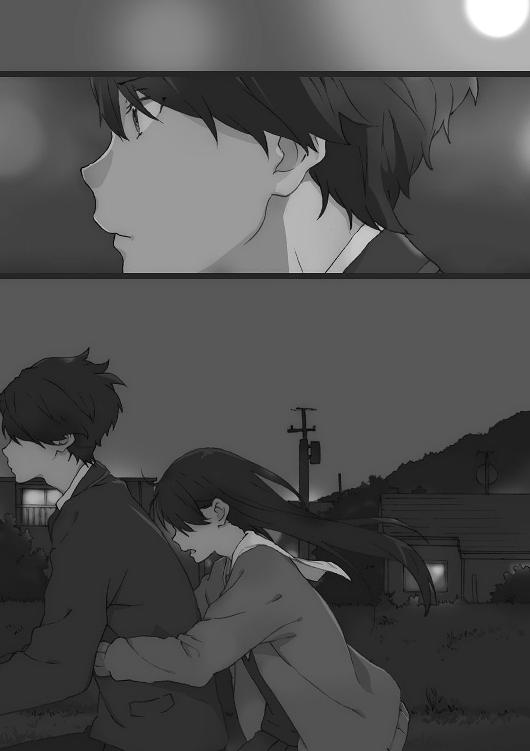
これでなにかが変わるのか。そもそも俺は変えたいと思っているのか。わからない。
でも大河内が口に出せば、大河内の中でなにかは変わる気がした。
誰かに助けを求める術を覚えれば、俺以外の誰かもっと凄い奴に助けも求められる。
「......あれは私の姉なの！」
大河が叫んだ。
「実の血の繫がった姉！」
「......え？ 実の姉があんな......」
「私は、姉の婚約者を殺したから」
表情は決して窺えない。
ただその声は冷たく澄んで、綺麗だった。
邪魔をしないよう、俺は静かにペダルを踏む。
月明かりが照らす町を行く。
その月の魔力か、大河内は静かに囁いた。
「姉の婚約者がドナーになって私は移植手術を受けた。そしたら数カ月後に彼が死んじゃった」
なのに私はピンピンしている、と冗談めかして言う。全然笑えないが。
「正直手術とは関係がない病だったわ。......でも今まですこぶる元気だった人間が手術後数カ月で体調を崩して死んだら、そりゃ私のせいみたいに思うわよね」
そんなことねえよ、などと当事者ではない俺が迂闊には言えない。
「姉の婚約者が死んで、すぐに私が悪者になった訳じゃないわ。みんなバカじゃないし。でも彼のことを大好きだった姉が......少しおかしくなって」
さっき見た女性は、傍から見ても情緒不安定だった。
「姉が『葵のせいだ』『葵が殺した』と言い出して、そうしたら他の人達もだんだん私のせいなんじゃないかって......」
大きな声に流されて、なんの根拠もない話が、思考停止した皆の中で信じられて最早事実として扱われる。
全く以て、俺達が今遭遇している話みたいじゃないか。
「だからこの町に逃げてきて、今一人で暮らしている」
最後に告白された事実が、なにより大河内の実情を表していた。
俺の腰に回された手の輪が一瞬離れ、数拍おいてまた戻ってくる。
その間に手でどこかを拭ったような、いないような。
俺は自転車の速度をバランスが崩れないギリギリまで落とす。
「私、一つ噓をついていたの。ごめんなさい」
申し訳なさそうに大河内は呟く。
「......私はここに引っ越してから、『輪月症候群』を知ったって言ったけど......本当は以前、ネットの噂で聞いたことがあったの。もちろん詳細は知らなかったけど」
「初めから......」
「怪しい噂だから半信半疑だったけど。でもその学校に通うと夢のようなことが起こると知って......そうしたら自分は世界を変えるくらいできるんじゃないかって......」
彼女は妄想をして夢を見た。
本音のところで決して叶わないだろうと諦めている夢を。
死にたいと言うくらいには、絶望したくなる状況だった。
「......思ったより話しすぎてしまったわ」
ちょっと後悔しているらしい。
「横須賀君が聞き下手すぎて話している手応えがなかったからよ。責任とって」
「おい逆じゃねえのか。聞き上手だろ」
そんなやり取りを挟んでから彼女は尋ねてきた。
「......ねえ、横須賀君にもあるんでしょ？」
「なにが」
「『輪月症候群』に傾倒する、理由よ」
お互い現実逃避をしていることは、もう明らかになっている。
大河内は正直に話したのだ。
だったら俺も真実を語ろう。荒唐無稽な、真実の話を。
自転車に二人前後に乗っていて顔が見えないのも、今はちょうどいい。
「実はだな、大河内。この世界には今はもうなくなった『一度目の世界』が三年間あるんだ。それがリセットされて三年遡って、今ここは『二度目の世界』なんだ。ということを俺だけが知っている」
海はもう目前だった。
道路からそのまま海岸に行けそうなルートを探す。
俺の馬鹿げた話を、大河内は笑わなかった。いつもと変わらぬトーンで言う。
「いいじゃない。やり直しなんて楽しそうで」
「でも三年分戻ったはいいが、俺は三年後に死ぬんだ」
気負いもなにもなく俺は言った。
「え」
「......死ぬんだぁは!?」「きゃ!?」
まだアスファルトが続いていると思ったら急に砂浜になってバランスを崩し、転んだ。スピードが出ていなかったから大事故にはなっていないが二人と自転車が砂浜に倒れる。
「ちょ、ちょっとやめてよ!?」
尻餅をついた大河内が珍しく声を荒らげている。
眼は赤くなっていたが、大河内の顔はとても綺麗だった。
「わはは......すまん」
俺達は自転車も起こさず体に付着した砂を払って、そのまま砂浜に座って海を見た。
ざあざあと波の音だけが一定のリズムを刻んでいる。
大きく息を吸うと、潮の匂いがいっぱいに広がる。
夜空の下の広大な黒い海は、全てを飲み込んでしまいそうだ。
三年後に死ぬと言い出した俺に気を使ってくれたのか、それともさっきの大河内の話のあとで不謹慎すぎたのか、ともかく大河内は俺の告白に言及しなかった。
「あーあ......まさか初めての男子と二人っきりの海が、こんなだなんて」
大河内は膝を抱きかかえて言う。
「悪いな、俺とで」
「いいえ、横須賀君はいいの。逃げてきて海岸に辿り着いたシチュエーションが......。逃げ込む最後の場所として、それっぽくはあるけど」
「世界の端に追いやられたって感じだよな」
「横須賀君、意外と詩人ね。言えてる」
「学校でも追いやられているしな」
「そうね......。この学校にも期待してやって来たんだけど」
「俺も......」
『二度目の世界』に期待して、輪月高校に期待して、〈シンドローム〉に期待した。
だけど。
「この世界はマジひでーよな！」
俺は海に向かって叫んだ。
叫び声は黒い海の向こうに吸い込まれて消えていく。
「......どうしたの、急に青春っぽく叫び出して」
「なんで俺達はこんなところに期待したんだろうな」
『一度目の世界』だって、全然期待通りではなかったはずなのに。
この世界がどんなものか、思い返してみろ。
主流に乗れない端の奴らは排除される。
多くがそれを見て見ぬ振りをする。
「最後はあいつが軟弱だからかもしれないけどさあ、なんで岩佐が引きこもらなくちゃならねえんだっ!?」
そこに強い意志はない。ただ自分に被害が及ばないから真剣にならずにただ流れに身を委ね、最後は自らが流れを作り出す存在になる。
「柳沼や俺が誰かに迷惑をかけたか!? かけてないだろ！」
波は押し寄せて、また引いていく。
「大河内がなにをした!? なんか恨みを買うような真似でもしたか!? 不幸にさせられなきゃならなかったのか!?」
世の中の流れは無慈悲に、そんな境遇を誰かに与える。
「横須賀君......」
大河内の呟きは少しだけ潤んでいた。
そして『生』の正しい輪廻からも外れた俺は、いったいどこに追いやられるのだろう。
世界が定めた運命が俺を追い詰めていく。
俺は、俺達は、排除され続けていく。
誰かが楽に生きていくために必要な歪みを押しつけられていく。
多数派が生きやすくなるために少数派が抑圧され、そうやってこの社会は成り立っているんだ。
こんな果てまで追いやられて、やっと未練を捨てて俺は気づくことができた。
「なあ大河内はこの世界をどう思う？ 俺には思うところがあるんだが」
俺が問いかけると、大河内はゆっくりと口を動かした。
「私は......」
大河内は普通のトーンで言いかけて、やめる。大きく息を吸った。
「この世界は最悪よ！」
「この世界は最悪だ！」
俺も同じように叫んでやった。
叫び声はピッタリと合って、ずっと遠くの海の向こうへ飛んでいった。
「はっ、ははははは」「あははははは」
二人で顔を見合わせて笑い転げる。訳がわからないが笑いが込み上げてきた。
もう一回、今度は別の問い方をする。
「このままの世界を、同じように生きたいと思うか？」
大河内は一度沈黙する。即答できない時点で、ほとんど答えているようなものだ。
「ちょっと......疲れちゃったかな」
悪い行いをしたのならまだ納得もできるが、大河内は罪を犯した訳でもないのに、罰のような人生を強いられている。
それは明らかに世界の誤りだ。
世界は間違っているのだ。
そんな世界と相容れられる気がしない。したいとも思わない。
この世界は本当に最悪だ。
ただ。でも。
じゃあ俺はこの最悪の世界で最高だったか？
いいや、俺もこの世界と同様にくだらない存在だった。
最悪の場所でやり直しまでさせられ、その二度目でも俺はなんの成長もなく、端に追いやられている。
ただ今回俺にとって唯一の救いは、こんな端で一人じゃなくて。
その相手が、大河内だったことだ。
「大河内」
俺は彼女の名を呼ぶ。
バカにされないだろうか。訳がわからないし巻き込むなと思われないか。不安はある。
でもこれはきっと一人じゃできない。
だからこんな最悪な時に、最悪な場所で隣り合うことができた女子を誘う。
「終わりにしないか――」
きっと理解されると思った。
だって俺達は二人同じように、絶望してこの場所で行き詰まっている。
俺達はこの世界と、決別すべきなのだ。
大河内は儚く呟いた。
「終わり......」
そう、終わりにしようと思うのだ。
終わり。
最後。
終了。
終焉。
「この世界のされるがままになっていることを」
クソみたいな世界と決別するため、今この世界を俺が終わりにしてやろう。
「......え？」
そりゃ意味がわからないだろう。大河内が俺の方を向いて目を丸くした。
浜風に煽られ靡いた黒髪が、月の光を反射してきらきらと輝いている。
「なあ大河内は変えたかったんだろ」
どうしようもない自分の境遇を。
「だったらその変化を待つなよ」
自分で塗り替えていけよ。
「待ったってどうにもならないって、お前ならわかっているだろう」
なあ大河内。
そして、俺もだ。
「そのままじゃ他の流されているだけの奴と一緒だぞ」
俺の言葉は、大河内の心を揺さぶることができたらしい。
大河内の表情がはっきりと崩れる。泣き顔になる。
「でも......いったいなにを変えてなにと戦えばいいのよ!? 私の話は誰も悪くない！ 家族も、お医者様も......悪くない。相手がいないから......」
「いるだろ、恨む奴が。怒れよ、怒っていいんだよ」
「だからなにを......」
「『世界』をだよ」
「それは......壮大な八つ当たりね」
「身も蓋もない言い方すんなよ」
「こういう人が無差別犯罪を起こすのね。ああ怖い。早く通報しなきゃ」
「待て待て待て。俺はそういうのとは違うから、てか本当にスマホ取り出すなよ」
「だって横須賀君、急に変なテンションになるし......」
「おかしくなってねえよ。俺が言いたいのはつまり、世の中の当たり前に蹴りを入れてやりたいとか、そういうやつだ」
「二世代前のロック風ね」
「二世代前のロックバカにすんなよ！ 俺はそのへんも好きだよ！ ......つーか大河内もテンション戻ってきたな、いつもの感じに」
言うと、大河内はくすくす楽しそうに笑った。
「横須賀君に当てられたのよ。ふふふ」
こんな場所で、楽しそうに。
「そうね。確かに納得のいかないものを変えてやるのは正しいことね」
「だろ！ でもそのためには自分がまず変わらないとな」
結局俺は待つだけだった。
いいことが起きないかな、どうにかならないかな、凄いことを起こしてくれないかな。
俺以外のなにかに期待するだけで、望まぬ流れになっても流されていくばかりだった。
そしてもうこんな端っこに追いやられた。今更遅いのかもしれない。
でもここで踏ん張るのだ。そして流れに逆らってでも進んでいく。
俺達は逆らっていいんだ。
批判していいのだ。
文句を言って暴れていいのだ。
この世界の融通の利かなさに、理不尽さに、無慈悲さに。
でかいものに流されなきゃいけないルールなんて絶対にない。
「なあ、俺達が死んでもこの世の中は変わらないよな」
「そうね」
「じゃ、それを変えてやろうぜ」
俺は立ち上がって一八〇度回転した。
完全に海に背を向ける。
背水の陣を敷く。
道路があって、ガソリンスタンドがあって、民家があって、小さな商店があって、街はずっと続いていく。人々が作り出したものが息吹いている。
そこには確かに幸せはある。
でもたくさんの不幸もある。
全ての不幸なんて消えやしないかもしれない。
だけど。
「隅に追いやられた俺みたいな人間や、大河内みたいな人間が幸せになれる世界の方が、正しいよな」
俺は俺の思うことを思うとおりに言う。
「そういう上手いこと普通の幸せの枠内に入れなかった人間を端に追いやる世界は、間違ってるよな」
「最大多数の最大幸福を考えて、絶対そうと言えるかしら。例えば私一人が恨みの捌け口になることで、私の姉や他の家族は救われているかもしれない」
一理はある。
「確かにどっちかしか救われないこともあるだろうし、どちらも救われるなんて不可能なことだって多いんだろうさ。だけど、いやだからこそ、俺は俺が正しいと思う方向に世界を変えるんだ」
「なぜそれが正しいと？」
「俺が正しいと思っているからだ。俺が正義なんだよ」
そう思って生きて、なにが悪い。
「......凄いダークヒーローっぽくなっているけど......あなたただの高校生よ？ できることなんて、せいぜい北海道一周くらいじゃないの？」
「自分探し中の学生の夏休みと一緒にすんなっ！」
伝わらずにバカにされて終わるのか......。
そう思っていたら、大河内が立ち上がった。
海を背にする。
俺の横に、並び立つ。
「でもそうね。どんな世界を変えた偉人もただの人なんだから。私達がなにかを変えても、おかしくないのよね」
大河内は不敵に微笑みながら長い髪をざっと搔き上げる。
「特定の誰かに恨みはないわ。でも今のままの世界には、飽き飽きしていたところよ」
大仰なセリフが様になって仕方がない。
『一度目の世界』は巻き戻って、消えて、白紙になった。
真っ白にしてしまった約三年分のキャンバス。
そこに俺がやりたいように書き込んでやる。
これは俺による世界のリライトだ。
そして俺は、俺の運命さえも上書きする。
俺は気づいたのだ。
もっと他によい方法は見つかるかもしれない。世界をやり直したあの女の正体を思い出し、なにか別の解決策を見つけ出す可能性だってある。
でももしそれが叶わなくたって。
この世界をことごとく変えてしまえば、俺が死ぬという必然すら変わるかもしれない。
「なあ大河内......俺は『他とは違う男』なんて、周囲の基準と比べたものをやめる」
「あら、そうなの？」
「誰かに決められたものに縛られるのは終わりだ」
そして、世界の端で唯一寄り添い合えた人間を誘う。
「俺達で世界を変えないか」
「ええ、私達が変えましょう」
そして俺達は動き出す。
世界を変えるために動き出す。
覚悟しろ、お前らの世界はもう終わりだ。
土曜日、日曜日と俺はほとんど死の恐怖に怯えなかった。
自分の周りにある世界を変えると決めたら、怯えている暇は一切なくなった。
俺は土日中計画を練った。
一人きりではなく時には大河内とも会って相談した。
飯を食う暇も寝る暇も惜しんだ。
向かうべき相手を定めた瞬間、戦う術は自ずと浮き上がった。
最終的な敵は強大だし、目指しているところはもっと上にある。
ただ今回の勝利条件は、俺達の学校での位置を中心に戻す、つまり『輪月症候群』の地位を一年生の中でもう一度押し上げることに定めた。『輪月症候群』が復権すれば、俺達もクラスの中心に復帰できる。
それくらいできなければ、俺は世の中でなにもできないだろう。
俺『達』の中には当然大河内も入っているし、ついでに柳沼や岩佐、他の〈シンドローム〉関係者も含んでいる。
しかし厄介なのは岩佐美帆だ。岩佐は盗難事件の容疑者という面倒臭い要素が乗っかっている。本人が絶賛不登校中というのも煩わしい。
とはいえ、これくらい乗り越えなければ始まりもしない。
月曜の朝、俺は岩佐を迎えに行く。
「おい岩佐！」
俺は岩佐の部屋の扉をどんどんと叩く。
「え......ちょっと、待って......なんで横須賀君がいるの!?」
「おばさんに許可貰って入ってきた。さっさと着替えろ。入るぞ」
浩人君なら美帆をひん剝いて制服着せて連れて行っても大丈夫だから！ とお墨付きを貰っているので怖いものなしだ。
「ちょっと!? ちょっとちょっと待って!? 寝起きの女の子の部屋なんだからね!?」
「裸だったりすんのか？」
「ら、裸体ではないけど」
「じゃ、いいだろ」
がちゃりとドアノブを捻って部屋に突撃する。
「ひ、ひゃあああ!?」
岩佐が絨毯の上で縮こまり必死に両手で体を隠しぷるぷる震えている。
水玉模様のパジャマ姿だった。
同級生女子の寝起き姿に流石にどきっと......全然しなかった。兄が妹の着替えシーンを見たというか、俺の心持ちも小学生に戻ったというか。
「つーか、お前透明になれるんじゃねえの？」
「はっ！ しまった！」
「本当に透明になるなよ。もう見たから一緒だよ」
しかし輪月高生相手には便利な奴だった。
またぱっと瞬時に、姿を現す。
「なあ、前に死ぬ気でやれって言っただろ？」
それは岩佐に向けての言葉だったけれど。
「俺も死ぬ気でやることにしたんだ」
岩佐から恥ずかしそうな表情が消え、目を伏せる。
「あの日の横須賀君は......現状を変えるためになにかやったかって聞いてきて、死ぬ気でやれよって言って......それで」
そして岩佐は改めて目を合わせてから尋ねる。
「わたしのために、泣いてくれたの？」
なにがスマートな回答かはわからない。
「お前に対してじゃ、なかったな」
でも俺が告げられるのは、真実だけだ。
「......だよね、わたしのためには泣かないよね。でもはっきり言われるとむかつくー」
岩佐は少しだけ表情を柔らかくして言った。
「でも、わたしも......死ぬ気で頑張んなきゃって、変わらなきゃって。あの時思った」
岩佐も俺の言葉になにかを感じてくれていたのだろう。
「......ただ気になるのは、どうして横須賀君はあんな悲壮感漂っていたんだろう、って。なにか辛いことがあったのなら......」
「気にすんな、お前は自分のことをなんとかしろ」
「......はい」
不満そうに岩佐は返事をした。
俺の境遇はむやみに誰かに話すことでもない。
「でもあれだ、ちょっと頼みたいことがあるんだ」
「ま......任せて！」
「実は学年の『輪月症候群』の評判をひっくり返す計画があるんだが、それを手伝って欲しい」
「は、はぁ」
「今は時間ないからあとにするけど、諸々資料渡してまずは打ち合わせだ」
「え......あの、『輪月症候群』の評判をひっくり返す計画っていうのは面白そうだなって思うんだけど......。わたしそもそも今学校に行けてなくて......」
「そうだな。じゃあ行きたかったら勝手に行けばいいし、嫌だったら行くなよ。ただ俺の計画の時だけは来いよ」
「なにその無頓着!? わたしのことを学校に連れて行くってそういう流れじゃ......」
「知るか。お前の人生なんだから、お前がそれでいいなら学校とかどうでもいいだろ。嫌だったら勝手に死ぬ気で行け」
「う、う、う～～～～！」
岩佐は駄々っ子みたいに手足をバタバタさせた。
でもそういう話なんだ結局は。
自分が変わらず周囲を変えられるはずがない。
「行きたいとは......思っているけど、わたしは誰かに見られたら......うう～！」
今度はゆさゆさと体を揺する。全身で葛藤していることはよく伝わった。
俺もなんとかしてやろうと思っていないこともない。
これは面白いんじゃないかという案なら実はあった。
「だったら誰にも見られずに学校に行けよ」
「............え」
「【透明人間】になって学校に行ってしまえ」
これなら誰の目を気にする必要もない。
「せ、先生には見えちゃうでしょ」
「先生に見られることは、別にいいんだろう？」
「それはそうだけど......」
「よし、これで学校に行けるな」
「うん、ありがとう......じゃないよ!? 透明で行っても解決になってないよ!?」
「じゃあどうやったら解決なんだよ」
「あの......もうちょっと優しくしてくれてもいいんじゃないの？」
「甘やかさない主義なんだよ、俺は」
「な、なんで保護者目線......むかむか......！」
反抗的な岩佐を、俺は「はいはい」と軽くあしらう。
「で、でもまだ盗難事件の犯人扱いの件が解決してなくて！」
「ああ、あれはなんとかしたいな。変な事件と〈シンドローム〉が結びつけられちゃってるから、それが別物だと証明できるだけでも変わるはずなんだ」
「そうそう、そうだよね。その件を解決しないと色々難しいだろうし」
「じゃあ岩佐が【透明人間】になって学校で犯人を捜し出してくれ」
「え!? わたし!? ていうか丸投げ!?」
さっきからリアクションでかいなこいつ。学校でもそうしろよ。
「そ、そんなの無理でしょ？ 犯人が学校にいるかどうかもわかんないのに」
「別に犯人を捕まえなくても、自分が犯人じゃない証明ができればいいんだぞ」
「そっちの方が難易度高い気が......。とにかく無理でしょ......無理」
無理だ、無理だ。
まだ安穏な世界に浸ったままの岩佐はそんな弱音を吐き続ける。
悪い奴じゃないのはわかっている。
だけど口を開けて無償の奉仕を待っている奴になにかしてやるほど俺は善人ではない。
だから俺は言った。
「お前さ、誰かに見られているからダメになるんだろ？ でも誰にも見られない【透明人間】なら、ダメになる理由がなくないか？」
言い訳という名の幻想に逃げ込むことはできないと、教えてやる。
×××
岩佐と話し込んでしまったため学校に到着したのは予鈴が鳴るギリギリだった。
おかげでその男と話すのも一時間目が終わってからになった。
「いつまでノートに向かってるんだよ柳沼。......授業のノートじゃないんだろうが」
「ああ......横須賀」
今や落ち込み切ったこの男の熱は、やはり本物だったと思う。
誰の目も気にせず自分の信念を貫く姿は凄い。
ただその空気を読まない姿勢は、学校なんかじゃ他人の理解を得にくいんだろう。
だからこそ戦力としても見込める。
こいつの場合は素直に誘った方が話が早いだろう。
教室はざわざわと騒がしいが、俺達に注意を払っている連中は誰もいない。
今俺達は空気みたいな存在になっているから。
「柳沼。俺と一緒に戦わないか？」
「戦うって......なにとだ？ 俺の『輪月症候群』研究ノートを盗んだ犯人とか？」
柳沼は眠そうな目で聞き返す。
「そんなちんけな敵どうだっていいだろ」
「......ちんけと言われても」
「やるなら全部ひっくり返そうぜ。『輪月症候群』を一年の中で復権させたい」
「......一年生の中で、復権？」
くい、と柳沼は丸メガネを直す。
「できれば上級生も巻き込んでといきたいところだが、流石にこっちは様子もわかんねえし。とにかくクラスだけでなく一年全体がアンチ『輪月症候群』に傾いているのなら、その全てを覆して逆転させる」
「どうして......。いやそんなことをしても、またただの話題として消費されて終わるだけじゃ......」
「お前なら、やってくれると思ったんだがな」
押す。はっきり言ってこんな話を素面でできるのは、やっぱりどこかズレている。
でもそれくらいじゃなきゃ、多数派が作る圧倒的な流れなんて変えられない。
バリバリに尖った少数派だけが、固い壁を打ち破れる。
「お前は入学した時から『輪月症候群』を偏愛していて、周囲がどれだけ変わろうと未だにその姿勢はぶれない」
見る奴が見たら気持ち悪いだろうし、異常なほどだ。
だからきっと。
「ただ興味があって好きだから、だけじゃない『輪月症候群』にこだわる理由がお前にもあるんだろ」
そう言った時、柳沼のメガネの奥の目がここではないどこか遠くを見た気がした。
「俺の動機はお前とは少し違うかもしれない。でも、『輪月症候群』でなにかを変えてやろうという気持ちは、一緒だ」
「お前は......」
柳沼は俯くと、ぶるぶると、いやびくんびくんと、相当気持ち悪く震え出した。
「お、お、お前ってやつは～～!? 横須賀はわかってくれる奴だと信じてたぞ～～！」
柳沼は不細工な顔で泣きながら俺に飛びついてきた。
「や、やめろお前気持ち悪いっ！ 涙も......あと鼻水マジでやめろおいっ！」
「ああ戦ってやるさっ......！ いこう、オレ達だけの世界へっ！」
「離れろ！ み、みんな変な目で見てるだろ!? 胸に顔をこすりつけるな!?」
ほら、向こうで「え？ ＢＬ？」とか変なこと言ってる奴もいるから！
俺は次なる人物への接触を試みた。
「昼休みに悪いな、君塚。......んな睨むなよ」
「話すこと、ないんだけど」
君塚桜は脱色したストレートヘアをくるくると弄りながら、つっけんどんな態度だ。
「俺にはあるんだよ」
「は？ あんたと話しているとあたしまで変な奴扱いされるでしょ」
「......あ、はい」
だ、ダメだ......ヤンキー系の相手だと俺の強気が鳴りを潜めてしまう。声がでかく気の強い奴が結局俺は苦手だ。相性も悪い。
というか、君塚相手ではそうなることは想定済みなので。
「これはあなたにとってもメリットのある話なのよ、君塚さん」
大河内にもついてきて貰っている訳だ。
ぶすっと不機嫌な君塚であるが、俺達を追い払いはしないので、話を聞いてくれるということでいいんだろう。
昼休みに一人で中庭をふらふら歩いていたのだから、暇なのは間違いないし。
「〈シンドローム〉っつーのはさ、やっぱ凄い可能性があると思うんだよ」
「は？ だからなに勝手なこと言ってくれちゃってんの？ あんたらのせいでこうなったところもあるんだよ」
「......そ、そうかもしれないけど」
なんとかならんかと大河内の方を見る。
「このまま日陰者でいるのには、納得してないでしょ？」
「......そのうちほとぼりは冷めるっしょ」
「あら、そんなので納得するの？ ただみんなが許してくれるのを待つ、なんて。君塚さんって、きっと中学の頃はクラスでも中心の方だったんじゃない？」
「それが？」
「現状に満足しちゃっていいのかしら？」
君塚は頭をがしがしと搔いて「あ～」と唸る。気のないフリを必死にしているが、痛いところを突かれたようだ。
俺が驚いたのは、大河内に対してだった。
世俗に興味がなさそうで、こういった普通の奴らの機微には疎いんじゃないかと勘違いしていたが、全くそんなことはなかった。
「一気に中心に戻れるとしたら、なにをどこまでやってくれる？」
今や完全に君塚を手玉にとっていた。
「............なにをすればいいのよ」
悔しげに、顔を逸らしながら君塚は言ってきた。
しかし焦らしプレイなのか、大河内はなかなか返答しない。
つんつん、となぜか大河内が俺の脇腹を突いてきた。
「え......なに？」
「最後は、横須賀君でしょ？」
ぼそりと言われて、慌てて君塚に向き直る。
君塚はちょっと怪訝な顔をしていた。
「......俺達の計画に、協力して欲しい」
＋＋＋
わたしを無理矢理外に出るように仕向けて、あとはほったらかしなんて酷すぎる。
いったい全体どういうつもりなんだ横須賀君は。
だいたい透明になって犯人見つけるか、どうにかして無罪を証明しろって、無茶ぶりにもほどがある勝利条件だ。
......と、言いつつもわたしは透明のまま学校に来ているのだけれど。
既に授業は始まっていて、校舎内は静まり返っている。
【透明人間】だから生徒には見えないけれど、先生に見つかってしまったらアウトだ。
でもここまで来たら、タダで帰る訳にもいかない。
さあ証拠探しだ......と気合いを入れてみたものの、授業中は一人でいるところを用務員の人や先生に見つかっちゃうとダメだし、他の生徒に紛れられる時間帯にならないと動けなかった。
なのでわたしは一人トイレで一時間近くじっとしていた。
超暇だった。
で、休み時間になると活動を開始する。
わたしのことを知っている先生には気をつけて......と。
廊下で皆がぺちゃくちゃと話している。
わたしはいつもこのお喋りが気になっていた。
ざわざわ色んな人が喋っていて、どこでなにを思われ、評価され、勝手に語られているかわからない。わたしの悪い噂や、あいつださいね、なんて会話もきっとあるんだ。
それにきっとリア充な人達は、お洒落でスマートで面白い会話をしているから。
そう思って、ずっとずっと怖かったのだが。
「昨日八時の八チャン観た？」「観た観た。どっきり企画のやつだろ？」
「このヨーグルト味新発売なんだってー」「へー、味見したーい」
「部活......マジしんど。朝練がなぁ......」「いやぶっちゃけよくやってるわ」
......だいたいはすっごい大したことなかったし、つまんなかった。
他人の会話は外から聞いていても面白くないっていうのはある。でもこうやってほとんど人生で初めて、人に聞かせるつもりのない個人の話を聞き回って、よくわかった。
むしろ、わたしと横須賀君の会話の方が面白いんじゃないかと勘違いしてしまう。
そうやっているうちにまた授業時間になってわたしはトイレに避難した。
退屈で堪らない時間をまた過ごし、休み時間になると活動再開する、というローテーションを放課後まで続けた。
休み時間の度聞き込み（透明になって盗み聞き）を続けたが、大した収穫はなかった。
感想は『輪月症候群』の会話は本当に減ったなぁというくらいだった。二年生と三年生は未調査なのでよくわからないが。
無為な時間だったかと言えば、そうは思わなかった。
簡単に犯人に辿り着くか、わたしがやっていない証拠が手に入るとは思えない。だけどなにもしていないより希望が持てたし、なにかが変わりそうだと期待できた。
放課後になれば当然部活が始まる。
わたしがやったかもしれないと疑われている盗難騒動の舞台はテニス部の部室だ。目指すべき場所はここしかなかった。
部活が始まりほとんどが部室から出ていった。用事で遅れた生徒数人が部室に入るようになったところで、テニス部の部室の前に近づく。
テニスバッグを抱えた女子がやって来た。
「うぃーす」と言って扉を開ける女子に続いて、わたしも部室内へ体を滑り込ませた。透明なまま扉を開けるのは、目撃された際ホラーになってしまう。
細長い鉄のロッカー四本と、あとは木でできた扉もない大きな棚に雑然と荷物やらボールやらが置かれている。十ほど並べられたパイプ椅子も半分くらい荷物に埋まっていた。油断しているとなにか踏んでしまいそうだから、立ち位置を考えないと。
部屋には三人の部員しかいなくて、そのうち一人も入れ違いで出ていった。
慎重に慎重に......「わっ」とっ！
がしゃん、とパイプ椅子に足をぶつけた。痛い。というか声を......。
「......ん？」
一人の部員が訝しげな目でわたしを――わたしのいる辺りを見る。
どっくんどっくん心臓の音が高鳴る。
「どうかした？」
「今そこで変な声がしなかった？」
「ちょっとやめてよー。怖くなるでしょー。田代が出ていったからそれでしょ？」
「じゃなくて......」
怪しんでいる部員が椅子から立ち上がった。
ちょいたんま。待って。うそ。今日一日誰にも見咎められなかったから無敵になった気がしていた。でも全然。わたしは見えていないけどここにいる。
盗難のあった女子テニス部の部室で透明になったわたしが見つかったら......。
やばい。
犯人扱いされても仕方ないほどの墓穴だ。
全く意識なく自分は死地に飛び込んでいたのだ。
立ち上がった女子は一歩二歩とわたしの方に歩き出す。
棚の前で立ち止まる。
しゅるりと制服を脱ぎ出す。
せ、セーフ。ただの着替えか。
「あ、そう言えばさー。この前盗られたじゃん、美智子の財布」
「うん」
どきりとした。
いやこれは......わたしが気づかれたからされた会話じゃない。ピンチじゃなくて......チャンス？ 初めて、盗難事件についての会話に遭遇できた。
「内部犯だって犯人捜ししてるじゃん。部室の鍵も盗まれてたとかって」
「知ってる知ってる。イヤだよねー」
「鍵盗まれたのは、まあ本当みたいなんだけどさ。でも......」
でも、なんだ？ 続け。話を続けろ。わたしは祈って息を止める。今一ミリでも体を動かして話が逸れてしまってはイヤだ。
「実は同じ日に、部室の窓ガラス割られてたんだよね」
「あれ、そんなことあったの？」
「んー、次の日すぐ取り替えられたからねー」
「じゃあなに、犯人は窓ガラス割って入ってきたの？ ......ん、待って。じゃあ鍵が盗まれた話は？」
その女子と同じようにわたしも思った。どこか符号が合わない。変だ。
「財布を盗んだ奴は窓ガラスを割って入ってきて、鍵を盗んだのは別の人間？」
だとしたら、鍵を盗める内部犯、つまり生徒達が容疑者第一候補という前提も崩れる。
「いや、どっちかって言うと逆かな。鍵を盗んだ奴がやっぱり財布盗った奴で。窓ガラス割られたのが別の話」
がくり、と頭を落とした。それじゃあ内部犯という前提は崩れない。わたしが無罪を主張する武器にはならない。
「へー、なんでわかるの？」
「わかるっていうか、高橋先生が言ってたから」
「高橋先生......って関係あったっけ？」
「あの人体育会系の部活指導担当じゃん。だから部室棟の管理もしてるんだって」
「へー。でもなんで窓ガラスの件共有されてないの？ そっちも怖くない？」
「だよね......。だからあたしもヘンだと思って」
「なにを？」
「高橋先生が......窓ガラスが割られた件は、言い触らすな、って」
「言い触らしたらマズいことあるっけ」
「さぁ？ 理由とかは全然」
「てか行こ行こ。もう基礎練終わってるよ」
着替え終わった二人がバタバタと出ていった。
部室に一人取り残される。
「えっと......」
今の話を、ちょっと整理だ。
職員室にある鍵が盗まれて、財布が盗られた。だから内部犯の可能性が高くて、それをやるのに最適な〈シンドローム〉を持っているからわたしが疑われて......でも。
窓ガラスを割って侵入されていたなら、わたしが疑われる根拠はなくなる。
だけどそれは違うと、高橋先生が言っている。
......なにを根拠に？
そもそもなんで口止めをする必要があるの？
高橋先生はその件を黙っている。
どうして？
＋＋＋
「第一回『輪月症候群』プロジェクト会議を始めたい」
俺は畏まって開会宣言をする。
「横須賀君、両手を顔の前で組み合わせて、まるでどこぞの司令官ね」
「ちょっとでも雰囲気を出そうとしたオレの努力をはっきり指摘するなよ」
「フフフ......ついに『輪月症候群』の凄さを世の中が知る時がきたのか......」
「な、なんか一人で気持ち悪いこと言っている......？」
「君塚。柳沼の仕様をいちいち気にしてたら日が暮れるぞ」
「こ、これで序の口......」
「横須賀君が......横須賀君がみんなをちゃんと仕切っている......！」
「岩佐はなに驚愕してんだよ。俺だってこれぐらいやれんだよ」
自分でも随分べらべらと喋るなと思いはするけれど。吹っ切れたらなんとかなった。
「というか岩佐さんよ！ 普通にしれっといるじゃない。今日学校来てないのに」
大河内がずばりと指摘する。
「こ、これには深い事情があって......。横須賀君に無理矢理連れられて、でも透明で、そしたら重要な情報を摑んで知らせようと思ったらまた無理矢理連れられて」
「横須賀君が犯罪者だってことはよくわかったわ」
「全然違えよ！ むしろ俺はヒーローだよっ！」
「えー」と大河内は不満げにする。いや不満げな顔をしているのは全員だった。お前らなぁ......。
俺と、大河内葵、柳沼清十郎、岩佐美帆、君塚桜。まさしく一年Ａ組『輪月症候群』オールスターの面子が顔を合わせているのは、
「いらっしゃいませー......って勢力拡大中？」
木崎まひるがお冷やを運んでくる、ファミレス『ビーナス』のＢＯＸ席だ。
「いつ来てもいるな」と俺が言う。
「うーん......週三のはずなんだけど」
「あれ？ 岩佐さんまで......き、消えた!?」
「ここで透明になるなよ。ややこしくなるだろ」
「ごめん。つ、つい」
「カオスなメンバー......いんだけどさ。お冷やとおしぼりどうぞー」
確かにこの四人は利害が一致して集まってはいるが、強固な絆がある訳でもない。
たぶんこの戦いに勝てなきゃ即解散だろう。
それにまだ、戦力が不足している。
「楽しそうでなによりなんだけど、いったいなにが始まるの？」
今日もこの時間には客が少なく、木崎も少しくらいのお喋りは許されそうだ。
実はここに来たのは会議ともう一つ狙いがあった。
「そうだ、俺は木崎もどうかと考えていたんだ」
「なによ」
木崎は周りに流されず『輪月症候群』に対してフラットな人間だ。
「仲間になれとは言わない。ただ協力する気はないか？」
「だからなにをするのよ」
「『輪月症候群』の復権だよ」
「えーと、話がまだ見えないんだけど、あたしは『輪月症候群』なんて幻に付き合っている暇はないから」
「ふん、症候群の可能性も信じられない人間に興味はない。去れ」
「偉そうに言うならこっち見て言ってくれる？」
「喧嘩売るな柳沼。俺は木崎が『輪月症候群』のことで俺達に味方してくれるなんて思ってないぞ」
「ああ、横須賀はちゃんとわかってるじゃん。よかった」
「でも、だ。木崎」
俺は立ち上がって、ひそひそ声で耳打ちする。
「......俺達がプロレスをやるって言ったら、どうする？」
「え」
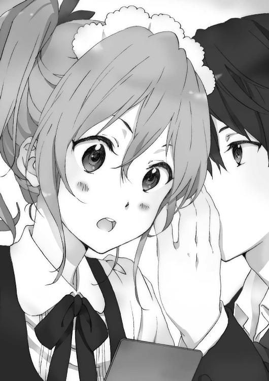
木崎の目の色が変わった。
それこそ試合終盤、相手を仕留めにかかる女子プロレスラーのように。
「プロレスを手伝ってくれって言ったら、やってくれるか？」
答えが返ってくるまでに、たっぷり十秒間あった。
「べ、別に手伝ってやらないこともないけどっ」
仲間の少ないプロレス好き女子は、超ちょろかった。
他の客がやって来て木崎が仕事に戻ったところで、俺は計画の全容の話に入った。
「とにかく一年生の間で『輪月症候群』を復権させようって話だが」
「でも結局さ」
君塚が発言する。
「みんなが『輪月症候群』アンチになってるのも、盗難事件の影響とか大きくない？」
「ああ、だからあれは別枠で解決を試みている」
言いながら岩佐に視線をやると、うんうんと頷いた。
「え、犯人捕まえるとか？」
「そこまでは難しいだろうが......犯人候補は〈シンドローム〉使用者に限られない、という結論に持っていければ十分だろ」
まずはマイナスの先入観をなくす。
「そして皆がこの学校にしかない『輪月症候群』を面白いものだと感じる流れに持っていきたい」
今がどこかの誰かが作り出した流れでできあがっているなら、それを打ち消し変えてしまう流れを俺達が創造すればいい話だ。
「ほう。しかしいったいどうやってそれを実現する？」
柳沼は顎に手を当ててすっかり乗り気だ。
「バトルをやろうと思っている」
「ま、まさかの実力行使。宣戦布告？」
戦々恐々、といった様子で岩佐が呟く。
「いや俺達、〈シンドローム〉使い同士で戦う。異能バトルって訳だ。それを通じて〈シンドローム〉のことを理解して貰う」
「「は？」」
既に内容を知っている大河内以外の女子二人はびっくりしたようだが、一人柳沼はノリノリだった。
「〈シンドローム〉バトル！ 熱いな！ 少年漫画的展開だな！」
「それ女の子受けするかな......」
岩佐は不安そうで、また君塚は完全に冷めた表情だ。
「いや、なんでバトル？ もっといいのあるんじゃないの。〈シンドローム〉使いが親切な行動をして評判を上げるとか」
「はい頂き。じゃあそれもやろう」
「頂きって......」
「やれることがあるならやろう。たぶんいくらでもある。その上でバトルをするんだ」
「前半は同意だけど......。やっぱバトルなの？」
「俺達は『輪月症候群』のことをみんなに認めさせたい。ただ一つ矜恃を持ってやろうと思っているんだ」
「どんな矜恃なのかしら？」
事前に打ち合わせをしていたため口を挟まなかった大河内が、聞いてきた。
「媚びを売るのはやめよう。それじゃいずれまた同じになる」
軍門に降って下手に出れば、その構図は一生変わらない。
俺達が上書きしてやる必要がある。
「なるほど、大切なことね」
満足げに大河内は頷いた。
「でもあんたさ、やたら大層な話をしているけど、実際にどう実行するか計画立ってんの？ それがなきゃ」
俺は鞄を開くと、クリップで留めた紙の束をどさどさと机の上におく。
「これが台本。と準備が必要なものとその調達先の算段書。あとは宣伝案」
「......やば」
君塚が紙の束のページ数を数えながら驚いている。
「これが本気。いや死ぬ気ってことだ」
「さ、流石横須賀っ！ オレが見込んだ男！」
「死ぬ気......凄い」
紙だろうが現物で見せてやるのは効いた。柳沼も岩佐も感心した様子だ。
「まあ最初にやらなきゃいけない最重要課題は、もう二人ばかし〈シンドローム〉使いの協力を得られないかって話なんだが......」
×××
第一回『輪月症候群』プロジェクト会議の二日後。
朝の教室にはまだ柳沼がおらず、俺に話しかけてくる人間は誰もいなかった。
大河内や木崎とは席が離れているし、喋る機会は多くない。
相変わらず俺達は学校で『普通』の奴らに避けられ続けていた。
「てかさー、お前も結局軽音入るのな」
「いいでしょ別に」
蓮田と野上は自分達の会話に忙しいようでこちらを向いてはくれない。
もうこの態度には慣れっこだ。
この二人も周囲の雰囲気に支配されているだけだと思えば、むしろ可愛いものだった。
今に覆してやる。俺は鞄の中のずっしりと重い紙の束を確認しながら思う。
昨日家で夜な夜なコピー機の動作音がうるさいと姉貴にどやされながらもなんとか学内の一年生全員分、二四〇枚刷り終えたビラがある。
実は半分見切り発車なのだが......たぶん上手くやってくれている。
俺達は学内で寂れた場所にある休憩スペースに集まっていた。休憩所、といってもベンチと雨よけがあるくらいだが。
「一応これでいこうかと思っているんだが......」
「見せて頂戴」
ビラを取り出すと、大河内が俺の肩越しに覗き込んできた。
「『〈シンドローム〉の価値を見極める。本当の真実を知るための舞台がここに』......うん、いいんじゃないかしら」
首筋にかかる息がくすぐったい。
「誰でも真相は知りたいものよね」
「おい横須賀！ 朝にもちらっと言いかけたが......【炎使い】田宮健太はオレ達に協力してくれるぞ！」
柳沼が自信満々に自分の成果を述べる。ガッツポーズまでして嬉しそうだ。
「田宮はいい奴だから誰が頼んでも大丈夫だったろ」
「な......なんだと......!?」
「あー、でも柳沼は前から交流してたし、だからスムーズだったのかもな」
「そうだろそうだろ！」
にこにこ顔で柳沼は頷く。
面倒臭えなこいつ。
「はーい、あたしも大友と話つけてきましたー。はぁ......」
片手はポケットに突っ込んだまま、もう一方の手を挙げて君塚が言う。
「おい君塚......もしかして失敗したんじゃ......？」
怖くなって俺は尋ねた。
「は？ 誰が失敗よ。ちゃんとなんとかしてきたって【金縛り】を」
「おお、なら」
「ただ大友はやっぱ性格よくないねー。......大丈夫かな」
【炎使い】田宮健太、【金縛り】大友裕也、これで必要な駒は揃った。
「てゆーか、ビラってやつ見せてよ」
君塚は俺の手から用紙をひったくった。
「むむっ!? ここは青の方がよかったんじゃないか!?」と柳沼もビラのチェックに余念がなさそうだ。もう刷っちまったから訂正は無理だけどな。
「凄いわね」
大河内がぽろりと、俺にだけ聞こえる声で零す。
「色んな人が動いてくれている。クラスの人が離れた時も、仕方ないかって勝手に諦めてた。でも本気になれば変わるんだね」
「正直俺も......びっくりしている」
素直に言ってしまった。
「......全て計画通りに進んでいるんじゃないの？」
不安げな表情で大河内が尋ねてくる。
「かなり薄氷の上を渡っているから今後どうなるか......」
「そんな気はしてたけど。......危ない橋をよくここまでは渡りきってるわね」
呆れたように溜息を吐かれた。
「でも、一緒にやろうと言ったパートナーにここまでやられると......。私もリスクを背負ってでも挑戦したくなるじゃない？」
にやりと唇の端を吊り上げて、大河内は俺にある提案をした。
翌日の朝はいつもより早く学校に着いてしまった。
教室に入ると先客として大河内と柳沼がいた。
皆同じなんだなと、ちょっと笑った。
昨日のうちに戦いの時を告げるビラを各人一人一人の机に投入済みなのだ。
それを誰にも気づかれずに成し遂げたのは、今この場にいない【透明人間】である。
ぞろぞろと生徒達があとから登校してくる。
やがて何人かがそれに気づき始めた。
「......なんじゃこりゃ。変なもん入ってるぞ」
「あ......俺のところにも」
「第一回シンドローム・バトル・クラブ......とか」
「ファイヤーボールキッドＶＳドッペルゲンガー......格闘技のチラシみたいだなこれ」
クラスの皆がビラを見つけて話し合っている。
「放課後の、場所は体育館の裏ねえ」
「部活あるから無理だろ」
「いや、確かその日はテスト最終日だろ。教師が集まって会議やる日だよ。だからその日の放課後は部活全面禁止のはず」
「でもこれ、誰主催なんだ？」
「......ファイヤーボールとかドッペルゲンガーとか、明らかに一年のアレ使える奴らが中心だよな」
「つーことは......」
「最近こそこそなんかやってるっぽかったからな」
「でもテスト中はアレ使用禁止だろ......あ、終わってるからいいのか一応」
俺達になにか聞きたそうにしている奴もいたが、ここはあえてなにも言わず思わせぶりにしておく。
ともあれ久々に教室内で〈シンドローム〉の話題が生まれていた。
Ａ組のクラス内でアンチ『輪月症候群』の急先鋒となっている森本成美が、それを知ったのはお昼を過ぎてからだった。
「......なにそれ？」
どうも森本は自分の机の中身を朝一にきちんと確認していなかったらしい。
「シンドローム・バトル・クラブ......はぁ」
森本が露骨に溜息を吐くのを、俺は柳沼と一緒に昼飯を食いながら聞いていた。
「なにこれちょーうざい」
嫌悪感を全く隠さないまま、森本は昼休み中のクラス全体に向かって問いかけた。
「誰？ こんなのやろうとしてんの？」
ぺちゃくちゃと歓談に満ちていた教室から会話が消えていく。
「まあ、もちろん目星はついてるけどさー」
俺と柳沼、それから最近共に昼食をとっている大河内と君塚のコンビを森本は見やる。
「他のクラスでも話をする奴ほとんどいないのに」
『輪月症候群』に関わる奴はハブる、という誰がルール化したのかもわからない学年全体の雰囲気は、やはり厄介だった。
今のままだと皆も動きにくいのだ。
その場所に行くだけで少数派に属したとのけ者にされる可能性がある。
だから理由づけをしてやる必要があった。
大河内と俺は離れた席で目を合わせる。
本当にやるのかと俺は問いかけたかったが、しかし大河内の意志は固かった。
「で、『集合！』って集まって欲しいみたいだけど。誰も行くワケないよねぇ？」
嫌らしく言う森本に、声を上げる者が一人。
「私はとっても楽しみにしているわ」
大河内葵が透き通った声を教室に響かせた。
「あ、そ」
「できるだけたくさんの人に見て貰えるといいと思っている」
「見に行く奴とかまさかいないでしょ」
「森本さんも是非」
「はぁ？」
森本に喧嘩を売って、大河内にはリスキーな悪目立ちをさせてしまっている。
「私達はまだ『輪月症候群』と〈シンドローム〉のことをちゃんと知らないと思うの。でもそれがここで、はっきりするんじゃないかしら。そういう風に書いているわ」
「だからなんなの」
「そこで『輪月症候群』の要不要を判断しない？」
「判断するもなにもないでしょ」
「逃げるの？」
大河内の芝居がかった運びに、クラス中の皆が釘付けになる。
「......逃げるぅ？ なにが逃げるなの？ 全然逃げてないけど」
「〈シンドローム〉に怯えて、逃げているって言っているの。あなたの支配体制が壊れるのが怖くて」
大河内は立ち上がり、勝負に出た。
「あなたはクラスで、いえ学年でも中心になっていると思うわ。ずっとそうしてきたのでしょう？ あなたはそうなれる力を確かに持っている。でも輪月高校には〈シンドローム〉が存在していた」
普通の世界にはないものがここにはある。
「輪月高校では、もしかしたらより強い〈シンドローム〉を持っている者がルールを決める形になるかもしれない。あなたはそれが我慢ならなかった。だから必要以上に『輪月症候群』を端に追いやろうとした。そういう意図があったんじゃ」
「勝手な妄想喋んないでっ！ 生徒会が考えた内容に従っているだけでしょ！」
森本が肩を怒らせながら立ち上がる。
「あら、言われたことにただ従っているだけなの？」
「いや違うけど。アタシを勝手に小さな奴にしないで。きちんと判断した上での結論だから。価値もないものに関わるのはみんなにとって時間の無駄だから『やめたら？』って伝えんの。みんなのタメよ」
「みんなのために、ね。それは素晴らしいわ」
大河内は微笑する。まるで白い妖精のようだ。
しかし愛らしい笑みの後ろに、勝利の確信が微かに浮かぶ。
「だったら今後の方針を決めるためにも、みんなに一度〈シンドローム〉をちゃんと観て貰って、それが要らないものかどうか判断する必要があると思わない？ もちろん、森本さんもちゃんと見極めて判断して欲しいわ」
「なによ勝手にっ......！ 生徒会が......」
生徒会と言おうとして、それではまた従っているだけだと指摘されると気づいたのか、森本は途中で言葉を切って席に乱暴に座る。
「みんなが適切な判断をするための機会を奪わないわよね？」
正論でほとんど勝負がついたところで、大河内は更なる追撃をかける。
「森本さん、この勝負から逃げないでね」
勝負あり、だった。
大河内が森本に喧嘩を売った、その話題性は抜群だった。
皆の野次馬心に火をつけることに成功したのだ。
「そこで『輪月症候群』がどうなるか決まるらしいぞ」
「流石に見に行かないとな」
やがて、そのイベントは『輪月症候群』の行く末を決めるから皆が見に行かなければならないという流れが生まれ、噂が広がる。
×××
決戦の金曜日の放課後は見事な快晴だった。
予定通りテスト後の教師陣全員出席の会議のおかげで、その日の部活動は全面禁止となった。その一学期中間テストの結果は......まあどうでもいい話だ。
放課後学校にいることは構わないが、用がないものはさっさと帰れと伝達された。
俺と柳沼は六時間目後のホームルームが終わるや否や駆け出し、ステージへと向かった。舞台設置がまだ完了していない。俺と柳沼は最後の仕上げに入った。
体育館の裏口側の石が敷き詰められたスペースに、体育倉庫から持ち出した薄いマットを使って一辺が約六メートルの正方形を作る。その周囲を走り高跳びの着地の際に使用される厚手のエバーマットで囲う。更にその外側にハードルで囲いを作った。これが闘技場......に見えて欲しいと考えている。
計画から準備、実行まで一週間しかなかった。
役者を揃え、宣伝をし、舞台を整え、できる限り本番に向けた練習と修正を行い続けたが、はたして上手くいくのだろうか。
「舞台の準備は一応完了か」
俺が呟くと柳沼が言う。
「あとは本番に備えるのみだな！」
「しかしお前、よく応じてくれたよなその役割」
柳沼の手にはマイクが握られている。
存外に声がいいので当日の実況を打診してみたら、二つ返事で了承したのだ。
「女子とは話せないのに」
「他ならぬ横須賀の頼みだからなっ！ それにマイクで全体に話すのなら壁に話しかけているのと同じようなものだから別に......って女子と話せなくないぞオレは！」
「もう無理なくらいべらべら喋ってから否定すんなよ」
「話さないだけだ！」
「余計タチが悪いな」
更に一旦体育館を離れて小道具などを準備し、再び会場の体育館に戻ってくる。
果たして人は集まっているのだろうか。体育館の壁越しに会場の様子は窺えない。
体育館の側には、今日の主役となる面々が勢揃いしていた。
結局最後は〈シンドローム〉使いに任せるしかない。他のメンバーにリスクと重責を背負わせているのは申し訳ない。同時に感謝している。
「ありがとうな、田宮」
「よせよ。それは全てが終わって成功した時に言ってくれ」
スポーツマンらしいさわやかな笑顔で【炎使い】田宮健太は言う。男前すぎて、むしろ男として嫉妬してしまう。
「君塚も、頼むな」
「まずはあっちが......でこっちは......だから......になって......へ？」
「頼むぜ、君塚」
「ああ、おっけおっけ......で、......になるから」
【ドッペルゲンガー】君塚桜は段取りの確認に余念がないらしい。
「大友もよろしく」
「ああ、はいはい」
【金縛り】大友裕也は目を合わせず右手を挙げておざなりな返事をする。
「流れは大丈夫だよな」
「大丈夫、大丈夫。心配無用」
軽く言って、にやりと唇の端を吊り上げる。
猫背で暗い雰囲気を漂わせる大友はここまできて尚不安だった。唯一未だに信用できていない男だ。
「で、岩佐な」
【透明人間】岩佐美帆は他から距離をとってぽつりと一人で立っていた。
あれから岩佐は何度か透明にならず登校していた。しかし教室には姿を現しておらず、所謂保健室登校というやつだった。
俺は岩佐に近づいて声をかける。
「調子はどんな感じだ？」
「まあ......まあまあ......かな」
「大勢の人間の前に出ていくけど大丈夫か？」
「な、なんで言うのさ!? 余計緊張するじゃん！」
「だって事実だし」
「やっぱりわたしにはあんな大役無理だよ。わたしはみんなに見られると全然ダメになっちゃうから。どうせまた失敗しちゃう......」
「まあ引きこもってていきなり出ていくのはキツいわな。『あれ、あいつ学校休んでんじゃないの？』って指差されるし」
「ほ、ほらぁ！ ていうかわざわざ口に出して言わないでよ!?」
「なんだよ、言わなかったらなんかなんのかよ」
「い......言わない方が意識しないで済むじゃん」
「意識しないで済んだら、なんか変わるのかよ」
「周りを気にしなくていいから思いっ切りできるじゃん。自分の力も出し切れて......」
「そうするためにお前はまた透明人間になるのか」
岩佐の表情が変わった。
怯えた不安げな表情を消し、一度強く口を結んでから言った。
「もう......逃げるために透明人間になりたいとは、思わないよ」
「へえ、そうか」
あえて気のない返事をする。
「透明になっても、それじゃなんの問題解決にもならないから。もう変わらなきゃ」
岩佐も自分で考えてちゃんと結論を出したみたいだった。
「ああ......でも急になんて無理だよ......！ ねえ横須賀君、やっぱイベント開催一週間後にしない？」
「無理に決まってるだろっ。現実逃避するなっ」
しかし急に人は変われないらしい。無理もないか。
勝手にやってろと突き放したいところだが、この作戦自体の成否もかかっている。
なんとか手助けをしてやる他あるまい。
「おいこれだけは言っておいてやる」
「な、なんでしょう？」
「お前は気が弱くていつも目立たないようにして、例えば小中の運動会だって玉入れみたいな自分一人に重圧のかからない競技に出てばかりの、活躍しようがしまいがなんの話題にも上らない奴だが」
「ひ、酷い......！」
「お前の運動神経のポテンシャル、相当凄いからな」
「......え」
記憶の彼方へ消えかけていたけれど、幼い頃鬼ごっこをやろうが、ケイドロをやろうが、こいつは凄まじかった。
「力を出し切ったら、凄いんだお前は」
「............えへへ」
「にまにまするな、むかつくな」
「確かにちっちゃい頃、横須賀君に負けた記憶ないや。それでいつも『全然捕まってくれないよ～！』って横須賀君が泣き出して......ごめんなさいそんなことはなかった気がするから拳を握らないで！」
ちょっとおだてたら調子に乗りやがって......！
「......でもお前、そうだろ。人がいるから力を出せない。だからダメだって言ってるってことは裏を返せば」
もうこれ以上は言いたくないのだが背に腹はかえられない。
「自分の力さえ出せれば自分はできるって思っているんだろ。すげー自信だよ」
「私が......自分に自信を持って......いる？」
岩佐が意外そうな顔をして、自分の両手を見つめている。
あとは岩佐の底力に期待するしかない。俺は岩佐を置いて離れた。
つーかここまでお膳立てしておいて、初っ端から敗北が決まっていたらどうしよう。
人がちゃんと集まっているかどうか、それが初めの関門だった。
俺は一歩前に踏み出す。少しずつ体育館、真裏の方へと近づいていく。
ざわついてはいる。人が一人もいないなんてことはなさそうだ。
そして角を曲がる。
一人、二人、三人、四人、並んでいる人間を端から順に数えていく。......十人......二十人......三十人......いやそんなんじゃきかない！
二百は流石に言い過ぎでも、百は間違いなくいる。百を超えている。
クラスにしたら優に三クラス分、学年の半分はいるんじゃなかろうか。
さて彼らはどんな顔をしているだろうか。
楽しそうに隣と喋っている奴、やるならさっさとやれと苛立っている奴、気怠げに眺めているだけの奴、冷やかし感満載でへらへらしている奴。
どうせ深い考えを持っている奴なんていやしない。それ自体は全然間違いじゃない。訳のわからないイベントに身構えてどうするんだという話だ。
じゃあ、そうやって腑抜けている人間達に見せつけてやろうか。
×××
マットで作られた闘技場の前に四人の人間が並んだ。
岩佐美帆、君塚桜、田宮健太、大友裕也。
おどおどとした小さな少女、ちょっと不良っぽい女子、いかにもスポーツマンといった男、暗くなにを考えているか読めない男。雰囲気のまるで違う四人達だ。
ただ彼らには、輪月高校の生徒にのみ効果のある異能力、〈シンドローム〉を使えるという共通点があった。
出てきた四人を、観衆達は観戦スペースと定められた位置から見ている。
近くの者同士で会話をするばかりで、四人へと声をかける者はいない。
四人と観衆達は、まるで断絶しているかのようだ。
俺と大河内、柳沼、木崎はその対照的な二組を、横から眺める形になっていた。
『それでは初めに開会に先立ちまして宣誓を行います』
マイクを通じ、本日の司会、柳沼清十郎の発した声が体育館裏の扉側に設置されたスピーカーから拡散された。
「開会......で、宣誓？」
「の前にこれ自体がなにかよくわかってないんだけど」
「けどここで......あの症候群の行く末が決まるって話あるし」
観衆達からはそんな声が出ている。
「つか柳沼......あいつが喋んの？」
司会柳沼への文句も聞こえた。
しまった、聞く者が柳沼でマイナス感情を抱くのは考慮していなかった。
「ワケわかんないことで時間とらされるとか？ 何様？」
一際大きな声が発せられる。
取り巻きを引き連れて前方右端に陣取る軍団の先頭に立つのは、森本成美。ばっちり決まった派手な髪型とメイクが周囲から浮くほど目立っている。
逃げずに俺達の勝負を見に来たようだ。
『選手代表、田宮健太、前へ』
「田宮って......あの炎使える奴か」
「一番初めに〈シンドローム〉に目覚めて調子に乗ってさ」
「ああ、それで放火したかもしれないとかなんとか......」
勝手な話し声が飛び交っていた。
〈シンドローム〉使い四人の前にはスタンドマイクが設置されている。
田宮が一歩踏み出し、その前に立つ。
この役割は、この中では一番好感度が高く名が売れている田宮にこそ相応しい。
精悍な田宮が手を挙げると、まるで本当に野球の大会前のように錯覚した。
『......俺達は〈シンドローム〉を使うことができます』
田宮の宣誓が始まる。
『この学校には『輪月症候群』があります。しかしその全貌を知っている者は、ここにはいないと思います。いや誰もいないはずです』
格好をつけるために宣誓と言ったが、実のところ演説である。
『訳がわからないものだから、色々な憶測が出ることは当然だと思います。こじつけに近い勝手な話でも、そう考えてしまうことは否定しません』
文面は皆で考えている。話す中で、田宮のアレンジも入っているが。
『だけどわかって欲しいのは、それは噂にすぎないということです。決して真実かどうかはわからない。だからちゃんと見極めて、判断して欲しい』
皆が幾分真剣な面持ちで田宮の話を聞いている。
そもそもこうやって田宮が主張できる舞台が整えられていることに価値があった。
この状況を俺が作り出したんだと思うと、それだけで少し感動した。
『俺達は今からここで、自分達の〈シンドローム〉の全てを出し合います。それを見れば、皆さんも〈シンドローム〉のことが少しはわかるんじゃないでしょうか』
この言葉はどこまで聴衆に響いているのか。
『包み隠さず全てを出し切り、正々堂々、戦うことを誓います。選手代表、田宮健太』
田宮が頭を下げると、観衆は周囲の目を気にしながら、まばらに拍手をした。
『単純明快なルールを説明しますっ！』
司会の柳沼は予想外にノリノリであった。
田宮の宣誓を経て、立ち去る者はいない。
まずなにが起こるか確かめてやろう、そんな雰囲気がある。
スマートフォンを弄っている奴も多いが......。
『勝敗は一、相手を戦意喪失させる、二、相手を闘技場の場外（厚い方のマットの上）に追い出す、のどちらかで決します。また審判が危険と判断する攻撃がなされた場合は反則とし、注意・警告を行います。注意・警告をしても同じ行為をした場合は反則負けといたします！』
木のテーブルとパイプ椅子の簡易実況席で柳沼が熱弁を振るっていた。
『尚、審判は横須賀浩人・大河内葵の二名です』
俺と大河内は実況席のすぐ側の審判席というポジションに座っていた。
『......おまけで解説には、......はぁ......、木崎まひるとかいうのが加わります』
『解説を務めます、木崎まひるです。どうぞよろしく』
柳沼の隣には、木崎が解説担当として控えていた。
「嫌そうに紹介してどういうつもりよ」
マイクに拾われないようにしながら木崎が毒づいている。
「この二人、上手くいくのかしら......？」
隣の大河内がぼそっと言うのに、俺はなにも返せなかった。
『ただいまより第一試合を行います！』
柳沼のコールで、田宮健太と君塚桜が外周となるラバーマットの上を通り、薄いマットの上に降り立つ。岩佐と大友は体育館の後ろに下がっている。
二人の人間が、六メートル四方の闘技場対角線上で睨み合う。
「戦う意味がイマイチわかんないんだけど......てか〈シンドローム〉で戦うの？」
「そもそも戦うって大丈夫なの？ 生徒会や先生に睨まれない？」
「でもわたし達が使っているわけじゃないしー。見てるだけっていう」
「まあ〈シンドローム〉がどういうのかわかりそうってのはあるなぁ」
「結局俺達はどんな立ち位置で見てればいい訳？」
観衆達はどうしていいか戸惑っているようだった。
だが少なくとも、しばらく見ていてはくれそうだ。今はそれで十分だ。
『【炎使い】〝ファイヤーボールキッド〟田宮健太ＶＳ【ドッペルゲンガー】〝ドッペルゲンガー〟君塚桜。始め！』
柳沼が開始の合図を告げる。
観衆達はまだざわつきながらハードルとマットでできた闘技場を眺めている。
その中の誰も、今からなにが起こるのか想像ができていない。
実況席付近の俺のところにも、戦う二人の声は届いた。
「じゃあいくぞ......頼むぞ」
田宮健太が心配そうに確認をしていた。
「いつでもどうぞ」
君塚桜は緊張気味に、でも余裕ぶって返す。
田宮は一度俺の方も確認をした。目線のサインは「やるぞ」の一言。
セットポジションに入った。
次に足を引いて振りかぶる。投手の投球動作だ。足が上がる。だけど田宮はグローブをはめてもいなければボールを持ってもいない。
「まず......一球目だ！」
叫ぶと同時、右手に火球が現れた。
ボールのリリースポイントで、火球も右手から離れていく。
燃える火球の大きさは野球ボールより少し大きくソフトボール大。
スピードは男子が投げるドッジボールくらいの速度感か。
一直線に君塚桜に向かって飛んでいく。君塚は動かない。動けない。
そして着弾。
君塚の体全体が燃え上がって、霧のように消えた。
観客の女子から「きゃああああ！」と甲高い悲鳴が上がる。
焼けて、消失してしまった君塚......しかしそこには。
「......いやちょっと怖いわマジで」
無傷の君塚桜が立っていた。
『田宮の火球による先制攻撃で一気に勝負ありか!? と思わせて君塚が無傷で出現!? いったいどうなっているんだ～！』
柳沼の実況に呼応して観衆がどよめいた。
『田宮選手の〈シンドローム〉は【火球を放つ】というものです。着弾すると燃え上がる火球は破壊力抜群です。更に田宮選手は野球部に所属しています。そのフォームを利用することで威力・正確性を高めているのでしょう』
木崎が解説を付け加えると、更に観衆達から大きな声が上がっていた。
「いやいや破壊力抜群って！」「死ぬでしょあれ!?」「......でも〈シンドローム〉って幻で実際に影響はないから大丈夫......」「痛みは感じるんじゃなかったっけ？ 全身燃やされた感覚とかやばすぎでしょ......死ぬ......！」
闘技場でもまたファーストコンタクトが終わり、会話が行われていた。
「......それが【ドッペルゲンガー】か」
ド派手な先制攻撃をかました田宮が言う。
「ご明察。って言うほどでもないか」
『おおっと、ここで君塚が二人になった!?』
二人になった君塚が二メートルほどの間隔で並んでいる。
「「どっちが本物でしょー、なんて」」
口も全く同じタイミングで動き、声も二人分重なって聞こえるのだ。
「なんかピンピンしてるけど!? 燃えたのに!?」「いやだから燃えないんだよ」「二人いるよ、ねえ二人!?」「君塚さんの〈シンドローム〉だよ！」
『先ほどの火球は君塚選手の分身に当たったようですね。君塚選手の能力は【ドッペルゲンガー】。自身の分身を作り出せます。圧倒的な攻撃力を持つ田宮選手に対し、君塚選手がどう相手を混乱させることができるかが鍵ですね』
「どうせ二分の一だろ......もう一発だ！」
再び振りかぶって、田宮が火球を放つ。
「はっ！」
君塚が躱す。距離があれば避けることも不可能ではない速度だ。
うおっ、と観客から声が上がった。ターゲットを外した火球が観客席目の前まで行き、そこで消失した。田宮の火球も射程がある。十メートルほどだろうか。
「今のは当たりだったか......」
「さあ？」
いつの間にか君塚は一人に戻っている。
「じゃあ三球目！」
同時に君塚がまた二人になった。
一人に着弾、燃え上がる。
「ふー」ともう一人が汗を拭って「危ない危ない」と口に出す。
『また外れたか？ しかし君塚選手は防戦一方！ 果たして攻め手はあるのか!?』
『けれど君塚選手は球筋を見極めています。田宮選手が炎を出すまでに少し時間がかかるので、接近戦に持ち込めば勝機はあるんじゃないでしょうか』
「お......おいマジこれやべえよ！ 完全に異能バトルだよ！」「リアルに見ることになるなんて......」「で、でも最終的には安全なんだよな、な!? 幻だし！」
実況、解説の存在もあってか、観衆達もこの戦いの趣旨を理解しつつあった。
「じゃあ、そろそろ俺も決めに入るか」
「「自信満々な宣言しているところ悪いけど、まだノーダメージよ」」
また君塚が二人になった。
「舐めた態度をとったこと......後悔するなよっ！」
田宮が火球を放る。正面にいる君塚に真っ直ぐ飛んでいく。
「「さっきより遅く......っ!?」」
一つの火球の着弾の前、既に田宮は投球動作に入っていた。
先ほどよりも豪快に体を開き、踏み込みと同時に腕を振るう。
『ひ、火の玉を二つ同時に出すことも不可能でない!?』
『これは君塚選手予測してないですよ！』
柳沼と木崎の大声がクライマックスを予感させる。
「終わりだ......『クロスファイヤー』！」
今度の火球は斜めに角度をつけて、野球で言えばちょうど左バッターの内角に食い込むような球が、もう一人の君塚に向かっていく。
『は、速い!?』
今までで最速の球が飛ぶ。
まず初めに放っていた火球がターゲットを捉える。
【ドッペルゲンガー】だったようですぐに君塚は消え去った。
そして間髪を容れず『クロスファイヤー』がもう一人の君塚の体を貫く。
燃え上がる。
『あ、あ、当たってしまったあああああ！』
柳沼が叫ぶ。観客席からも大きな悲鳴が上がる。
人間が燃えた。
幻だから本当に火傷はしない。でも痛みはある。全身が炎に包まれるなんて想像するだに恐ろしい。君塚の脳はどんな痛みを感じたのか......だが消えた？
君塚は自分と同じ動きをする【ドッペルゲンガー】を生み出す。
【ドッペルゲンガー】は一つ目の火球にやられた、つまりもう一方の君塚本人は『クロスファイヤー』にやられたのではないか......と、皆思うだろう。
「あっ！」
そして観客が気づく。
皆の目に映るのは、田宮に向けて疾走する、君塚桜。
『な、なにが起こってるんだ!?』
『君塚選手が生み出せる【ドッペルゲンガー】は一体だと、ずっとそうだったから二人いればどちらかが本物だと思い込まされていたんです！ 実は【ドッペルゲンガー】が二体生み出せるなんて！ そりゃ田宮選手だって二つの火球を生めるんですからおかしくはないんですけど！』
君塚が一直線に田宮に走る。
追撃の火球は間に合わない。どうする。田宮の焦りが伝わる。ただ君塚の〈シンドローム〉は相手を攻撃するタイプではない。腕力は普通の女子高生なのだから、腕っ節で勝負をすれば田宮は勝てたに違いない。
でも今ここは〈シンドローム〉による戦いの場だ。
田宮は火球を生み出すことに囚われて、動き出すのが遅れた。
「うりゃあああ！」
技はなにもない。力でも負けている。
けれど構えもなにもない男に、たとえ女子でも思い切りぶつかれば、相手は吹っ飛ぶ。
「おわあああ!?」
田宮は押された勢いで一歩、二歩、三歩下がり......ラバーマットに足を引っかけてその上に仰向けにひっくり返った。
『しょ、勝負ありだ～～～！ リングアウトにより、勝者君塚桜っ！』
＋＋＋
わあああああ――。
悲鳴とも歓声ともつかない音が聞こえる。
決着がついたらしい。
体育館の陰から、ちらりと闘技場を覗くと、百人を越えるほどの人間が群がっていた。
熱気があって、混沌としている。
「これからあそこにわたしが......」
飛び込んでいくんだ。
ごくりと生唾を飲み込んだ。
「あの......よろしくね。上手くやろうね」
改めて大友君に声をかけておく。
「......しかしあれだな。もしこの闘いが......ガチじゃないってわかったらどうなるんだろうな」
大友君はにやりと唇の端を吊り上げる。嫌な感じの笑みだ。
確かに大友君の言う通り、これは真剣勝負ではなく台本のある闘いだった。
つまり演劇と言い換えてもいい。
「一気に冷めるか、それともふざけんなって怒るか」
「ちょ、ちょっと......」
「つか、なんでそんな緊張してんの？ これってもう勝負が決まってる訳じゃん。途中どういう風に闘うかも段取りがある。気楽なもんだろ」
この人、意地が悪いなと思う。
「でも予定調和もつまんないしなー。......ぶっ壊しても面白いなぁ」
最早、危ないかも。
『それではただいまより第二試合を行います！』
不安を残したまま始まりの時はやってきてしまう。
「呼ばれてるみたいだぜ」
先に大友君が出ていき、間もなくわたしも表舞台へ、出た。
先ほどはただ立っているだけでよかった。途中からは田宮君が前に立ったし、自然とわたしに向かう視線は減った。
でも今は、わたしが見られている。
人の目が。人の目が。人の目が。わたしを捉えて放さない。
目眩がした。頭がぐるぐる回った。
きっとわたしはダメだって思われている。わたしはバカにされている......違う。
頭を振る。ここで負けちゃダメだ。
わたしは真っ直ぐ歩いていく。ほんのわずか、拍手はあるようだ。
この闘いは勝負が決まっている。途中どのように闘うかも段取りがある。だから気楽なもんだろ。
大友君は言ったけど、全然気楽なんかじゃない。
わたし達の敵は別にいる。
観衆だ。
この大勢の人達との真剣勝負がわたし達を待っている。
それはきっと、どんな凶暴な対戦相手と闘うよりもある意味恐ろしい。
「......岩佐さんって、今学校休んでんのにね」「で、ここには出てくるの？」「それってどーなのよ」
なんでそんな声だけが、聞こえてくるんだ。
気を張って死ぬ気で耐えている心が、ぽっきりと折れてしまいそうになった。
まずハードルを跨ぐ。それから分厚いマットの上を、沼に入ったようにぶよぶよ踏んで抜け、薄いマットの闘技場に降り立つ。
六メートル四方のその場所は、入ってみると随分広く感じられた。
これだけの人間がいるのに、この空間に入れるのはわたしと、対戦相手の大友君だけだ。
二人だけの世界がある。
そう思うと、ちょっとだけ自分を見つめる大量の目が遠くなる。
それでも、わたしが失敗してきた音楽発表会や、部活の試合の時みたいな緊張感はちっとも消えない。
『【金縛り】〝ルーラー〟大友裕也ＶＳ【透明人間】〝ミス・インビジブル〟岩佐美帆。始め！』
気づいた時には開始の合図がされていた。
はっとする。浮き足立っていると自覚した。
突如。
ごうん。風圧みたいなものがきて、そのあと体が重くなる。
次の瞬間、体がぴくりとも動かなくなった。
噓。なんで。緊張しすぎ。
どれだけ緊張しているんだわたしは。慌てるな。ここまで歩いて来たんだから。まず一歩踏み出すことから。あれ。全身が石になったように動かない。
猫背の姿勢の大友君が、ズボンのポケットに手を突っ込んだ余裕な態度で笑っている。
もしかして......？
〈シンドローム〉が、既に、使われたんだ。
これが【金縛り】――『魔女からの一撃』。
『えー......両者まずは相手の様子を窺っているようですね』
木崎さんが状況を解説している。でも当初と予定が違うから戸惑っている。
横須賀君や大河内さんの目が気になった。あいつ、やっぱり肝心なところで緊張してダメになる奴だと思われていないか。
「おい早くしろよ！」「さっきはちゃんとやってたんじゃないの～!?」「つまんねー」
ぶーぶーと不満げな声が降り注ぐ。わたしのせいじゃないのに。
しかしなんなんだ。大友君が【金縛り】を使ってわたしを動けなくした。
本当なら、先にわたしが【透明人間】の力を見せて攻め込んだあと、大友君が【金縛り】でわたしを止め......という展開のはずだったんだ。
どれだけ手足を動かそうとしても、わたしの体はぴくりともしない。
「動け動け動け......」
でも口は動いた。【金縛り】の〈シンドローム〉を受けても全く動けなくなる訳ではないらしい。
ぷるぷると、腕も震え始めた。
【金縛り】はずっと続くものではない......んだ。
『お、大友が岩佐に向かって歩き出したぞ～！』
柳沼君の実況はまるでわたしに気づけと言っているようだった。
ざくざくと、動けないわたしに大友君が近づいてくる。
逃げられない。六メートル四方の空間が、今や小さな檻になる。
わたしを責める声、迫る大友君、きっと失望している横須賀君達、わたしは針の筵だった。誰もがわたしを諦めている。あいつはダメだと思って――。
――力を出し切ったら、凄いんだお前は。
そうだわたしは。お腹に力を込める。
「っ!?」
大友君が驚いた顔をして立ち止まった。同時に周囲がどよめいているのもわかった。
『きたぞきたぞ！ 岩佐の姿が見えなくなった！ 【透明人間】の本領発揮だ！』
わたしは透明になれるんだ。これは他の誰にもできない。
が、場所は割れている。攻撃しようと思えばすぐできるだろう。
でも大友君は慎重になったのか、目を凝らしてわたしの方をじっと見つめている。
『岩佐選手の〈シンドローム〉【透明人間】は実際に存在することは変わらないのですが、誰の目にも見えなくなってしまいます。透明になってようやく戦いがスタートというところでしょうか。仕切り直しですよ、ここから』
木崎さんの解説は、忠告に聞こえた。仕切り直せ、という。
ちらっと横須賀君を見る。
ちゃ・ん・と・や・れ！ 口パクで必死に言っている。
ん？ 横須賀君の方が見られるようになっている？ だったら......首が動く。肩が動く。手が動く。ていうか先に足を動かせ！
急がなければ、と大友君も気づいたのか、わたしの元いたところに走ってきたが、その時には移動を完了させていた。
「おおお、どこいった!?」「マジ見えねえ！」「てか負けてもわかんなくない？」「どーなんのこれ!?」
大友君が【金縛り】をかけられる時間は制限があり、さほど長くはないみたいだ。
お腹に力を入れて、集中。
透明状態をキープする。
今わかっているのは大友君が完全に台本を無視していること。
多くの人がわたし達を見ているけれど、きっとわたしは見えていないこと。
わたしにはできることが、あること。
足音は極力立てないように、闘技場内をぐるりと反時計回りに動く。
どこにいるかわからなければ【金縛り】にさせることもできないはずだ。
大友君は闘技場の中心に立ち、ゆっくり時間をかけながら闘技場の外を見渡している。
まるで時計だ。いったいなにをしているのだろう。今は横顔を見せている大友君が、少しずつわたしに顔の正面を見せ始める。
ぶおん、と風。
いや風じゃない。風は吹いていないけど風圧みたいな、圧力みたいなものが飛んできている。これはさっき【金縛り】にされる直前の感覚と同じだ――。
わたしは駆け出し、大友君の正面から外れる。大友君の回転はまだ続いている。
『大友は......攻撃してる、のか？ どうなんだ？』
『大友選手の〈シンドローム〉は相手を【金縛り】にできる『魔女からの一撃』を放てます。しかしその攻撃も人には見えません。......今、大友選手はおそらく『魔女からの一撃』で透明になった岩佐選手を攻撃しているのではないでしょうか』
木崎さんの解説は的確だった。
「いや......見えないし、なんか地味」「ちょっと期待したのになぁ。あーあ......」
皆は言いたい放題だ。
今わたしはやるかやられるかの場面にいるんだ。そんなものどうでもいい。
......これだけの人の目があるのにどうでもいい？ わたしは自分の思考にびっくりした。わたし視線を浴びて......いや、浴びてはいないのか。
わたしは透明で誰にも見えていない。
だったらわたしは自分の力を出し切れて、最強になれる？
横須賀君に言わせてみれば、すげー自信がある。
ぴたり、と大友君が止まった。一回転が終わったのだ。
そして今度は、右を向いて、左を向いて、また右を向いて、後ろを向き前を向き。
ランダムに様々な方を睨みつけている。
わたしもすぐに体を動かし、次に大友君が向く正面には立たないように動き続ける。
『さあどうした、大友は『魔女からの一撃』を放ち続けているが全く岩佐の場所を捉えられていないか!?』
ぶんっ、と風圧がわたしの横を通り抜ける。
「でもなにやってるか見えねーじゃねえか」
確かに今誰か言ったみたいに、二人とも目に見える攻撃がないことは戦う前からわかっていた。だからこそ、少しでも面白くなる演出を考えたはず、だった。
厄介なことに、大友君がまだ『魔女からの一撃』を放っているのは、わたしに当たったかどうかを判断できることを意味する。大友君はわたしに『魔女からの一撃』が当たるまで、攻撃をやめない。
わたしも動きを加速する。右にステップ、左にステップ、なんとか大友君の攻撃を回避し続ける。でもこちらから近づく余裕はない。このままいけばジリ貧になる。
大友君の視線が下がっている。まるでわたしの足下付近を見るような......あ。
足下のマットが、体重で沈んでいる。
それを見ればわたしがどこにいるかバレて――風。
風圧がわたしの体を過ぎ去っていった。
右にステップ......できない。右足すら、いや、全身が一切動かない。
「わははっ、かかったぞ！」
大友君が勝ち誇った笑い声を上げる。
『おっとなにがあった!? 大友の【金縛り】に岩佐がかかったのか!?』
柳沼君の実況がわたしの絶望的な状況を伝えてくれる。
大友君は真っ直ぐこちらに向かって歩いてくる。ああ......どこで『魔女からの一撃』が当たったかわかるから、居場所も見当がつくんだ。
「でもそこにいるのは知ってても、見えねえんだよな......と！」
大友君は足を振り上げた。
ごすっ。つま先がちょうど脇腹に突き刺さった。
「ごはっ!? ......げほげほっ！」
吐き出し。咳き込み。バタンと後ろに倒れる。痛い。息はできる。肺は動く。でも手が動かなくてお腹を押さえられない。
『岩佐の【透明人間】が解除だ！ ついに『魔女からの一撃』に捕まった岩佐に攻撃がヒット！ しかしこれは......』
力が入らなくなって、ああ、【透明人間】の魔法が解けてしまったんだ。無様な姿が晒されている。みんながわたしを、見てる。見てる。見てる。
「なにこれ？」「よくわかんないっていうか」「自分達だけで進められてもさ......」
冷えた声ばかりが聞こえる。歓声なんてない。
待って。せっかくみんなが準備して頑張ったのに。こんなはずじゃなかったのに。
「これがこいつらなんだよねー。自分達だけの世界で勝手にやっちゃって、空気読む気なくてさ」
水を得た魚のような森本さんの声も聞こえた。
最悪な形での、敗北になってしまう。
わたしが負けるだけじゃなくて、作戦そのものが台無しになる。なんとかしなきゃ。
でも今は姿が現れてしまったから、最強だったわたしはどこかに消える。
「ちっ、うるせえな外野が」
ぶつくさ言いながら大友君がわたしの間近にやってくる。
でもわたしはなにもできない。
「セクハラとか言うなよ！」
大友君はわたしのお腹に手を回し、体を持ち上げ中腰になり、肩に担いだ。
そのまま大友君は場外へと向かっていく。
『ちょっとこれは......どうなんでしょうね』
木崎さんも解説に困っている。
わたしを見て、みんなが「つまらない」「面白くない」と漏らしている。
期待が失望へと変わっていく。
さっきまでの透明の間は、ちょっと格好よかったと自分でも思えたのに。
どうして、わたしは誰かに見られるとこうなるんだ。
「よっ」
大友君がわたしの体を持ち直す。このまま場外に落とそうとしている。わたしは自分の首すら動かせない。
だからそれは本当に偶然だった。
横須賀君の顔が、偶然わたしの視界に映った。
横須賀君は闘技場の横に立っているから、そりゃ顔が見えることもあるだろう。
失敗したと泣きそうな表情をしているのか、呆れて諦めの表情をしているのか、どれなんだろうと想像していたら、全く予想が裏切られた。
横須賀浩人は笑っていた。
絶望的な状況なのに、むしろ絶望的な状況であるが故に、笑っているようだった。
「お前になんて期待してねーよ！」
横須賀君は叫んだ。
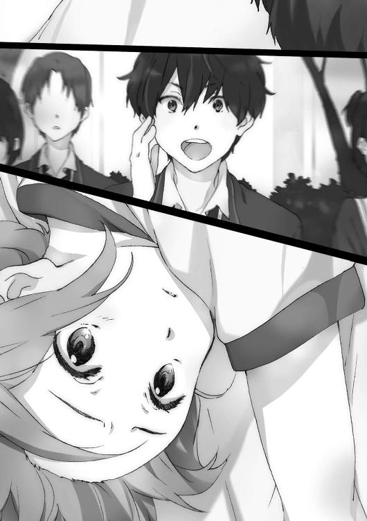
逆境を楽しむかのように笑みを深める。
じゃあ他の案にする、そう言っているようだった。
それは見切りの言葉。
期待されていなくてよかったじゃないか。肩の荷は下りた。わたしは本当に要らない存在になった。
引導を渡したのは、ほんのり幼なじみみたいな関係で、同じ小中更には高校でお互い望んだようにはなっていなくて、『輪月症候群』が絡んでよくわからなくなった......でも突然吹っ切れて人が変わったようになり、この舞台を用意してしまった人。
横須賀浩人――に下に見られるのは超むかついた。
なんか。無性に。いやそうされても当然かもしれないんだけど。
他の人に見下されるのは、わたしには恐怖の対象だ。
でも横須賀君には、そんな感情起こらなかった。
とにかく、下に見られたくない。負けたくない。ていうかずっとわたしが勝ち続けているし。テストの成績でも、だいたいわたしが勝つことが多いし。
でも上に立ちたいって訳じゃない。
ただ横須賀君との間には、上も下もない気がした。
人間として、対等だ。
だからバカにされるとか、見下されるとかがない。
普通に競い合える。負けたって、恥ずかしいとはちっとも思わない。
ああ、そんな人間いるんだ。
いや人間って誰もがそもそもそうじゃないのか？
ぱっ、と視界が開けた。
そして時間か？ 気合いか？
とにかく体の緊張がじんわりと解けていた。
さっきよりも解けるのが体感時間的には早い気がする。
でもまだ全身は動かない。
大友君はわたしの変化に気づく気配がない。きっとわたしを侮って、自分の【金縛り】の力を過信しているから。
そんなものがあったって、自分が誰かより圧倒的に上になることなんてないのに。
ぎりぎりまで引きつけてやる。まだ全然動けないフリをしておく。
「ほっ」
再び大友君がわたしを持ち直す。ちらっと見えた後ろは、ラバーマットのゾーン。そこに落ちたら敗北。ここからどうやれば逆転ができるか。位置的に飛び降りて攻撃は難しい。だったら体を摑んだ状態で投げ技を。振り子の原理を使って巻き込めば。
力を、込める。
わたしは左腕で大友君の首をがっつり摑む。次いで足の振り子を使って体を横に振る。遠心力がついて、ちょうどわたしの位置を反転させるまでスイングできた。そこから体重を下にかける。相手の首を持ったまま、わたしの体がマットへ背中から落ちる。
大友君はぐるんと前方に回転して、背中からマットへ墜落する。
どたっ、と大きな音がした。
【金縛り】の後遺症か、脇腹を蹴られた影響か、ふらつく体を支えてわたしは起き上がる。次の瞬間。
「うおおおおおおお！」
地鳴りのような歓声がわたしを襲った。
「すげええ！」「なに今の!?」「ぐる～ってなって吹っ飛ばしたよ！」「岩佐さんの攻撃だよね!?」
世界が一気に反転する。
『す、スイング式ＤＤＴだああああ！ リアルでお目にかかれるなんてっっっ！』
というかこれ技名あるんだ、と木崎さんの叫びで知る。直感でやってみたのだが。
『うるせえこの女......』
さっきまでの冷えた空気が吹き飛び、空気が爆発していた。
みんながわたしを見ている。
この盛り上がりを作ったのは、わたしなのだ。
ぶっちゃけ、気持ちよかった。
今のわたしに注目して欲しいと思った。
最強のわたしを、観て欲しい。
そう心の底から感じた時、わたしの世界は変わった。
「って......！ くそこの野郎っ！」
大友君が立ち上がる。凄く怒っている。けど今はあんまり怖くないぞ。
所詮上も下もないわたしと同じ人間に、できることなんて限られている。
なによりわたしは最強だから。
『岩佐が透明になった！ いやまた出てきた......いやまた透明に!?』
打ち合わせ段階で話にあがったものの実現不可能だと一度は諦めたこの技を、わたしは皆には打ち明けず特訓していた。
「消えた!?」「今度はあっちで出てきた！」「また消えて......今度はそっち!?」「って岩佐さんのスピードやばくない!?」
『岩佐が透明になりながら高速で闘技場内を駆け回っているのか!?』
『で、ですが消えてる間にあり得ない位置に来ています!?』
この場にいる誰もが驚愕の声を上げている。
高速で移動しながら消えて現れて消えて、見かけ上は瞬間移動を繰り返しているみたいに錯覚するはずだ。
人前では初トライだがこの反応は十分成功しているのだろう。
この空間を支配し主役となっているのは、わたしだ。
大友君は完全に面食らって戸惑っていた。
「え？ え......」
視線が追いついていない。
四角形のジャングルをわたしは飛び回る。不規則に、蝶のように舞って、距離を徐々に縮めていく。
「おいおい......。台本、台本通りにやろうぜ......」
後ずさりしながら大友君が今更言い出す。
「うわっ......わわっ......！ くそ！」
そして苦し紛れに『魔女からの一撃』を放つ。その圧は見当違いの方向に飛ぶ。
『追い詰める！ 追い詰める！ 凄いぞ岩佐！ マジバトルもんみたいだ！』
柳沼君みんなの前なのにテンション高くなってるなあ。あと、実況と解説は二人とも喋っているからあまりそう感じないけど、実際は二人での会話ないぞ。とか、そんなことを思考する余裕さえあった。
周りがよーく見える。
びっくりするくらい会場全体の温度が上がっていた。色んな人が手を叩いたり、声を出したりしている。
大友君の後ろにはあと一メートルもない。
最後右にステップし、透明になる。そしてぐっと両足に力を入れ、相手に飛び込む！
体からぶち当たると体格差で負けそうだったので、肘を突き出して体当たりした。
「えいっ！」
めりっ。
「げほおぉあ!?」
予想外に肘がぐさりと脇腹にめり込み、大友君は盛大に後ろに吹っ飛んだ。
「うおおおおおおお！」
声だけじゃない。
大地が揺れている。みんながどどどどと地団駄を踏んでいる。
大友君が「げほげほ！」と苦しそうに咳き込んでいる。
まあここは一つ、おあいこということにして貰おう。
拍手が会場を包んでいる。
このあとわたしはどうしたらいいかわからなくて、ただ突っ立って拍手を浴びている。
みんなの目がある。
でもとげとげしさや見下す目はどこにもない。
そもそもそこまで強い意志を持って誰かを見ることなんて――。
『それでは勝利者インタビューです。どうぞ！』
あれ、こういう段取りだっけ？ 今は頭が真っ白だ。段取りを忘れている。
しかもインタビューと言う割には、柳沼君はマイクを押しつけるだけでさっさと自分の席へ戻ってしまった。
そこでわたしは――。
＋＋＋
岩佐美帆がマイクを握る姿を、俺はどこか非現実的なものを見る気分で眺めていた。
俺や岩佐は日陰者だ。
きっと『一度目の世界』でも大した成功は収めていない。
普通にやっていれば教室の隅っこで高校生活は終わる。
更に今は最悪な流れに巻き込まれて、端の端に追いやられている。
そんな状況下で、岩佐がこれだけの喝采を浴びている。
調子のいいものだと思うが、皆悪意を持って『輪月症候群』を排除しようとしていた訳ではないのだ。
皆も周囲から外れるのが怖くて流れで同調していたに過ぎない。
単純に熱いバトルを見せられれば、盛り上がりもするだろう。
今の空気は明らかにチャンスだ。
だからやれ岩佐。
岩佐は喋り出さない。緊張しているのは変わらないのか、足は小刻みに震えていた。
日陰者で、きっと普通なら学年全体の空気を変えるなんてできない岩佐や俺だって。
死ぬ気になればやれる。
岩佐がマイクを口の前に持ってくる。
覚悟の籠もった顔だった。
『わたっ――』
キーン、とハウリングが起こった。
高まっていた緊張感がへにゃりと弛緩する。
ここでかよ。しかし締まらないところが岩佐らしくもある。
『す、すいません......。ええと、あの、わたし達はこうやって〈シンドローム〉が使える訳なんですけれども』
たどたどしくだが、でも皆に聞き取れるようにちゃんと喋っている。
『けど......けどそれが悪いことなんでしょうか？』
岩佐は問いかける。
『〈シンドローム〉に興味を持つ人が、悪い人なんでしょうか？』
とても当たり前の問いだ。
誰もが本当は知っていたはずだがきちんと見つめてこなかった事実を、突きつける。
『というか......〈シンドローム〉を使えるようになると、人としてなんか変わるんでしょうか。変わらない気が、わたしはします』
その言葉は皆に、自分で考えろと訴えかける。
『えと......わたしはこんな人前だと緊張してしまってもう、ダメになるんですけど......。だから人の目に見えない、透明人間になりたいとか思っていて』
自らが一番恥ずべきところを岩佐は晒した。
『そしたら本当に【透明人間】の〈シンドローム〉に目覚めてしまって......！ でもわたしは気づいたんです。わたしがなりたかったのは、透明人間じゃなかったって』
岩佐の話を観衆達は黙って聞き、受け止めている。
『わたしはちゃんと自分の力が出したかっただけで。力を出せても透明人間ならみんなに見えないから意味ないなって。それは本末転倒なんだと』
たぶん岩佐の言葉は、皆に届いている。
『それで、今も同じなんじゃないかっていう気はしているんです......』
岩佐がこんなにちゃんと喋れるなんて思ってもみなかった。
つーか今このタイミングでここまで喋るなんて台本にない。
でもアドリブであるリアル感が、きっと聴衆を聞く態勢にさせている。
『みんな......『輪月症候群』を排除してしまうことが、目的だったのかなって』
それが目的と言われて、はっとした人間がいたんじゃないだろうか。
『違う気がするんです。......きっと楽しい高校生活にすることが目的で、そう、だから、今は違う気がするんです』
そこまで話したところで我に返ったのか岩佐は右、左と首を振り、頭を下げた。
『わ、わたしの勝手言ってすいませんでしたっ！ 以上です！』
最後もっと強く主張してもよかったのにそうはせず、岩佐はそそくさと端へと下がる。
百を越える人間がいるというのに、辺り一面は静寂に包まれていた。
隣の人間同士で喋り合っている訳じゃない。
きっと今一人一人が考えている。
ぱち、ぱち、ぱち。
俺の隣から、その音は聞こえてきた。
大河内葵が手を叩き、共感の意を示している。
続けて拍手をする者は、すぐには現れない。
でも皆の様子に明らかな動揺が見てとれた。周囲を見渡しながら、どうするのが正しいのだと戸惑っている。それが正しいと勝手に決めつけていたことが揺らいでいる。
いける。俺は思った。
これから決勝として行う君塚と岩佐の試合もきっと盛り上がるから――。
「なにをしているんだお前らはっっっ！」
無粋な声が辺りに響いた。
それはまさかの、外部からの、来訪者。
自分達の担任でもある、高橋俊吾がずかずかと歩いて来ていた。
高橋は遠慮なしに俺達が作り上げた空間に割り込んでくる。
作り上げた雰囲気が霧散していく。
「これはいったいなんだ！」
さっきまでの熱が噓のように、冷たい沈黙が訪れている。
「マットを持ち出して......まるでリングだな。......そういうことか」
勘がいいのかばればれなのか、高橋は俺達がなにをやっていたのか悟ったようだ。
高橋は闘技場の場外を表すために置かれたラバーマットの上に乗る。
闘技場という設定の場所も、今となってはただのマットの固まりだった。
大人達はいつだって子供達のことを考えていると言いながら、自分達の都合でしか物事を考えない。だから子供達が作り上げたものだって、簡単に踏みにじってしまう。
「ここにいる奴ら全員共犯だからな」
連帯責任。最悪な一言だった。
主犯は設置されたマットや机の近くにいる俺や岩佐達だとわかるはずだ。
だけど傍観者の位置にいる奴も犯人にしてしまう。
そうやって全員に反省させようと教師的立場で考えているのかもしれないが、現実はそうならない。
「お、俺達見てただけなんですけどー」
群衆の中から誰かが声を上げた。
「ここにいる奴ら全員共犯だ」
ダメ押しだった。
俺がちらりと視線を動かすと、観客席スペースにいる一人、二人と、目が合う。
――なんでこんなことになるんだよ。
――責任とれよ。
そう訴えていた。
最悪のケースだ。
ここに集めたのは俺達だから人のせいにするなとは言えない。俺達のせいになってしまう。残るのは、やっぱり『輪月症候群』に関わるべきではないという最悪な印象。
貧乏くじを引かされたと恨まれても文句を言えない。
そうやって俺達――『輪月症候群』に関わる者は再び悪役に戻ってしまう。
「あの......先生」
校舎の裏に下がっていた【炎使い】田宮健太が戻ってきた。
「俺達なにか迷惑をかけるつもりはなくて」
「田宮。お前みたいな真面目な奴までこんなことに関わっているとはな。やはり......あの病気の影響か。残念だ」
流石の田宮も言葉が継げなくなる。
「じゃあまずここにいる人間全員の名前を確認する」
高橋にことごとく蹂躙を許している。
このままだと間違いなく俺達は破滅だ。
教師に怒られて終わりではない。学校での立場を完全に失ってしまう。
一年の間の『輪月症候群』の浮上だってもう無理だ。
いくらなんでもこのケースは想定していない。予備案もなにもない。逆転策も思いつかない。クソ。ダメだ。なんでこんな最悪な流れになってしまうんだ。
やっぱり俺じゃ変えられないのか。
この世界の流れに逆らうことなんて、できないのか。
視線を感じた。
実況席に座る柳沼清十郎が、俺の方を見ていた。
更に隣の木崎まひるも。
そして、闘技場の脇に立つ岩佐美帆も。
おいおいなんでだよと、笑いそうになった。
俺を見たってなんも出てこねえぞ。責任をとれと言いたいのか。
「......横須賀君」
か細い声が俺の耳朶を打った。
俺の隣にいる、世界を変える女が俺の名前を呼んだ。
その大河内の声で俺は、岩佐達の視線の正体に気づいた。
皆が俺に、期待をしていた。
希望の光を見ていた。
こんな、なにもない、俺に。
「なにか私にできることがあれば......言って」
更に大河内は続けて囁く。
「俺って、そんな頼りがいのある奴だったか？」
高橋が大勢の観衆がいる方に注意を向けている隙に会話を交わす。
「調子に乗っては欲しくないけど」
「手厳しいな、おい」
「でも......ここまでみんなを引っ張ってきたのは、あなたよ」
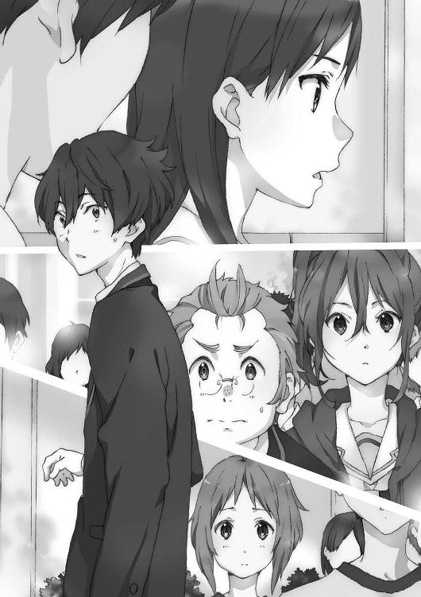
俺が立案して他の奴らを巻き込んで......まあそうか。
「あなたなら、きっとできる」
俺にならできる。
その一言が、こんなにも勇気をもたらすものだとは思わなかった。
確かにそうだ。まだ諦めるには早い。死んだ訳じゃない。ならギリギリまで足搔け。
めちゃくちゃ破れかぶれで、正直かなり運にも恵まれたが、ここまできたのは事実だ。
自分で世界を塗り替えようと動き出したら、人が集まった、でかい祭りを起こせた。
行動すれば、なにかが起こる。なにかは変わる。
実際俺には手札があった。
本当はまた違う場面で切るつもりで考えていたけれど、よくよく考えれば今この場面で切るしかないカードだ。
これは偶然でも運命でもない。
俺が引き寄せた、必然だ。
教師と生徒には立場がある。学校という仕組みを成立させるために必要な秩序だ。
でもそれも、今は不要だ。
「しかし多いな、クラス順に並ばす方が......なにをしている？」
俺は実況席に向かって歩き、目を点にする柳沼と木崎を無視してマイクを引っ摑んだ。
そして第一声。
『邪魔しないでくれますか高橋先生？』
「......なにを言っているんだお前は」
『ここは今、俺達の場所で時間だって話です』
一体教師になにを言い出すんだ、と高橋の背後に見える一年生達は驚きの表情だ。
「ここは学校だ。学校にはルールがあり、生徒は教師に従うことになっている。もちろん濫用はできないが。......従わない者は『退学』だってあり得るんだぞ？」
後ろで聞いているだけの一年生達の方が、震え上がっていた。
『はみ出した奴を追い出して、健全さを保つ、その行為が正しいって言えるんすか？』
「......反抗的な態度だな」
教師にこれだけ刃向かって、むしろ俺は清々しい気分だった。
「本当に、どうなるかわかっているのか？ 覚悟はあるのか？」
正直、怖い。
別に学校なんてどうでもいいと思っていても、排除されることは怖い。でも。
『覚悟があるかはそっくりそのまま俺が聞きたかったことですよ』
本気で喧嘩を売る。
「なんだと......？」
世界を俺が思うように変えてやるなんて野望、遅かれ早かれ、いつかはこの壁にぶち当たっていたんだ。
大人達が作り上げた社会の壁が、今立ち塞がっている。
『覚悟があって先生も行動してるんですよねって確認したんですよっ！』
「いい加減にしろ、横須賀」
静かな注意には、本気の怒りが込められていた。
というか今回の件は、勝手にこんなことをやって、どう考えても俺達の方が悪い。
だから無理矢理、土俵を変えてやる。
『ここでみんなに聞きたいんだけど。あの事件、知ってるよな？』
俺は高橋の後ろにいる生徒達に向かって尋ねた。
『あの事件っつーのは、女子テニス部の盗難事件な』
「ほう......」
高橋は小さく息を吐いて、こちらに向かって歩いてくる。一歩、また一歩。目が据わっていた。ちびりそうに怖かった。
『その事件の前後、部室の鍵が盗まれていたこと。そしてその鍵はおよそ内部の人間にしか盗めないこと。この二つから犯人は内部犯じゃないかって話になっていて』
焦らず、落ち着いて、順序立てて喋れ。
『生徒同士の中で犯人捜しもあって結構大変なんですよ。一部では、そこの【透明人間】になれる岩佐美帆が犯人じゃないかって話も出てて！』
多くの視線が、岩佐に降り注ぐ。
ここでスポットが当たるのは本人にとって想定外だったろう。
だけど今の岩佐なら。
『岩佐。財布を盗んだのは岩佐か？』
尋ねると岩佐は、はっとした表情をして、次の瞬間。
「わたしは......わたしはやっていません！」
ここにいる全ての人間の視線を受け止めながら、大きな声で言った。
真っ直ぐなその言葉はきっと多くの人間の胸に届いた。
「......その話がどうした。全く論点が合っていない」
そいつは否定できないな。
『ただここである話があってですね高橋先生！』
そろそろ取り押さえられても文句を言えなくなっている。急げ。
『少し調べてみたらわかったことなんですけど、女子テニス部の部室で盗難事件があったその日、窓ガラスが割られていたらしいじゃないですか？』
その時、はっきりと高橋の顔色が変わった。
『部室の鍵が一時行方不明になって、その時盗難があったから内部犯、って理論らしいですけど、だったら犯人なんで窓ガラス割ったんですかね？ もちろん窃盗犯と窓ガラスを割った人間が別の可能性もありますけど、その確率、低くないですか？』
岩佐が入手してきたこの情報、本当はもっと別の舞台で使う予定だった。
でも今やるしかない。突破するしかない。
『ただこの話には裏があってですね』
「いい加減にしないかっっ！」
一喝。
怖い。マジで怖い。本気で捻り潰されそうだ。でもその人間の根源的な恐怖もかなぐり捨てて、俺は立ち向かい続ける。
『窓ガラスが割られた事実を目撃した人間が、どうも口止めされたんですよね！』
「バカな......」
高橋の声のボリュームが下がった。
『口止めをした教師がその日の当直担当だったんですよね！ もしかすると自分の担当時間にそういう事件があったとバレたくなかったとか？』
これ以上はただの推測になる。深入りして墓穴を掘らないようにする。
『ともかく先生にお願いしたいのは、内部犯有力説を撤回してくださいってことです。確か先生はホームルームで、内部犯の可能性が高いとおっしゃってましたよね？』
高橋は全ての状況を知っていたはずなのに、なぜかわざわざそう言った。
そこにはどんな理由があった？
沈黙していた生徒達がほんの少し、ざわつく。
別になにもないのかもしれない。でも怪しむだけの材料はある。
苦虫を嚙み潰したような顔をしている高橋は、今なにを考えているのか。
ただ高橋の立場になってみれば、こんな大勢の前で生徒に屈服する訳にもいかない。だから押し込むんじゃなくて、教師としての面子が保たれるよう......。
『先生はそういう想定をされていなかったと思うんですけど......さっきもちらっと言ったように内部犯説があって、今生徒同士が疑心暗鬼になって大変なんですよ』
「それは......」
『なので部室の鍵が職員室から盗まれたので内部犯の可能性が高い、って話は取り下げて貰えませんか。生徒のためにも』
立場を守れる、大義名分のある落とし所を提示する。
それでいいだろう。引き下がってくれ。
頼む。頼むから――。
高橋は俺を睨んでいた目を閉じて、大きく、大きく溜息を吐いた。
「確かに......その通りだな。内部犯だと断定したのは、撤回しよう。外部犯の可能性もある」
それは、高橋にとっては大したことがない一言かもしれない。
でも俺達にとっては重要な言葉だった。
そのセリフを、一年生達の多くが聞いていたことにも意味がある。
一つの『輪月症候群』批判の前提が崩れ去ったのだ。
黒だと決めつけていた灰色が、実は白に近いとわかる。そうすると他の黒だと思っていた灰色も白に見えてくる。
全てがひっくり返り、塗り変わっていくかもしれない流れがこれでできる。
あとはこの勢いで今の件も流してしまえれば最高だ。
『で、今日のこの件もっ！ あとから俺がきっちり説明するんで後日にして貰えないですかっ!? 逃げも隠れもしないんで！』
「それとこれとは話が別だ」
『......ぐっ』
「覚悟しろ......。特にお前は口の利き方含めみっちり絞ってやるからな......」
「いや本当に申し訳なかったと......！ 反省、反省してますんでっ」
マイクを外して、俺は半泣きになりながら必死に頭を下げる。
もうこれ以上高橋に反抗するのは限界だった。情けなくても許しを請う。
「......さっきまでの傲慢さはどこへいった？」
高橋は全体に聞こえるトーンではなく俺にだけ話しかけている。
「あ、あれはだって......そうでもして、疑惑を解消しないと、疑われて偏見持たれたままになる奴がいたんで」
しどろもどろで俺は答える。
「事件の犯人と疑われている奴か」
「は、はい......。主に」
「疑われているのは横須賀ではなく、他の誰かか？」
「......直接俺じゃないです」
「誰かを助けようとした訳か」
「え」
高橋にそう言われて、俺は自分で驚いた。
全然そんなつもりはなかったのだが、形だけ見ればそうも言えるのか。
高橋は顔を撫でながらしばし黙考する。俺を見る目が、さっきと変わったような気が。
「ちなみに......このマットや道具の使用許可はとっているのか？」
「え......。一応、他の奴が部活の顧問を通じて許可はとってます」
「道理は通しているようだな」
「あ......はい」
「盗難の件では、私にも見落としがあった。教師としてあるまじきことだ」
高橋はまた声を大きくして、皆に聞こえるように話す。
「だが残念ながら......私はもう一度だけ見落としをしてしまうようだ」
高橋が校舎の方を向いた。そして歩き出す。
その場から去っていく高橋の背中を、俺は、いや他の皆もぽかんと口を開けて見送っていた。
ぴたりと、一度立ち止まる。
「次はないぞ」
そう言い置いたあとは、二度と振り返ることなく校舎の陰へと消えていった。
高橋の姿が完全に見えなくなるまで誰も動き出さなかった。
静かな空間で、俺はこの状況がどういうことか考える。
多くの一年生を集めた。そこで『輪月症候群』への偏見をなくし流れを変えるための祭りを行った。皆の活躍により好印象を与えることができたと思った。ところがそこで教師の高橋がやって来てすべてが終わりかけた。しかし。
俺はそれを、一応なんとか、追い払った。
「てゆーか帰ろっ！」
誰かがよく通る声で言った。
それでやっと皆、今すべきことを思い出したらしい。
「わ、わたしも帰らなきゃ」「あ......俺も用事あったんだ」「白々しいんだよ今更」「逃げよでいいじゃん！」「オレはまだ高橋に認識されていないはず......！」
口々に勝手なことを言って、観衆達が駆け出した。
もう自分のことしか考えていないんだろう。
それはそれでいい。......が、ここで終わるのは少しもったいない。
『おいみんな！ 逃げながらでもいいから聞いてくれっ！』
マイクを持って俺は叫んだ。
『まああんなもんなんだよ教師も！ 自分の都合......かわかんないけど勘違いして！ 都合が悪くなると撤回して......っていうか思ったより高橋がものわかりのいい教師だったのかもしれないけど、ともかく！』
皆校舎の方へ急いでいて俺など見ちゃいない。誰か聞いている人間はいるのか？
『絶対偏見ってあるんだよ！』
俺の言葉は誰かに届くか。
『今日〈シンドローム〉を見て、ああこんなものなんだって思わなかったか。で、ちょっと面白いと思わなかったか？ 俺は思ったね』
お前らだって思っただろ。
異能バトルをリアルで観られるなんてきっとこの世界のどこにもない。
『悪い面もあると思うさ。でもそればかりじゃねえだろ。だから全然使わない、関わらない、ゼロにするってもったいなくないか？ ゼロはおかしいだろ』
皆がこの場から逃げ出している。だけどどこか足取りがゆっくりなのは気のせいか。
『つーかそれを決めたの、誰だよ!?』
みんな、俺の話を最後まで聞こうとしているのではないか。
俺の言葉は、きっと誰かに届く。
『全員本当に『輪月症候群』には全く関わりたくないと思ったのか!? じゃあどういう考えでそうなったんだ？ 言えるのかっ』
違うはずだ。みんな振り返ればわかるはずだ。
『なんとなく周りの流れで、そう思ってなかったか!?』
だから気づけ。
『騙されるなよ！ 流されるなよ！ それこそがこの世界の戦略なんだよ！ 誰が言い出したかもわからない意見を鵜吞みにして思考停止するなよ！』
敵はいつでもそこに潜んでいて、楽にさせてやると俺達の手を引っ張る。
手を引かれて意志もなく立ち入る場所は楽園に見えるかもしれない。
でもその楽園は人の大事な部分を殺すんだ。
『誰かが決めた流れになにも考えず乗っかるとかだせーじゃん。だから自分で考えろって。それで自分で決めろって！』
あとここからは俺の意見だからな、と前置きをしてから続ける。
『〈シンドローム〉、やっぱり凄くないか。とんでもなくないか？ でもってこれは、輪月高校に通う俺達しか持ってないものなんだ』
まだ可能性でしかないそれは、必ずしも俺達になにかを与えてくれる訳ではない。
だが可能性があるから、俺達の想像もつかないところまで辿り着けるかもしれない。
『勉強するのもいい。部活をするのも。学外の活動に精を出すのも。遊びまくるのも。どれもいい青春なんだろう！ だったら『輪月症候群』の可能性に賭ける青春があったっていいだろ！ つーか全部やれたらもっと最高だろ！』
大学に行くための、大人になる前の準備だとか洒落臭い。
青春はもっと、自由だ。
さあもうみんなが校舎の方へ消えていってしまうから、最後に好きに言っておこう。
『あとさあ、俺はこれからも自分が納得できないもんをガンガン潰して、俺がいいと思うように変えていくつもりだからよろしく！』
三年後に死ぬという運命は、まだ変わっていないかもしれない。
でも俺はこれから。
自分を変える。
周囲を変える。
世界を変える。
運命を変える。
世界は俺を死なせてこの世から追い出すつもりらしいが。
それまでにテメエを根本からひっくり返してやる。
誰がこのままやられるか。
俺が死ぬ運命を、俺はこれから叩き潰す。
「いってきます」
朝、家を出るためにダイニングを通りかかるので声をかけていく。
「......あんた最近学校に行くの楽しそうだよね」
寝惚け眼でもそもそパンを齩りながら姉の絵理奈が言った。
「は？ 別に普通だろ」
思わず立ち止まって返す。
話題を聞きつけて炊事場にいた母親がわざわざ顔を見せた。
「なになに浩人に好きな人ができたの？ 青春ね、もう！」
「それは全く違うな」
父親は黙って新聞を読みながら、コーヒーを啜っていた。
あの金曜日のあと、土日を挟んだ月曜の学校は普段となんら変わりなく見えた。
穏やかな陽気の中、少し急ぎ足の生徒達が自分の教室へ向かっているのと歩調を合わせて俺も歩く。途中気になって体育館の方に視線を向けた。
あの体育館の裏で、派手なイベントがあった匂いなど全く嗅ぎとれない。
教室に入る。前席に柳沼はいなかった。
蓮田も野上も俺に背を向ける形で座っていて、なにも言わず俺は席に着いた。
淡々と授業が進んでいく。
いつもと違ったのは、二週間ぶりに岩佐が教室に来て授業を受けたことだ。
特に歓迎ムードがあった訳でもなく、かといって露骨な無視もなく、何人かが「大丈夫？」などと当たり障りのない言葉をかけていた。
昼食はまた柳沼と二人だった。
今日の柳沼は「『輪月症候群』の〈シンドローム〉が大人になっても使用できたら」というもしものお題を話すのに忙しいらしく、他の話題は一切なかった。
岩佐は、大河内や君塚と昼食を共にしたようだ。
長い休み時間、俺は柳沼と会話するか、でなければ本を読んで過ごしていた。
大河内や木崎ともほとんど喋ることがなくて、一度だけ木崎が「お疲れ様」と俺に声をかけたくらいだった。
昼以降の授業も気づいたら終わっていて、ショートホームルームの時間になっていた。
担任高橋俊吾は朝も教室にやって来たが、先週末の件にはなにも言及しなかった。
ただ唯一「盗難事件の日、実は窓ガラスも割られていた。だから外部犯の可能性もある。もちろん今も取り組んでいるがセキュリティ対策には万全を期す」と口にした。
それがなければ、金曜の場面はなかったのではないかと思うほど淡々といつものように、高橋は取っつきにくい態度であった。
俺が個別に呼び出されて指導されることもない。
なんだか先週末のことが幻のように思えてきた。
ショートホームルームが終わって、高橋が教室内から出ていく。
途端に砕けた空気が生まれる。
皆思い思いの放課後を目指し、帰り支度を始める。
学校が始まってもう二カ月にもなってしまう。
新鮮みはだんだんと薄れ、慣れが生じてなにも考えず流れてしまう時間も生まれる時期になった。教室内の色んな関係性も固定化されてくる。
人は変化を嫌って落ち着きたがるから。
だけど。
人にはきっと、落ち着きたがる性とは正反対のベクトルもある。
なにか面白いことが起こらないか。
当たり前がぶち壊されてしまわないか。
世界がひっくり返ってしまわないか。
きっと、人は心のどこかで願って、夢見ている――。
「いやギターってムズいのな。簡単なやつはぺっぺーと弾けるのかと思ってたわ」
「それは舐めすぎだね」
蓮田と野上が軽音部トークをしている。
「あーあ......。俺も絶対音感生まれないかなぁ」
普通の、どこの学校でも行われているだろう他愛もない会話だ。
でも俺達は輪月高校の生徒だから。
「......〈シンドローム〉で」
蓮田がその単語を発した時、エアポケットのように人の会話が少なくなっていた。
だから多くの人の耳にその声は届いただろう。
野上も返す。
「絶対音感あっても急にギター上手くなんないよ。だったらまだ、こういう音を引きたいと思った時かってに指が動く......〈シンドローム〉の方が現実的だよ」
「それじゃロボットじゃねーか」
彼らは気取らず普通に話している。
夢のような話を現実でしている。
そして口にすることから、夢を現実にする物語は始まる。
雪崩が起こったように、次々と皆が口に出す。
「一回は使ってみてーよな。俺は雷を起こす〈シンドローム〉期待な」「完全に中二病じゃん」「うるせえ。雷は大抵最強キャラなんだよ」
「危なくないならあの〈シンドローム〉バトルもやってみたいよね～」「うそ、怖くない」「でも魔法少女って一回はやってみたくない？」「......一理ある」
「【透明人間】の〈シンドローム〉は存在している。だったら相手を透明にしてしまう力があっても不思議じゃない。そう、服を透かして見る力も......」「ここに変態がいる！」「サイテー！」
もうその話題を出すことに怯えはしない。
世界が塗り変わっていく。
流れが逆転する。
みんなが当たり前のように『輪月症候群』の話題で盛り上がっている。
「よ......横須賀......！」
前席の柳沼が振り返って俺の名を呼ぶ。丸メガネの奥の目をうるうると滲ませている。
「皆、金曜の話を誰もしなくて......失敗に終わったのかと思っていた......。だが、違っていたんだな......！ 素晴らしさに......気づいたんだな。革命が起こるぞおおおお！」
柳沼が「うっひょー！」と飛び上がったあたりで俺は席を立った。
「つーか、お前〈シンドローム〉のこと批判してたんじゃねーの？ 役に立たない。使える奴は調子乗ってる、とか」
そんな会話をしている奴らがいた。
「だ、だってあの時は〈シンドローム〉使いのせいで盗難だなんだって言われてて。でもそれがデマっぽかったからさ」
「にしても掌返しすぎだろー」
「お前だって似たようなもんだろ。デマに踊らされてただけだよ、デマに」
俺や岩佐はクラス全体から、割と酷い仕打ちを受けた気がするのだが、かなり無責任なことを言っていた。全く当事者意識がない。
でもそういうものだっていうこともわかる。
明確な犯人は、たぶんこの教室にはいないんだ。
「横須賀君」
名前を呼ばれて振り返る。
美しい、という形容しかできない少女がいる。
笑っている大河内には、これまでにはなかった色があった。
出来すぎて写真映りを意識したような笑顔の奥に、心の芯から滲み出るような喜びが表れている。
「ねえ、どうして周りがこれだけ『輪月症候群』の話をしているのに、横須賀君に声をかける人間がいないのかしら」
「うるせえっ。知るかっ」
確かに君塚には「ねえ、結局何人の【ドッペルゲンガー】出せるの？」「え」「わ、それ興味あるー」と人が群がっているし、また木崎にも「木崎さんの詳しい解説凄かったな」「いやぁ～」「マジマジ、手慣れてる感じしたっていうか」「少なくとも聞き慣れてる感じしたよね～」「ああ......うん」と人が集まってきている。
「まあ、元々人望がなかったからかしらね」
確かに運動会で普段目立たない奴が大活躍しても、その日中くらいはちやほやされるが、数日経てばなにも変わらず元の木阿弥というケースは多い。土日を挟んだため、俺の魔法も解けてしまったのか......。
「ちょっと、本当に落ち込まないで。冗談よ。きっと、急にキャラチェンジがあったからみんな戸惑っているのよ。近づきにくいなって」
「近づきにくいのは変わらねえのかよっ」
べ、別に皆からちやほやされてモテたいとか思って、ない、けど！
「そういえば、横須賀君」
「なんだよまた改まって」
大河内は他の人に聞こえないよう声のトーンを低くした。
「......この世界は『二度目の世界』で、横須賀君は三年後に......って話は」
「そ......それは、な」
「うん」
「それは勘違いだ」
「えっと、勘違い？」
「そう、そんな訳ない。俺が妄想していただけだ」
それはやっぱり俺の中では真実だったが、あえてそう答えた。
大河内が気にする必要はない。俺の妄言だと思ってくれていればいい。
「ああ、それならよかったわ」
大河内はほっとした表情で溜息を吐く。
次の言葉は「あ」「あ」とお互いが別のものに気づいた時点で止めてしまった。
岩佐美帆が、森本成美と向かい合っていたのだ。
森本はいつもの取り巻きを今は連れてはいなかった。
「〈シンドローム〉ってさ、やっぱり危ないものだと思うの。詳細を知る人がいなくて、対策法もまだなにもわかっていないから、大変なことに繫がるかもしれない。つーか騒ぎ立てすぎると生徒会や先生によく見られないのは間違いない」
厳しい表情で森本は語る。
「でも......」
森本は顔を歪めて口ごもる。
二人の対面に気づいて、他の何人かもそちらに注目をし出した。おかげで怒りか羞恥か顔を赤くして、余計に話しづらそうになっていた。
「......でも、盗難事件の話とかで、変な疑いをかけたのは悪かったわ」
森本はほんのわずか首の角度を傾け、頭を下げる。
「証拠もないのに決めつけが過ぎた。それで岩佐さんに迷惑をかけたなら......謝る」
「ああ......ええと、それは......」
岩佐には全く予想外のセリフだったのか、しどろもどろになっていた。
「あのもし森本さんが、わたしが学校に来なくなったこと、気にしてたら......それは、森本さんのせいじゃないから。気にしないで」
「そ、そう。それは関係ないわよね」
当然、とばかりに森本は頷く。
「言っておくけど〈シンドローム〉を使わない方がいいって考えには変わりないから」
彼女の意地なのか、それとも案外彼女なりの矜恃があるのか。
ともかくすぐに掌を返す奴らとは違う。それが女王たる所以かもしれない。
言うことだけ言うと「じゃ」と森本は教室を出ていく。
森本みたいな考え方があるのも認めなくてはならない。
いつかまた彼女は、俺達の前に立ち塞がることがあるのかもしれない。
岩佐はそれを複雑な表情で見送り、俺の視線に気づいた。目が合う。
俺と、岩佐と。
根本は同じような、普通じゃクラスの端にいるような二人だけど、今後はもしかすると別の方向に進んでいくかもしれない。
可能性はゼロじゃない。
岩佐が俺の方に向かって歩き出す。
「あ......あの岩佐さんっ」
その時横合いから、他の女子が岩佐に話しかけた。複数人の集団だ。
「えっと......学校休んでるのに、お見舞いとかいけずごめんね」「も、もしかしてお昼一緒に食べなかったのが原因......」「ごめん、わたしまでクラスからハブられるのが怖くて」「でも岩佐さんの昨日の戦ったあとの言葉聞いて、間違ってるなって」
「あ、はい。うん。ありがとう」
複数人に同時に話しかけられて、目を白黒させながら岩佐は応じている。
もう、人目を気にして学校に来なくなった女子はいなかった。
大河内や君塚といったちゃんと一緒に行動する人間もできたから、岩佐はもう大丈夫だろう。
俺は視線を切って歩き出す。
「横須賀君」
ちょんちょんと、大河内が俺の肩を突いた。
「なんだよ」
「見てあげて」
ん、と指された方では、岩佐が女子を相手にしながらも、俺の方を見ていた。
そして彼女は口を動かす。
――ありがとう。
透明な声で、岩佐は言った。
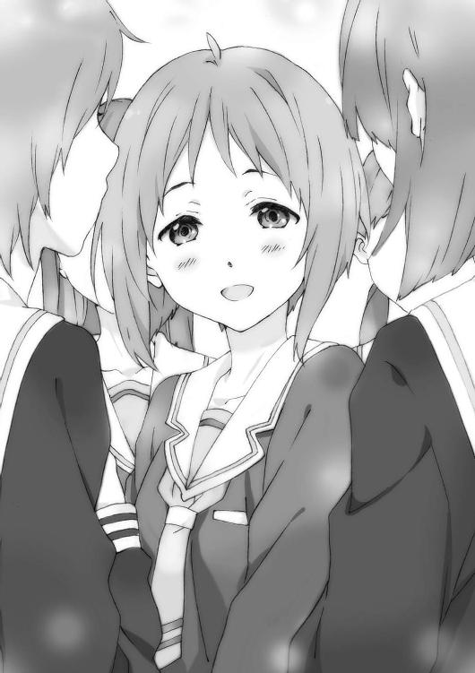
×××
人生とはなんだろうか。
人が生きるということか。
では生きるとはなんだろう。
ただ飯を食って寝て周りに流されていても、生きていることになるかもしれない。
だけど人として生きるには、自らの意志でなにかをしようとしなければならない。
まだ人生なんて語れるほどなにもわかっちゃいないが、それだけは学んだ。
今回俺は、自分なりのやり方で、学年全体の流れに逆らって『輪月症候群』を皆に少しばかり認めさせた。
別に前より評判が上がった訳ではない。
完全に無視するのももったいないよなという雰囲気になっただけで、生徒会や教師の目を気にしているのに変わりはなかった。
でも俺みたいな、今までクラスの文化祭の出し物の決定にさえ、なんら影響を与えたことのない人間だって、死ぬ気になればなにかを変えられると知った。
なにかを変えるためには、自分が変わらなければならないことも。
これから『輪月症候群』がどうなっていくのか、どれだけの可能性を秘めているのかはわからない。
だけど俺は、この信じられない可能性に賭けてみたい。
それくらいでかい博打を打たなければ、俺の命なんて取り返せるはずがない。
座して待つより攻めて死ね。
俺は『二度目の世界』でなにかをやり遂げる。
できれば世界を塗り替える。
そして俺も生き残る。
ここは始まりに過ぎない。
誰にとっても、そうだ。
岩佐美帆は一度挫折しかけたがちゃんと学校に来るようになった。
人の目への耐性も少しはついたらしい。でもどうせ大勢で話し合うような場面ではあわあわと意見を言えないでいるんだろう。しかし岩佐みたいな奴が、本来の力を発揮してクラスの真ん中に食い込めるようになったら、ちょっと面白そうだ。
大河内葵の持つ問題自体はなにも解決していない。
どん底な気分はもう十二分に味わっていて、あとは上を向き進むだけだ。もしかしたらここでは面白いことができるかもしれない、と信じかけてはいるようだ。素材的には世界に通用するポテンシャルを持っていると思うから、驚くほどの結果を期待したい。
柳沼清十郎はこれまで以上に熱心に『輪月症候群』を追究していくつもりらしい。
学年で再び盛り上がった『輪月症候群』の波に乗って毎日テンションが高い。最近も新たに〈シンドローム〉に目覚めた者がいると知り「なぜオレは目覚めない!?」とうるさかった。
君塚桜はクラスの元仲よかった面子とも和解したらしいが、大河内や岩佐とも行動を共にする機会が増えた。
「人脈の幅が広がったのはいい機会だったわー」とコミュ力強者の発言をしていた。学年全体に名前が売れた影響か知り合いも増え、前より楽しそうにやっている。
田宮健太は野球部の一年生のリーダー的ポジションになっていると聞いた。
一度流れた『放火』に関する噂も今やかき消え、疑われても誰も責めなかった姿勢を称賛されているらしい。そもそもこいつは外見・性格・才能と三拍子揃ったイケメンなのでなんの心配もしていない。むしろもうちょっと苦労しろ。
大友裕也はあの戦いで岩佐に負けたことで多少大人しくなった。
台本無視については結果オーライだったため特に追及していない。ただ他の件も合わせてかなり学年での評判を落としているようだ。悪いことをすればそれなりの報いがあると身を以て証明してくれていた。今は〈シンドローム〉が使えることを鼻にかけることもなくなったようだが......。
そして、横須賀浩人の学校での立ち位置に大きな変化はなかった。
野上や蓮田といったクラスメイトとの交流は再開したが、新たに友人が多数増えたりはしていない。「例のアレの時高橋先生に向かっていったの凄かったよねー」と噂されはするが「でも危なっかしい雰囲気しすぎて近寄りがたいわ。高橋に目をつけられそうだし」と避けられているらしい。なぜだ。
流石に名前が売れたのはある。二・三年の間でも多少噂になったとか、ならないとか。
だからほとんど唯一、横須賀浩人で変わったことといえば、
「よ、横須賀君」
「横須賀君」
「おお横須賀！」
「うっす横須賀」
「おう、横須賀」
「......よう」
そんな面子に、親しげに、なんか信頼してるぜ的に、声をかけられるようになったくらいのものだ。
まだまだ。
俺はまだまだこれからだ。
死の恐怖につきまとわれてはいても、全ての希望は潰えていない。
『輪月症候群』にはまだ秘められた可能性がある。
あの夢に出る『世界をやり直した女』を見つけることも諦めた訳じゃない。
終わりまで三年足らずしかないという見方もできるが、逆に言えば三年近く時間はあるのだ。その間に女を見つけるか、そもそも別の方向から運命を覆すことも――。
「ねえ、横須賀」
廊下を歩く俺のことを、木崎まひるが呼び止めた。
アーモンド型の瞳は伏せがちで、アップにされた明るく赤みがかった髪も今は元気がない。
「あんまりさ、なに言ってるかわかんないと思うんだけどさぁ......」
何度も口を開きかけてはやめるという動作を繰り返してから、彼女は俺に尋ねた。
「――この世界全てを巻き込んででも、人生をやり直したいと思う？」
アオイハルノスベテ 了
本書を手にとって頂き、誠にありがとうございます。
はじめまして、もしくはお久しぶりです。庵田定夏です。
そんな訳で、新シリーズ開幕です！
本作は私にとって二シリーズ目になります。新人の気持ちで謙虚に、精一杯やらせて頂きますので、皆様よろしくお願いいたします（ついでの宣伝で恐縮ですが完結済みの前作『ココロコネクト』シリーズも是非よろしくお願いします）。
前シリーズ完結より気づけば約一年が経過しておりました。ちょっと長めのお休みを頂きましたが、庵田定夏はその間ただ眠りについていた訳ではありません。しっかり充電をし、その上パワーアップし、今やニュー・庵田定夏とも呼ぶべき存在になったのです。プロレスで喩えれば、生き埋め戦で敗れしばらく沈黙したあと、新コスチュームと共に復活する、そんな感じです。伝わりませんか？ いいんです、自己満足だから。
ともかくも私の全力をもって作品をお届けして参ります。少しでも皆様に「読んでよかった」と思って頂ければ、これ以上の喜びはありません。
ここからは謝辞を。
白身魚様。今回もイラストを引き受けてくださって、本当にありがとうございます。また一緒にお仕事できること、大変嬉しく思っております。イラストに負けないよう努力を続けますのでこれからもよろしくお願いします！
担当様、今回もとんでもなくご迷惑をおかけしました。担当様の頑張りに報いることができるよう全力を尽くしますので、見捨てずにお付き合いくださいませ。
まとめてしまい大変恐縮ですが、私の作品が読者の皆様に届くまでに関わってくださった全ての皆様。皆様のお力があってこそ、私も作品を発表することができております。
この場を借りてお礼申し上げます。
また私の身近な人達へ。みんなのおかげで新作を出すことができました。色んなところで支えられているなと感謝感謝の毎日です。本当にありがとう！
そして最大限の感謝は、やはり読者の皆様へ。皆様のお力があって本作の登場人物に命を吹き込めたこと、作者として心の底から感謝いたします。
さて次巻につきまして。次巻はお待たせせずにすぐお届けする予定です！ ファミ通文庫の公式サイト『FBOnline』などをこまめにチェックしてくださいね。『あの子』にスポットが当たるお話を現在鋭意執筆中ですのでお楽しみに！
それでは、皆様と一緒に素晴らしい『青春』を駆け抜けられることを祈りつつ。
二〇一四年八月 庵田定夏
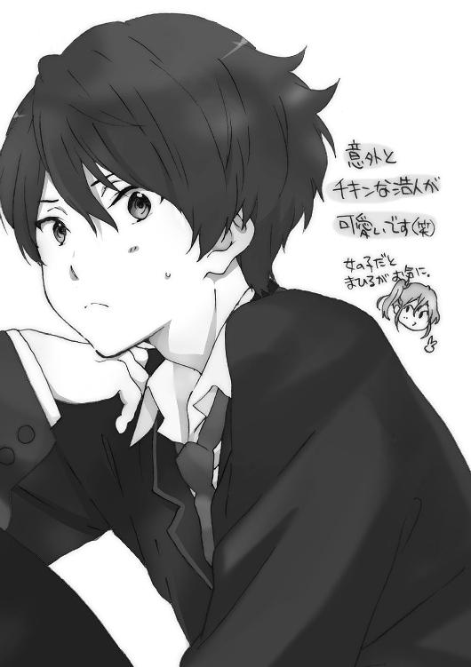
著者
Sadanatsu Anda
１９８８年生まれ大阪出身。第11回えんため大賞特別賞を受賞し、『ココロコネクト』シリーズでデビュー。
朝型、野菜好き。最近したいことはジム通い。起業家になりたいと思っていたらいつの間にか本を書いていた。いつまでもドラマチックでエンターテイメント溢れる人生を送りたいと思っている慎重派。
イラスト
Shiromizakana
猫中心な今日この頃。仕事をしていてもあっちでニャーと鳴けば参上、こっちでニャーと鳴けば参上（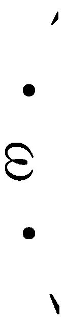キリッ）。
...というか、居間ではなくちゃんとした仕事場を作らなくては...と言いながら何年も経つのでしょう...（遠い目）。
電子版 ファミ通文庫
アオイハルノスベテ
著者／庵田定夏
イラスト／白身魚
発行人 青柳昌行
発行 株式会社KADOKAWA
〒102-8177 東京都千代田区富士見2-13-3
http://www.kadokawa.co.jp
企画・制作 エンターブレイン
デザイン 山崎 剛（AFTERGLOW）
(c)2014 Sadanatsu Anda
本電子書籍はファミ通文庫『アオイハルノスベテ』（2014年9月11日発行 初刷）を元にして制作しております。
本書に関するお問い合わせ先
エンターブレイン カスタマーサポート
電話 0570-060-555
（受付時間 土日祝祭日を除く12：00～17：00）